| 仮面舞踏会の夜に-家庭教師は侯爵のキスに揺れる-【書下ろし・イラスト10枚入り】 (トパーズノベルス) | |
| 有允ひろみ | |
| (2016) | |
トパーズノベルス
仮面舞踏会の夜に～家庭教師は侯爵のキスに揺れる～
著者 有允ひろみ
Illustration ＯＤＥＫＯ
この物語はフィクションであり、実在の人物・団体・事件とは一切関係ありません。
仮面舞踏会の夜に～家庭教師は侯爵のキスに揺れる～
「ぁっ......」
身体をきつく締め付けていたコルセットの紐がほどかれ、豊満な胸が蝋燭の光の中に白く浮かぶ。
「あぁ、なんて美しい光景だろう」
感嘆の吐息を漏らし、男の唇が柔らかな胸の先をちゅっと含んだ。
「ぁあんッ......！ ぁ、あぁ......っ」
淫らで密やかな仮面舞踏会の夜に、ソフィアは琥珀色の瞳を持つ男に囚われてしまった。
身体を包んでいた薔薇色のドレスは、部屋の中央にあるテーブルの上に。コルセットは肘かけ椅子の背もたれにかけられ、穿いていたドロワースと靴下はヘッドボードの縁を飾っている。
唯一残されているのは、目元を覆うエレガントな仮面だけ。
薔薇の花をモチーフにして作り上げられたそれは、あつらえたようにソフィアの顔にフィットしている。
そして、目の前にいる逞しい身体つきをした男の顔にも、黒紫羽をあしらった美しい仮面がつけられている。
お互い素性を明かさないままキスをし、清潔なシーツの上でこの上なく淫らな行為に及んでいる今この時、ソフィアは男の名を心の中で叫んでいた。
〝ジョシュア！ あぁ、ジョシュア！〟
仮面をつけていても、彼だとわかった。あれほど愛した男の声や瞳の色は、彼女の記憶の底にずっと残っていたのだ。
「今宵、あなたのような淑女と交われる事を神に感謝しなければなりませんね」
男の舌が、固くなった胸の尖りをくるくると舐めまわし始める。
彼の方は、自分が誰を抱いているのかまったく気づいていないようだ。
「ひ......ぁっ......！ あンッ、あンんッ！ は......ッ、ぁあ......」
精一杯我慢しているのに、唇からは悦楽の声がとめどなく零れ落ちる。かつて彼がくれた官能的な愉悦を、再び味わう事が出来るなんて。
一度は忘れようと努めて、結局はそうする事を諦めざるを得なくなるほど甘く淫靡な愛撫を。
「ひ......ぁ......、ん、んッ......」
声を出さずにいようと思っているのに、どうしても抑える事が出来ない。
どうしてこんなにも気持ちいいの？ 身体が融けてしまいそう。
身体ばかりか、石のように固くなっていたはずの恋をする心までも。
「胸への愛撫がお気に召しましたか？」
乳首を食んだままの唇が囁くけど、そんないやらしい質問に答えられるはずもなかった。
だけど、小刻みに揺れる睫毛が答えはイエスである事を示している。
「さっきからつま先が焦れていますね？ そんなにきつくシーツを掴んで......いいでしょう、もっと違うところも気持ちよくしてさしあげますよ」
わざと音を立てて胸の先をしゃぶった後、男の唇がソフィアの耳朶に移った。
長くしなやかな指が無防備な脚の間をまさぐり、熱い蜜が溢れ出す蜜孔にぬぷりと沈んでいく。
「ぁ、ああっ......、ゃ......い......やぁ......！」
「何がいやなんです、レディ？ こうされる事がですか？」
ソフィアの中を捏ねる彼の指が、熱い蜜を絡めながら襞の奥に潜む淫情のありかを探り始めた。
少しずつ場所をずらしながら丁寧に襞をめくり、そこを捏ね回してはソフィアの唇に軽くキスを落としてくる。
「ひ......ンッ......！ あ、あ......あぁっ！ そこは......、あ！ あ！」
膣壁のある一点をコリリと引っ掻かれて、薄っすらと色づいていた彼女の肌が、一気に赤味を増す。
「ここ、ですね？ 可愛い人」
男の指が、執拗にそこを攻め立ててくる。角度を変え、強弱を変えながら何度も。
「い......ゃぁ！ あ、あンッ、駄目ッ......、ああンッ！」
目の前に薔薇色の火花が散り、身体の最奥で眠っていた欲望の種が一気に芽吹いた。
もう一生熱を感じる事はないと思っていた部分が、こんなにもたやすく炎を宿すなんて。
「あぁ、とてもいい......僕の指を素敵に締め付けていますよ。さぁ、そろそろあなたがお望みのものを入れてさしあげましょうか」
ソフィアのつま先を掌に握ったかと思うと、男は彼女の両脚を自身の肩の上に高々と掲げた。
がっしりと逞しい脚が彼女の双臀を持ち上げ、蜜孔のほとりに熱く猛った男根をあてがってくる。
「ひ......ッ......」
とたんに、身体中から力が抜けてしまった。濡れた淫唇が男のそれにぴったりと添っているのがわかる。物欲しそうに蠢き、早くそれを咥えさせて欲しいと言わんばかりにひくひくと震えている。
「もうこれ以上待たせては可哀想ですね」
喘ぐ唇をキスで塞がれ、一気に奥深く熱い塊を身体の中に沈められた。
「んっ！ んぁあぁッ！ あ、あぁッ......！」
身体がびくりと仰け反り、過去に封印したはずの快楽が嵐のように彼女に襲いかかる。
ゆっくりと腰を引かれて、また深々と突かれる。膣壁を思う様擦り上げられ、ソフィアは絶叫に近い叫び声を上げた。
「あ、あ......！ あぁ......！ も......っ......」
「今、なんておっしゃいました？ ......もっと、かな？」
ぐっと奥まで腰を入れられ、思わず男の肩の上で両の指先を絡めてしまった。
「......っ、あぁっ！ ぁ、ん......ぁっ、ぁあ、あッ！」
頭の中では拒んでいる。だけど、身体はもうとっくに〝彼〟を受け入れてしまって、はしたないほどの蜜を溢れさせている。
「素敵に啼くお方だ......。僕との交わりがお気に召したみたいですね？」
じゅぷじゅぷという淫らな音。揺れる蝋燭の炎が、二人の交わりを更に淫靡なものに仕立て上げている。
「ああ、すごくいい......。あなたの熱いヴァギナが、僕のペニスを食むように愛撫してくれていますよ」
「......ゃっ......」
卑猥な言葉を耳元で囁かれて、身体の奥が一層激しく痙攣するのがわかった。恥丘の上にあった彼の指が、花房の中にある秘芽をくりくりといたぶりだす。
「あ、あっ......！ ぁぁ、あっ！ ん......ん、っ......」
叫ぶ唇をまたキスで塞がれ、快楽に酔う身体がビクビクと小刻みに震え始めた。
「素敵だ......このままあなたの中で融けてしまいたいくらいに」
男はなおも激しく腰を揺らめかせて、きつく押し込んだ昂ぶりの先で彼女の最奥を掻き回してくる。
ソフィアの瞳が、薄闇の中で男の琥珀色の瞳とぶつかる。
「美しい、まるで薔薇の化身のように綺麗だ」
男の指が、ソフィアの右太腿の内側にある赤い痣の上で止まったような気がした。
その薔薇の形をした痣を、ジョシュアは何度愛でてくれただろう。
だけど、そんな淡い感触は胸の先を甘くねじられた事ですぐにかき消されてしまった。
「願わくは、明るい陽の光の下であなたを貪りたい。仮面を外して、あなたが僕に抱かれて乱れ悦ぶのをじっくりと見つめながら......」
荒ぶる波のように腰を揺らめかせ、男はなおもソフィアの中にある淫襞をきつく奏でる。
「もっと僕を感じて......。あなたの身体に僕を刻んで。今この時だけでも──」
波打つ肌が、しっとりと濡れて炎の明るさを反射させる。ブロンズ色に融けあった二人の身体は、いつ果てるともなくお互いの熱を求め合い、交じり合った。
※ ※ ※
明るい夏の日差しが広々とした庭園に降り注ぐ、ある晴れた日。
ソフィア・コーンフィールドは雇主であるミルフォード夫妻に頼まれて彼らの娘アンと共にカーマイン公爵邸で開かれている舞踏会に来ていた。
明るいブルネットの髪に紫がかった青紺色の瞳。細く通った鼻筋の下には、小さいけれどふっくらと柔らかそうな唇が微笑んでいる。美人であるのに、決して冷たい感じはせずむしろ親しみを感じさせる。
コルセットがいらないくらい細い腰をしているのに、デコルテの下にある胸は驚くほど豊満で肉感的だ。もっとも、それを隠すために日頃から胸元が目立たない服を選んで着ているし、今日来た目的も美しく着飾って踊る事ではない。
三月に二十三歳になったソフィアは、元々は伯爵家の長女として生まれて、イギリスはノーフォークシャーで父母と二人の弟妹と共に幸せに暮らしていた。
しかし、母が六年前に他界し、その四年後に夢想家の父が亡くなって以来、一家の生活は一変してしまう。それというのも、父の死をきっかけに一家の財産を調べたところ、残されているのは住んでいるカントリーハウスと少しの土地だけという事実が判明したからだった。
近くに頼れる親戚もなく、このまま何もしないでいれば間違いなく飢え死にする。そう判断したソフィアは、必死になって生きる糧を求めて、二年前からミルフォード家の家庭教師として雇われる身になっているのだ。
ミルフォード家の家族は、伯爵であるミルフォード卿とその奥方、ソフィアと同じ二十三歳のアン、十歳になるエレナと現在海外旅行中で二十歳の息子ポールの四人だ。皆明るく朗らかで心優しく、中でも長女アンとは特別に仲が良いし考え方もよく似ていた。
「あなたの気持ちはよくわかるわ、アン。でもね、ミルフォード夫人はあなたのためを思ってあんな風におっしゃるのよ。あなたのお母様は、あなたが将来豊かな生活を送れるよういつも心を砕いていらっしゃるわ」
心とは裏腹の模範的な台詞。
「わかってるわ、ソフィア」
「ごめんなさいね。私だって本当はわかっているわよ」
ソフィアはほとほと困っていた。二年前、今にも家を売り飛ばさなければならないほど困っていた彼女に、救いの手を差し伸べてくれたミルフォード夫妻には並々ならぬ恩を感じている。
だけど、アンの気持ちを思うと、夫妻の味方ばかりするのは酷な気がする──。
今回ソフィアが舞踏会に来た目的とは、年頃の娘であるアンの見張りをするために他ならない。
『私が一緒に行けたらよかったんだけど、どうしても抜けられない用事があるのよ。ソフィア、アンがおかしな振る舞いをしないかちゃんと見張っててちょうだいね』
出かける前にミルフォード夫人から何度も念を押されて、ソフィアはその度に神妙な顔で頷いてにっこりと微笑んで見せた。
「ええ、だいじょうぶですわ。ミルフォード夫人」
ソフィアの亡き母であるカサンドラは、聖母のような貞淑さと教科書通りの礼節を身につけた心優しき女性だった。それを余すところなく受け継いでいるソフィアは、ミルフォード夫人からお目付け役として絶大な信頼を得ているのだ。
今回、不本意ながら舞踏会に同行できない夫人だったが、あわよくば娘が将来夫となる理想的な紳士と巡り合えればいいと思っている。
この時代、貴族女性として生まれたからには、裕福な貴族の嫡男を掴まえ、ゆとりある生活を確保するのが最良の生き方であり幸せだと言われている。
ただし、それはあくまでも両親が振りかざす理想論であって、その事を疑問に思う一部の娘達は納得がいかない。
事実頭では夫人の言い分を理解しているソフィアだけど、心ではそれが本当に幸せに繋がるのかと疑問に思っている。
だから、アンが馬車に乗るなり、自分の母について文句を並べ立てるのも無理もないと思う。
出来る事なら、アンに味方して彼女の気持ちに添いたいと思うし、それが出来ればどんなに楽だろうと思っている。
だけど、夫妻に雇われているという立場上それは無理だ。
すっかり板挟み状態になっているソフィアは、どちらの味方をしても辛い立場になってしまう。
アンの将来に関する事で言えば、父親であるミルフォード卿の方はまだよかった。だけど、夫人の方は正に「理想的な結婚」という固定観念を持っている。
〝その事さえなければ、とても素敵な方なんだけれど......〟
実際、普段のミルフォード夫人は大らかで明るい女性だ。ソフィアにとてもよくしてくれるし、彼女がいる事で一家が明るい雰囲気に包まれている事は確かだ。
「お母様ったら、舞踏会に来た男性を地位と財産の順に並べて、上から順に媚びを売れと言っているのよ。私、そんなのまっぴら！ だって私にはロバートがいるんですもの！」
「ええ、もちろんわかってるわ。あなたがどんなにロバートの事を愛しているか。彼がどんなにあなたを愛しく思っているか。それについては、夢に出てくるほどさんざん聞かされているもの！」
冗談めかしたソフィアの言葉に、二人は肩をすくめて笑い声をあげる。
アンと彼女の恋人であるロバート・ショーは、半年前にアンが友人と訪れた旅先で出会ったという。
お互いに一目惚れで、すぐさま気持ちを伝え合った後は頻繁に連絡を取り合い、逢瀬を重ねた。
当初、ロバートがサリー州に広大な領地を持つ侯爵家の嫡男と聞いたミルフォード夫妻は、娘がいい嫁入り先を見つけたと喜んでいた。
ただ、それはアンがロバートを自邸に招き実際に彼に会うまでの話だ。
初めこそロバートを歓迎していた夫妻だったが、彼の立ち振る舞いや言動を見るうち、彼に対する考えを徐々に変えていってしまう。
それというのも、ロバートは身分こそ理想的な男だが、如何せん見てくれも中身もどうしようもなく田舎者で野暮ったい男なのだ。
話す事と言えば領地内で獲れる小麦やジャガイモの話ばかりで、気の利いた冗談を言う事もなければ理解も出来ない。
見るに堪えない醜男というわけではないけど、身長はアンの肩までしかないし、着ているものも明らかに流行遅れでセンスの欠片もない。
「しかし人柄はいいし頭だって悪くないみたいだ。何よりアンを心から愛しているし、アンも同じ気持ちらしいぞ」
そんな夫の言葉に、夫人も一度は首を縦に振ろうとした。
だけど、ある日二人が近隣の邸宅を連れ立って訪ねた後、お節介な友人達が夫妻に正直な感想を述べたのがいけなかった。
〝悪いけど、あれじゃあ領主のご令嬢と小作人にしか見えやしないわ〟
〝領民と一緒になってジャガイモの苗を植えたり収穫をしたりするって、どうなの？〟
〝身分はともかく、アンなら同じような条件でもっと外見のいい人を見つける事が出来るんじゃないのかしら？〟
それからというもの、ミルフォード卿はさておき、夫人の方はアンとロバートの交際を望ましくないものと一方的に決めつけてしまった。
娘の結婚に関して言えば、ミルフォード卿は妻の意見を重要なものとしてとらえている。
その結果、アンは恋人との逢瀬もままならなくなり、彼と会う時は何かしら別の理由を見つけて両親を欺き、隠れてこそこそと会わざるを得なくなってしまった。
その事に薄々感づいているのか、アンがぱったりとロバートの話をしなくなってからというもの、ミルフォード夫人は事ある毎にアンが良からぬ企てをしていないかどうかソフィアに監視させるようになっているのだ。
「ロバートのどこが気に入らないって言うの？ 彼ほど誠実な人はいないし、将来の領主として領民にも慕われているのよ。外見が何？ 領民と共に泥だらけになって働く事のどこがいけないって言うの？ 私はそんな彼が大好きだっていうのに！」
アンという女性は、普段慎ましやかで倫理的なのに、時として思い切った行動をとることもある。
そういった二面性があるところも、ソフィアとアンに共通した資質であり気が合う理由だった。「私だってあなたと同じ考えだし、彼ならあなたを幸せにしてくれると思うわ」
アンを通してロバートの人となりを知り、実際に彼に会って親しく話すようになっているソフィアだ。
二人には共にいて幸せになって欲しいし、彼らならきっとそうなるであろう事もわかっている。
「でしょう？ なのにお母様ときたら！ まぁくどくど言っても仕方ないわね。暗い気分はもうおしまいにしましょう。私、今回の訪問ではいい気晴らしを計画しているのよ。ほら見て、カーマイン公爵の邸宅が見えて来たわ」
アンのいいところの一つは、気持ちの切り替えが早い事、そしてそれが常に前向きなところだ。
「ねぇ、やっぱり駄目？ 今回の舞踏会は人数も多いし、知っている人に会う事もあまりないかもしれないわ。ソフィアが一緒にいてくれたら私だって楽しいし、もしかしたらロマンティックで心が震えるような恋があなたを待っているかもしれないわよ」
アンは、今回の舞踏会にソフィアと共に出席する事を望んでいる。だけど、彼女はそれをずっと断り続けていたのだ。
「いいえ、私はやめておくわ」
ソフィアの頭の中に、一人の精悍な男の顔が思い浮かぶ。
それはかつて彼女が心から愛した男で、彼もまた自分を愛してくれていると信じて疑わなかった人の微笑だ。
彼女が舞踏会に出ようとしない直接の理由ではないけど、舞踏会と聞くとどうしても彼の事を思い出してしまう。
「あ、見て、アン。素晴らしく綺麗な薔薇園だわ」
ソフィアは窓の外の薔薇に視線を向けた。可憐な薔薇の花は、彼女が大好きな花の一つなのだ。
「もう、ソフィアったら。素敵なロマンスより薔薇の方に関心があるの？」
アンは、仕方ないといった風に肩をすくめ、笑った。
今から行く舞踏会は、この界隈で行われるものの中で最大級の規模と華やかさを誇るものだ。
去年の年末から社交のシーズンが始まり、今月でそれも終わりを迎える。毎年恒例で行われるカーマイン邸の舞踏会は、長く続いたシーズンを締めくくるにふさわしい一大イベントである。
若い娘なら誰だって心躍る絢爛豪華な集まり。
ただし、ソフィアにはそうではなかった。
アンもミルフォード夫妻も彼女に参加する事を勧めてくれたけれど、彼女は着飾って踊る事よりも寡婦のようにそれを遠巻きで見ている方を選んだ。
それどころか、夫妻からの依頼がなければ、彼女は決してこんな場所に近寄ることはしなかっただろう。
『私もかつてはアンみたいに心から愛する人がいたわ。華やかな舞踏会で初めて出会って、すぐに恋に落ちた。愛し合い、その人のためならすべてを投げ出してもいいとまで思っていた。本当に心から愛していた。なのに......』
馬車がカーマイン邸の門を通り抜けて広大な敷地の中に入った。
辺りには様々な色の花が咲き乱れて、庭のあちこちにはもう舞踏会のお客達がそれぞれに散策を楽しんでいるようだ。
〝この二日間、何事もなく終わりますように。出来れば、私を知る人に会う事がありませんように〟
ソフィアは、心の中で切実にそう願った。
彼女はもう自分の人生においてロマンティックな出来事など望んではいない。
ましてや、心が震えるような恋など──。
「さぁ、着いたわ」
馬車を下りたソフィアは、リボン付きの帽子を少しだけ目深に被り直した。
後は、舞踏会の間滞在する部屋に着くまで、先を歩くアンのミモザ色のドレスの裾を見て歩くだけだ。
どこかからヴァイオリンの音が聞こえてくる。そんな心安らぐ音楽さえ、ソフィアの心を躍らせる事は出来ない。
五年前に心からの愛を失ったソフィアは、一生その愛に殉じようと心に固く決めていたのだ。
お客達が順次到着して、舞踏会も本格的に始まろうとしている。
まだ日は高く、舞踏会には公爵の親族はもちろん、名のある政治家や軍人までも数多く集ってきていた。
ソフィアは、事前に示し合わせた場所に佇んでいるアンを部屋の窓から見守っている。幸い、二人にあてがわれた部屋は会場全体とは言えないまでも、その大部分を見渡す事が出来る位置にあった。
カーマイン邸の舞踏会は、大広間だけではなくその前に広がるテラスや庭園までも会場として使っている。人々は花の中で音楽を聞きながら踊る事も出来るし、煌びやかなシャンデリアが作る黄金色の光の中で歓談する事も出来るしくみだ。
〝こうして見ているだけで十分だわ。あんな華やかな場所に、私の居場所なんかないもの......〟
五年前、ソフィアはまだ今よりも若く向こう見ずなところがある少女だった。
人々が優雅に踊るのを眺めるうち、ソフィアの頭の中に忘れがたい舞踏会の思い出がよみがえってくる──。
※ ※ ※
それはソフィアの母が亡くなった次の年の事。まだ彼女が十八歳の春の日の出来事だった。
遠方に嫁いだ友達のベス・マッケイに呼ばれて、ソフィアは彼女の婚家が主宰する小さな舞踏会に出席していた。
「ソフィア、紹介するわ。こちら、ロード・ジョシュア・スペンサーよ。あなたより五つ年上。彼のお父様のユヴェール侯爵の事は聞いた事があるでしょう？」
目の前に立っているのは、長身で逞しい身体つきをした男性。
深みのある金色の髪に、こめかみに向かって太く真っすぐ伸びる眉。その下には、一目でソフィアを魅了してしまった琥珀色の瞳が光っている。日に焼けてやや浅黒くなっている肌が彼の男性的魅力をより際立たせている。
「はじめまして、ミス・ソフィア。先約がなければ、次のダンスのパートナーに立候補したいのですが」
控えめな言葉ながら、彼女を見て微笑む美しい顔は、有無を言わさない決意と自信に溢れている。彼の言葉に、ソフィアの胸はそれまでなかったほど高鳴る。息が苦しくなり、耳朶が火照るのを感じた。
「あいにく次はもう決まっているんです。もし、その次でよろしければ、喜んでお受けさせていただきます」
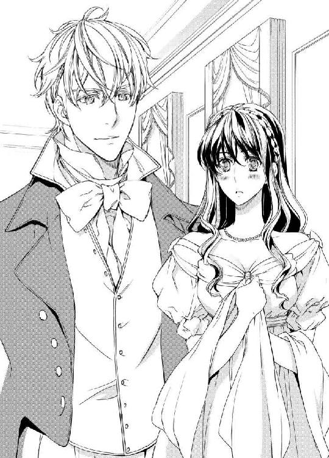
亡き母に厳しく躾けられていたお蔭で、ソフィアはなんとか余裕を見せながら微笑みを返した。
「あぁ、やはりこれほど美しいレディは、すぐには手が届かないものなのですね」
いかにも残念だというジョシュアの顔。その表情は、すぐにまた微笑んだ顔にとって代わる。
〝なんて素敵に笑う人なの。あの琥珀色の瞳、凛々しい顔立ち。こんな人とダンスを踊れたら、どんなに素敵だろう〟
決して焦らしたわけではない。本当に、次のダンスはベスの義弟であるアダムという青年と約束していたのだ。
「では、曲が終わり次第すぐにお迎えに参ります。くれぐれも僕が次に控えている事をお忘れなきよう」
慇懃に腰を曲げてソフィアの手の甲に唇を当てたジョシュアは、彼女がアダムと踊る間中広間の壁際に佇み、じっと彼女の姿を目で追っていた。
アダムと踊りながらも、ソフィアはもう気もそぞろだ。曲が止むと同時に、ジョシュアが真っ直ぐに彼女の元に近づいて来る。
「お手をどうぞ、レディ」
さっさとアダムからソフィアの手を奪い取ると、ジョシュアは彼女を連れて広間の真ん中で立ち止まった。
今までに会った男性の誰よりも強引であるのに、どこかスマートで心地よささえ感じさせるエスコートの仕方。
後から考えると、ソフィアはこの時もう既に恋に落ちていたのだ。
「ワルツはお好きですか？」
「ええ。でも、実は少し足首を痛めてしまって」
さっきアダムとポルカを踊った時、彼にドレスの裾を踏まれ足首をひねってしまったのだ。
ソフィアの言葉に、ジョシュアはにっこりと微笑む。
「では僕が上手くサポートしてさしあげます。いいですか、全て僕に任せて。あなたに辛い思いはさせませんから」
曲が始まった途端に、ソフィアのつま先が床から離れた。
彼女の背中に当てられた彼の右手が、絶妙な力加減で彼女の脚への負担を軽くしている。
緩やかなチェロの音色が、弾むようなヴァイオリンの音と混ざり合って部屋中に広がる。
「足を痛めているとは思えないほど軽やかな身のこなしですね」
ジョシュアが耳元に囁く。
「そんな事ありませんわ。あなたが上手くリードしてくださるから」
頬を赤らめたソフィアに、ジョシュアは踊りながらまた耳打ちする。
「ジョシュアと呼んでください。あなたとは、これからもっと親しい間柄になりたいと思っていますから」
「では、私の事もソフィアと」
ダンスを踊っているのでなければ、初めて会った異性に手を取られ、ここまで親しく話すなんてとんでもなくはしたない事。だけど、踊っている時は二人だけで話せるし、触れ合っていられる。だから、舞踏会は刺激的だし素敵なのだ──。
「ソフィア、君は羽根のように軽いね。いくらでも踊っていられる。こんな気分になったのは、生まれて初めてだな」
ソフィアの手を握る彼の手にぐっと力がこもった。急に親しげに語りかけられ、頬が火照るのを感じる。そばにいるだけで引き込まれてしまうような彼の魅力に、すっかり足元をすくわれてしまった気分だ。
曲が終わり、他の男性がソフィアに近づこうとするのに、ジョシュアは断固として彼女のそばを離れようとしない。
「ジョシュアったら、少しは他の殿方にもチャンスを与えたらどうなの？ ミス・ソフィアだってあなたとばかり踊るわけにはいかないでしょう」
見かねた彼の従妹だという女性が彼をたしなめても、まるで効果がなかった。
「ミス・ソフィアが、どこかへ消え去れと言うのならそのとおりにする。だけどそうでなければ、片時も彼女のそばを離れるつもりはない」
従妹の言葉にそう切り返したジョシュアは、ドレスの襞に隠れていたソフィアの左手をそっと握ってきた。有無を言わさない強い想いが、触れ合った指先からはっきりと伝わってくる。
「どうです、ミス・ソフィア？ 僕は今日これからのダンスのすべてをあなたと踊りたいのですが、いかがですか」
その頃のソフィアは、まだ社交界にデビューしたばかりだった。
母に教えられた淑女としての作法は頭に叩き込んであるけど、初めて会う殿方にこうも熱烈にアプローチされるなんて全くの想定外だ。
本来なら、同じ男性と続けて四回以上踊る事はマナー違反になってしまう。
だけど、ソフィアの衝動的な面が突然頭をもたげて、レディに相応しい他の一切の考えを組み伏せてしまった。
「ええ、いいわ」
弾むような気持ちで彼の申し出を受け入れたソフィアは、それからすべてのダンスを彼と踊った。
そして、皆が踊り疲れて何か摘まもうと別室に移動した隙に、ジョシュアの部屋に二人して逃げ込んでしまったのだ。
「愛しい人、僕は君に一目惚れしてしまった。こんな無礼を働くことを許して欲しい。もし許される事なら、僕はこの場に跪いて君のつま先にキスをしたい」
許可を求める彼の言葉は、ソフィアが聞く最初の求愛でありセクシャルな誘惑だった。
部屋に入り、ジョシュアが彼女を腕の中にしっかりと抱いた時にはもう心は決まっていた。
〝この人に違いないわ。私が一生を捧げる殿方は、ジョシュア以外には考えられない〟
優しいけれど厳格だった亡母からは、軽はずみな行動は断じてすべきではないと教わっている。
それは今も心に刻んであるし、敬愛する母の教えに背く事は彼女に対する裏切り行為だ。
それでも──。
ソフィアはジョシュアからの激しい求愛には勝てなかった。
ベッドの縁に腰かけ、裸のつま先を彼の手に委ねて指先で唇を押さえた。
そうでなければ、彼が動くたびに声を上げてしまいそうで怖かったから。
つま先にそっと触れるキスをされ、徐々にドレスの裾がたくし上げられていくのを、いけないと思いつつうっとりと眺め続ける。
ソフィアの脚が震えているのを見て取ったジョシュアは、おもむろに立ち上がり彼女の肩を優しく胸に抱き寄せて、言った。
「君を怖がらせたくない。だけど、君の魅力には抗えないし、僕は君が欲しくてたまらなくなってる。出来る限り優しくするよ。まずはキスから......君を壊さないように、大切に扱うと約束する」
最初はただ軽く触れるだけのキス。そこからしばらく穏やかで優しい唇へのキスが続いて、ソフィアの身体からも徐々に緊張が解け始める。
それがいつしか舌が絡み合う濃厚なものに変わって、まだ静かだった彼女の呼気がだんだんと乱れていく。
「ソフィア......とても可愛いよ。君はまだ何もかもが初めてなんだね」
頷く間もなく、舌の根をくすぐられる。呼吸はすでに熱い吐息へと変わっていて、息をするたびに喉の奥から甘えたような声が漏れてしまう。
そうしているうち、いつの間にか胸元を隠すコルセットが緩んでいる事に気付いた。
ソフィアは、もう自分がキスのその先を望んでいるのを感じた。
〝もっと触れて欲しい〟
そんな彼女の想いが通じたのか、ジョシュアは彼女の身体からコルセットごとラベンダー色のドレスを引き剥がした。
「あっ......」
今まで押さえつけられていた乳房が、弾けるようにジョシュアの目の前で露わになる。その色は新雪のように白くて、柔らかな突端はピンク色をしている。
「いや......っ」
慌てて胸元を隠そうとするのに、まだ完全には脱げていないドレスがソフィアの動きを封じてしまう。
「どうして隠すの？ 綺麗だよ。君の胸は素晴らしく芸術的だ」
ジョシュアは、柔らかな乳暈とツンと尖りだした乳首をすっぽりと唇に含んだ。ちゅくちゅくと吸いながら尖端を舌で舐めると、すぐさまそこが固くしこってくる。
「あンッ！ ぁ、あ......っ！」
ソフィアの身体が、ジョシュアの腕の中で弓のようにしなった。そのままベッドの上に寝かされ、彼はソフィアの身体を隠すすべてのものを取り払ってしまう。
「ソフィア、僕の愛しいソフィア。君のすべてを僕にくれるね？ その代り、僕のすべてを君に捧げさせてくれ」
着ていたものをすべて脱ぎ捨てたジョシュアは、引き締まった肢体をソフィアの身体の上に重ね合わせた。
「ジョシュ......ア......」
彼のキスをうなじに受けながら、ソフィアは消え入るような声で彼の名を呼ぶ。
「怖がらないで。まだ会って間もないって事は十分にわかっている──でも、これは僕の心からの気持ちだ。誓って言う。僕は君を心から愛しているよ、ソフィア」
キスがうなじを滑り、細い鎖骨の上に留まる。
「あぁ、ジョシュア、嬉しい......私も......私もあなたを愛しているわ」
ソフィアの気持ちを確かめたジョシュアは、唇を彼女の胸元へと移動させる。
それまでよりももっと強く大胆に彼女の身体にキスをし、乳房を掌で弄んだ。そして徐々に唇を下へと移動させて、薄い柔毛に舌先を遊ばせてからおもむろにソフィアの脚を左右に押し開いた。
彼の目の前に、しっとりと濡れた花房がある。それはまだ花開く前の蕾のようにぴったりと双房を閉じたままだ。
「ジョシュア......。こんな恰好......恥ずかしいわ」
震える声でそう訴えるソフィアに、ジョシュアは甘い声で語りかける。
「君のここは、君の中で一番神聖な部分だ。清らかで、神秘的で、そして堪らなく官能的な場所だよ」
ジョシュアのキスがソフィアの腰の輪郭を巡った。そろそろと中心に近づき、焦らすようにゆっくりと舌先を太腿の内側へと滑らせていく。
「うん？ これは......？」
彼の舌がソフィアの右の太腿に小さな赤い痣を見つけた。
「まるで薔薇の花のようだ。これは生まれつきのものかな。君のここには、秘密の薔薇が咲いているんだね」
感嘆したように呟くジョシュアに、ソフィアははにかんだ声で答えた。
「ええ。それは私が生まれた時からずっとそこにあるのよ......」
話す言葉の語尾が、羞恥に掠れる。
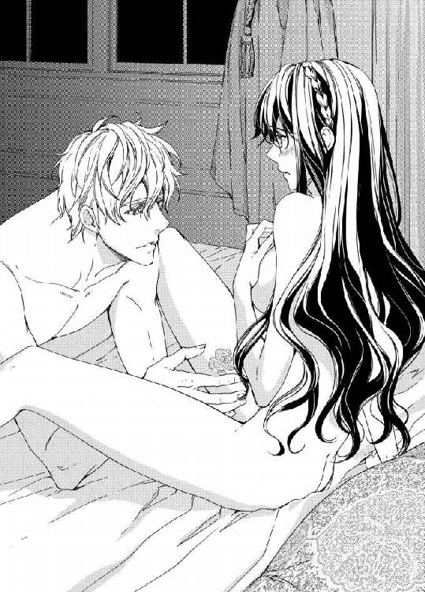
そこに何度かキスを落とした後、ジョシュアがゆっくりと顔を上げる。
「僕以外に見せちゃいけない。これは君が咲かせてくれた僕の薔薇だ。他の誰にも渡さない......僕だけの薔薇だ」
「ジョシュア......、ぁッ......」
再び下を向いた彼の唇の先には、まだ触れずにおいた彼女の花房が慎ましくも淫らに震えている。ジョシュアの濡れた舌が、まだ閉じたままの秘裂の中に差し込まれた。
「あぁっ......！ ぁ、んッ、ジョシュア......、そんなところッ......！ あぁンッ！」
すっかりあらわになった彼女の脚の間を、彼の舌先が泳ぎ回る。
ゆるゆると、上下に。舌先がぷっくりと膨らんだ頂を見つけて、薄い皮に包まれている秘芽をとんとんとつついた。
「ひ、あッ！ あ、あ、ああ......ッ！」
初めて受ける秘裂への愛撫に、ソフィアは大きく仰け反り、両手できつく口元を抑えた。
「ん、んッ！ う......！ ぅ、ん......ぁあッ！」
「君の中に入りたいよ、ソフィア......。君と一つになって、お互いへの愛を感じ合いたい......」
胸の先にあった指が下りて、濡れそぼった花房の間に沈んだ。そしてすぐに濡れた蜜孔を探し当てて、ゆっくりと中へ入っていく。
「あぁッ！ あ、あ......ん！ ジョシュ......ァ、あぁ、あぁッ！」
「とても熱くて気持ちがいい......指がとろけてしまいそうだ」
ぬぷぬぷと抽送する彼の指は、蜜孔の様子を探りながら、徐々に本数を増やしていく。
ピアノの鍵盤を叩くように、あるいはグラスの縁を指で擦るように。
彼の指がソフィアの熱く濡れる蜜孔の中を淫靡に動き回っている。
「あ、あぁッ！ あ、んッ......！ あ、ぅ......」
身体が跳ねあがり、勝手に痙攣する。
これは何？ なぜこんな風になるの？ わけがわからない衝動に全身が熱く震えている。
「ソフィア、もう我慢できない......。痛かったら僕の肩を噛んで。僕の背中に爪を立てて。君と同じ痛みを、僕にも感じさせてくれ」
「ああぁッ......！」
花房に分け入ったジョシュアの猛りが、溢れ出る蜜にまみれてきつく閉じている蜜孔に押し入っていく。
「ひ......ッ......」
その瞬間ソフィアの呼吸は止まり、一気に全身の血が逆流する。
初めての事に身体は固く強ばるのに、心は激しく彼に暴かれる事を欲している。
「ソフィア、愛してる......」
ぐっと腰を突いて彼女の中に熱い塊を埋め込む。まるで引き込むように膣襞がうごめき、ジョシュアの淫欲はこれまでに感じた事もないほどの高みに達した。
「ソフィア......、あぁ、堪らなく気持ちがいい......」
ソフィアの指が彼の右の肩をひっかき、喘ぐ唇が彼の引き締まった肌の上を滑った。
下肢をとらえていた鈍痛が、じわじわとした甘い痛みに代わって、彼のキスを受ける度に疼くような快楽へと到達する。
見つめ合ったまま激しく身体を交わらせていくうち、愉悦の波がソフィアを襲い、彼女の目の前を真っ白に弾けさせた。
「っく......ぅ......、ジョシュア......、ジョシュア......ッ」
身体ごとどこかに奪い去られるような感覚。怖いほど甘美に身体中が痺れている。
達してもなお繰り返し押し寄せる悦楽に、身体がいう事を聞かない。
「お願い......もっ......とっ......」
初めての時に口にする言葉ではないとわかっていた。だけど、そう言ってしまうほどにジョシュアとの情交は最初から素晴らしい快楽をソフィアに与えたのだった。
※ ※ ※
「......ぁッ......」
窓の内側から舞踏会の景色を眺めながら、ソフィアはいつしかジョシュアとの初めての交わりの事を思い出している自分に気付いた。
視線の先にあるのはカーマイン邸の大広間であるのに、頭の中でそれが五年前の舞踏会の景色に変わっている。
彼に抱かれた時の熱が下腹の奥に蘇ってきている。何もかもが素晴らしくて、そして不思議だった初めてのセックス。
処女の痛みはすぐに叫びだしたいほどの快楽に変わって、キスも愛撫もすべてはソフィアにとって愛の証だった──。
「......まぁ、私ったら！」
はっと我に返って、ソフィアは自分の愚かさを呪った。
「馬鹿ね。こんな場所で昔の感傷に浸るなんて。しっかりして、ソフィア。あなたはもう五年前のあなたじゃないのよ」
頬を窓に押し当て、そっと呟いてため息をつく。
「そうよ、もう私はあの頃の私じゃない。あの時の事はきれいさっぱり忘れると誓ったでしょ、ソフィア......」
ガラスに映る自分が明らかにその誓いを破っている。彼を忘れられない。身も心も、彼と過ごしたたった七日間の思い出に囚われたままでいるのだ。
それは、ソフィアの人生において最高の時間だった。だけど、幸せな時はあっという間に過ぎ去り、別れの時はすぐにやって来たのだった。
ソフィアの思考は、またジョシュアと過ごした日々の記憶の中に沈んでいく──。
「すぐに手紙を書く。君の父上であるコーンフィールド卿にお会いして、君とのお付き合いを正式に申し込むよ」
ジョシュアと結ばれて七日目の朝、ソフィアは鏡に向かい身支度を整えている手を止めて彼を振り返った。
「ジョシュア、もしかしてそれって......？」
「ああ、そうだ。僕は君と結婚したい。僕の花嫁は君以外考えられない。どうか僕の妻になってくれないか？ 今すぐにでも！ 本当はこのまま君をさらってしまいたい気分だ」
ジョシュアにそう言われた時には、正しく天にも昇る気分だった。
「もちろん。もちろんよ、ジョシュア。あぁ、嬉しい！ 私もそうなりたいと思っていたのよ！」
出会ってその日のうちに愛を交わし、結婚の約束をしたのが七日目の朝の事だ。
出来ればこのままソフィアの両親を訪ねたいと言ってくれたジョシュアだったが、生憎どうしても外せない用があってそれは断念せざるを得なかった。
別れる寸前までキスを交わして、彼が先に発つ時にはその身を乗せている馬車が見えなくなるまで手を振り続けた。
『帰ったらすぐ連絡するよ。一番早い馬車を走らせて、君の元に僕からの手紙と赤い薔薇の花を届ける』
きっとすぐにでも会える。再び抱き合って愛し合える。自邸に帰りついたソフィアは、ただそれだけを心待ちにして暮らしていた。
だけど、いくら待っても彼からの連絡はない。
最初の一週間はまだよかった。だけど、十日が二十日に。ひと月が過ぎてふた月目に入ってもジョシュアの訪問どころか手紙の一通もソフィアの元には届かなかった。もちろん、その間に自分からも彼に宛てて何通も手紙を書き送った。
〝どうしても連絡が出来ない理由があるに違いないわ〟
そんな風に考え、辛い気持ちを誤魔化しながら三カ月目を迎えた。
そんなある日、ソフィアは近所の邸宅で開かれたお茶会に呼ばれて、渋々ながら主催者であるマースデン夫人の話し相手をしていた。普段なら彼女のゴシップ好きにも付き合っていられる。
でも、今日はそんな気分じゃない。少しでも早く一人になりたい。そう思いながら口元だけで笑顔を作っていた。
「そういえば、ロード提督の遠縁にあたるご子息が先月海軍に入ってアメリカ・西インド艦隊に赴任されたそうよ。お名前をジョシュア・スペンサーといって、それはもう惚れ惚れするくらいの美男なんですって」
隣に座るソフィアの顔色が変わった事に気付かない夫人は、その話題についてなおも付け加える。
「なんでも、以前は海軍に入る気はまるでなかったそうなんだけど、突然思い立ったように士官候補生になると言いだしたんですって。少なくとも五年はイギリスに帰らないそうなの。素晴らしい志よね。だって──」
延々と続きそうな夫人の話も、もはやソフィアの耳には何一つ聞こえてはこない。
〝まさか、そんな事って......！〟
初めこそ何かの間違いだと思おうとしたソフィアだった。だけど、その後に聞かされた話はすべて彼が既にイギリスにはいないという事実を証明するようなものばかりだ。
〝ジョシュアが行ってしまった！ 私との約束を果たさないまま、私に何も告げず遠くに行ってしまった！〟
ショックのあまりその場に倒れ込んでしまったソフィアは、意識を失ったまま帰宅して自宅ベッドでジョシュアの名を呼び続けた。
目が覚めたソフィアは、枕元に父親の姿を見つける。
「お父様......私......」
ソフィアの言葉を、コーンフィールド卿は首を緩く振って制した。
「いいか、ソフィア。これから私が話す事は、確かな裏付けがあるし疑いの余地がない事実だ。悪い事は言わない、彼の事はきっぱりと諦めなさい。あの男はお前に相応しくない。私なりに調べてみたが、彼はとんでもない放蕩者だ」
「放蕩者......？ ジョシュアが......？」
父の言葉がにわかには信じられずに、ソフィアはそれきりただ黙り込んで父の顔を見つめた。
ソフィアが彼の名を呼んだことから、父は彼がソフィアと舞踏会で出会い、気持ちを通じ合わせた事を突きとめていたのだ。
「ああ、そうだ。彼は欲望と愛を同じレベルで考える男だ。海軍に入ったのだって、ある未亡人とのスキャンダルが発覚してそれを清算する上で必要な措置だったからだ」
ジョシュアが未亡人と？ そんなはずはない。自分が知る彼は決してそんな事をする男ではない。
だって、彼は自分に愛を誓ってくれた。あの時の彼の瞳は、嘘をついている人のものじゃなかった。
「待って、お父様！ いったい何をおっしゃっているの？ ジョシュアはそんな人じゃないわ！ お父様が聞いたお話は誰か他の人の事を言っているんだわ。きっと人違いよ！」
ジョシュアが自分を置いて海軍に入った事も忘れて、ソフィアは懸命に恋人に対する父の誤解を解こうとする。
「いや、人違いではない。私が聞いたのは紛れもなくジョシュア・スペンサーの話だ。いいか、彼は侯爵の息子であるのをいい事にあちこちの婦人を誘惑している。自分が気に入れば誰でも......たとえ誰かと結婚していようといまいと。そして、その女性がどんないかがわしい職業についていようと、だ」
「嘘だわ！ そんなの何かの間違いに決まってるわ......！」
それきりまたベッドに伏してしまったソフィアは、それからの一週間をほとんど目を覚まさないまま時を過ごした。
昔から一家に仕えてくれていたメイド長のジェーンに懇願され、どうにか死なない程度に食べ物を口にし、昼も夜もない生活がそれからひと月ほども続いただろうか。
彼女がそんな風になっている間も、コーンフィールド卿は娘に訥々とジョシュアの放蕩ぶりを語って聞かせた。
「あの男はお前を愛してなどいない。そもそも、たった一週間の出来事だろう？ そんな短い時間でお互いの何がわかると言うんだ？ 彼は遊び慣れた男だ。お前との事もその場限りの戯れだったんだよ」
初めこそ聞く耳を持たなかったソフィアだったが、今は亡き母親から父の言う事は絶対だと教えられてきていた。彼女は、両親を心から愛している。
相変わらず待てど暮らせどジョシュアからの連絡はないままだし、そばにいてくれる父はソフィアが悲しそうな顔で日々暮らしている事を辛そうな顔で見守っている。
そんな父を見るのは、彼女にとっても辛い事だ。そんな中、ついに彼女は父親の言葉を信じない自分の存在にすら苦しみ始める。
毎日ソフィアの部屋を見舞う父の顔には、日を追うごとに深い皺が増えていくような気がした。
このままではいけない。自分の頑なな心が、父を不幸にしている。
そう思ったソフィアは、辛い決断ながらついに自分とジョシュアの間に起きた出来事に踏ん切りをつけようと決心する。
ただし、それにはそれ相当の覚悟と理由が要る。
そして、ソフィアは父が言うジョシュアに関する噂を信じることを選んだ。彼を忘れるためには、それしか方法がなかったから。
「お父様、ごめんなさい。もう大丈夫よ。今ならわかるの。彼は私を愛してなかった。始めから一週間だけの戯れだと決めていたのね。私、本当に馬鹿だったわ......」
涙の謝罪と共に父の許しを乞うたソフィアは、それからしばらくはただ息をして食事をするだけの毎日を送っていた。
父は、自分とジョシュアの事をどれほど知っているのだろうか。そう思いもしたけど、それを知ったところで今更何か変わるわけでもない。
丁度その頃、メイド長のジェーンが老齢のため退職して、その後病に倒れソフィアの行く末を案じながら息を引き取るという悲しい出来事もあった。
このままでは、家の中が一層暗くなってしまう。そう思ったソフィアは、極力明るく振舞って、家族の前では決して涙を見せる事をしなくなった。
それからしばらくして、ソフィアは父の勧めにより一人の青年と婚約を果たす。
ノーマン・ガッシュベルというその男は、ハンプシャーに領地を持つアリーレ伯爵の嫡男で、つい先日父親を亡くし爵位と財産を受け継いだばかりだった。
薄い色の金髪に、灰色がかった空色の瞳。彼はソフィアの父がそうであるように、芸術を愛し、それを創り出す人々を庇護し、その芸術性を高める事を趣味としている。
コーンフィールド卿とは同じ美術サロンで知り合い、それ以降親交を温めていたみたいだ。
ただし、婚約したといってもノーマンはほとんど国内にはおらず、美術品を求めて常に外国を旅していた。そのため、ソフィアともめったに会う事が出来ずあまり親しみも持てないまま長い婚約期間を過ごしていた。
それでもソフィアは、自分はこのままノーマンと結婚し、父母のような穏やかな幸せを築くのだろうと漠然と思っていた。
だが、そうではなかった。
婚約をしてから一年後に父親が亡くなり、それから幾多の思いがけない災いがソフィアに振りかかって、結果的に彼女は婚約を破棄され、もう二度と社交界には顔を出さないと決心するに至ったのだ──。
そんな過去の思い出に浸りながら時を過ごして、気が付けば舞踏会はランチタイムを迎えていた。これからしばらくの間は、広間も人が少なくなる。
多分、アンもここに帰ってきて午後のダンスが始まるまで休憩をとるだろう。そう思っていたところに、アンがドレスの裾を蹴り飛ばす勢いで窓辺に座るソフィアの元に駆け寄って来た。
「ソフィア、大変なのよ！ 助けて！」
驚いたソフィアは、はっと顔を起こして目の前に迫るアンの顔に視線を向けた。
「どうしたの、アン？」
「それがね、困ったことが起きたの。これからしばらくの時間、舞踏会はお昼の小休止に入るわ。そしてね、ディナーをいただく前に急遽仮面舞踏会を開く事になったの」
「仮面舞踏会を？」
ここ最近、王宮関連の舞踏会では滅多に仮面舞踏会は開かれなくなってきている。それというのも、仮面をつける事によって紳士淑女が道徳的によくない行動を取りがちになるから。
地方によって対応はまちまちだが、ここロンドンにあるカーマイン邸では倫理よりも享楽を優先させるみたいだ。
「それは困ったわね。ミルフォード夫人が聞いたらきっと断固反対なさるわ。それに、そもそも仮面舞踏会に必要な準備なんかしてきてないもの」
ソフィアと話しながら、アンはなぜかバタバタと着ていたドレスを脱ぎ始める。
「準備には大丈夫なのよ。ドレスはそれぞれが何着か持参しているし、必要なら貸し出してくれるらしいわ。仮面はカーマイン公爵の方で以前用意したものを提供するという事だし」
「そうなの。じゃあ、いったい何を困っているの？」
「実はね......」
ようやくドレスを脱ぎ切ったアンは、振り向いた顔を赤く染めながら小声でソフィアに耳打ちする。
「私、ここに来る前からロバートとある約束をしてたの。今夜、彼の領地でお祭りがあるのよ。邸宅に領民を呼んで、一晩中踊ったり騒いだりするんですって。子供達も来るし、それはもう毎回楽しいらしいの。それで私、午後からここを抜け出してロバートの元に行くつもりでいたのよ」
「アンったら！」
まったく聞かされていない計画を知らされ、ソフィアは少なからず面食らった。
「黙っていてごめんなさい！ だって、あなたを困らせたくなかったから......。もちろん出る直前には全部話そうとは思っていたのよ。だけど、事前にこのことを聞けば、あなたは私を止めなくちゃならなくなる。でも、私はどうしてもロバートの元に行きたいのよ。ここのところ、ちっとも彼に会えていないんですもの！」
今にも泣きそうな顔でそう訴えてくるアンは、懇願するような目でソフィアを見つめた。
「来る時の馬車の中で〝いい気晴らしを計画している〟って言ってたのはこの事だったの？」
こっくりと頷いたアンは下着姿のまま、持参したトランクの前にしゃがみ込んだ。
「そうよ。私、お昼の小休止に入ったら頭が痛いとかなんとか理由をつけて部屋に籠ろうと思ってたの。そして、ベッドに入るふりをしてここを抜け出そうと思ってたのよ。そしたら、いきなり仮面舞踏会をするっていう話になるし、お母様のお友達のレスター夫人が、慣れていないからって私に広間では一緒にいて欲しいとおっしゃるのよ！」
レスター夫人というのは、ミルフォード夫人の友人で、早くに未亡人になった人だ。人はいいけれど、極度の寂しがり屋で普段から一人でいる事を嫌っている。そして彼女は、慣れない仮面舞踏会に出る時、アンにそばにいて欲しいとお願いしてきたのだ。
「他の時ならいくらでもお相手してさしあげるわ。でも、今夜だけは駄目。だってロバートが私の事を待ってくれているんですもの！ だからね、お願い！ ソフィア。あなた、私の代わりに仮面をつけて舞踏会に出てくれない？」
「なんですって？」
「仮面舞踏会が始まるまでの間に、レスター夫人はここに迎えに来るとおっしゃるのよ。ね、ずっと彼女のそばにいる必要はないわ。ただちょっとだけそばにいてあげたら後は部屋に帰るなり、殿方とダンスするなり好きにして構わないから」
どこにしまい込んでいたのか、アンは使用人が着るような着古したドレスを引っ張り出してベッドの上に広げた。
「お願い、ソフィア。明日の朝にはちゃんと帰って来るから」
「でも、私は──」
「ええ、あなたが舞踏会に出たくない理由はよくわかっているわ」
ソフィアを見るアンの表情が、すまなさそうに曇った。
「ノーマン・ガッシュベルとの事はあなたにとって不幸な出来事だったし、その原因になった根も葉もない噂のせいで、あなたが社交界から遠ざかっている事も理解してる」
ノーマンの事を思い出すと、今も当時の辛い気持ちがありありと蘇ってくる。
ソフィアが社交界から遠ざかるようになったのは、他でもないノーマンと婚約している頃に流れ出したソフィアに関する醜聞がきっかけだった──。
父の勧めによりノーマンと婚約して一年が経つ頃、以前から抱えていた病が急激に悪化したコーンフィールド卿は、娘の結婚を待たずして天国へと旅立ってしまった。
彼が亡くなったのを聞いて駆けつけてきたノーマンは、即刻一家の管財人である弁護士に残された財産を調べるよう依頼してくれた。
その時に発覚したコーンフィールド家の財産状況。
そして、ソフィアがどうにか悲惨な現状を打開すべく奮闘している最中に、突然ソフィアに関するとんでもない醜聞が流れ始める。
曰く『ソフィア・コーンフィールドは、婚約者がある身で他の男と密通している』
もちろん、それはまるで根拠のない噂だった。けれど、その噂は瞬く間に社交界に広がり、彼女の社会的評判を貶める結果になってしまった。
父母もおらず、後ろ盾になってくれる親戚も近くにいないソフィアには、その醜聞を否定出来る証拠も証言も得る事は出来なかった。
だけど、噂が嘘であるなら、彼女はその事を社交界に向けて主張する事も出来たはずだ。でも、彼女はそうする事をしないで、ただ噂が収まるのを待つ事を選んだ。
なぜかと言うと、彼女は事実婚約者がいる身でありながら処女ではなかったから。
無論黙っていればわからない事だし、ジョシュアとの関係はとっくに終わっている。
それでもソフィアは、そんな噂をきっぱりと否定する事が出来なかった。そうするには、彼女はあまりにも正直な女だったし、ジョシュアとの事を切り捨ててしまうにはあまりに彼の事を愛しすぎていたのだ。
結果、噂は収まるどころかますます尾ひれをつけて広がり、体裁を気にしたノーマンからは、ついに婚約の破棄を言い渡されてしまう。ソフィアは静かにそれを受け止め、それを機に華やかな社交界から完全に遠ざかってしまっているのだ──。
「私はソフィアの事を信じてるわ。あなたがそんなふしだらな人じゃないって事は、あなたを知る人なら誰だってわかってる事だわ」
アンは、ソフィアの手を取って力強く頷いて見せる。
「いまだに辛い気持ちでいるのはわかるわ。でも、あなたはまだ若いのよ。これからきっといい出会いがある。そのためにも、少しずつ社交界に戻る事も考えた方がいいと思うの。今回の仮面舞踏会を、その練習だと思えばいいのよ。それに、身分を明かさないまま、好き勝手な振る舞いが出来るなんて滅多にない事だし！」
薄いシュミーズの裾をくるりとひるがえして、アンはバレリーナのようにつま先立った。
「あぁ、私もロバートがいなければ喜んで参加したと思うわ。......あら、誤解しないでね。あくまでも、ロバートという存在がなかったらって話よ」
ソフィアには、アンの恋心が十分すぎるほどわかっている。なかなか会う事のできない恋人を恋しく思う気持ちも、恋人に会うためならどんな事でもするという強い思いも。
「わかったわ。あなたを送り出してあげる。アンに成りすまして、レスター夫人を仮面舞踏会にエスコートしてさしあげるわ」
「ああ！ ソフィア！」
ぎゅっと抱きつかれて、ソフィアは危うく椅子に倒れ込みそうになる。
「アン、落ち着いて！ そうと決まれば、さっさと準備しなくちゃ」
「ありがとう、ソフィア！ この恩は一生忘れないから！」
アンは持ってきたドレスを全てベッドの上に広げて、その中で一番豪華な薔薇色のドレスを指し示した。
「これがいいわ。ね？ あなたは肌が綺麗だし、きっととっても似合うわ！」
「でも、大丈夫かしら？ あなたじゃないって事が途中でばれたりしない？」
「平気よ！ 時間が経てばだんだんと薄暗くなるだろうし、髪の色も目の色もよく似てるし、体型だってそんなには違わないもの」
アンの言うとおり、二人の体型はほぼ同じだった。豊満な胸にすっきりと細いウエスト。
ドレスの腰が少しだぶついたところは、アンが持参した薔薇の形のブローチで調整した。
上機嫌のアンは、美しく着飾ったソフィアの横で、さっき取り出した古いドレスを着込み髪を地味なおさげ髪に結い直した。
「これから私、衣裳部屋に行ってそのドレスにぴったりの仮面を借りてくるわ。ちょっと待ってて。赤の仮面があるといいんだけど。あぁ、なんだかワクワクするわ！」
メイドの体で部屋を後にしたアンは、瞬く間にドレスに合う薔薇をモチーフにした仮面を選び出して部屋に戻ってきた。
「ほら、見て！ とっても素敵でしょう？ これを身に着けて今夜は思い切り楽しんで頂戴！ これは、日頃うちのやっかいな妹のお相手をしてくれているねぎらいの意味もあるのよ。さ、私もそろそろ行かなくちゃね。ではでは、お嬢様。今宵あなた様の元に夢のように素敵な王子様が現れますように！」
芝居がかったお辞儀をしたアンは、そう言い残して愛しい恋人の元に飛んでいってしまった。
「やれやれ。とんでもない事になっちゃったわね、ソフィア」
そんな独り言を言いながらも、久しぶりの舞踏会に少しだけ心が弾んでくる。ダンスをするつもりはないけど、華やかな雰囲気を楽しむ事はいい気晴らしになるかもしれない。
小休止の時間が終って、いよいよ仮面舞踏会の時間が迫ってきた。
ソフィアは、アンとの約束どおり彼女に成りすまし、訪ねてきたレスター夫人を部屋に招き入れた。
「あら素敵ね！ アンったらまるで薔薇の精みたいだわ。私はどう？ 一応森の妖精をイメージしてみたんだけど」
くるりと一回転してみせた夫人の顔には、葉っぱ模様の仮面がぴったりとはり付いている。くすんだ金髪と小太りの身体を持つ彼女は、仮面をつけていてもきっと誰だか一発でばれてしまうだろう。
幸い、彼女の方はソフィアの事を完全にアンだと思い込んでいるらしい。だけど、念には念を入れておかなければ。
「ゴホンッ......ゴホッ......」
アンを装ったソフィアは、レスター夫人の前で苦しそうに咳を連発した。
「あらあら、どうかしたの？ なんだか喉がつらそうじゃなくって？」
夫人の言葉を受けて、ソフィアはこくりと頷いて持っていた扇で口元を隠した。
「ええ、どうやら少し風邪を引いてしまったみたいで。申し訳ありませんが、舞踏会も多分お終いまでいる事は出来ませんわ」
「まぁ、それは大変だわ。じゃあ私もそうしようかしら......。だって、あなた以外、どこの誰だかわかりゃしないんですもの。そんなの心細いわ」
そう言って尻込みしていたレスター夫人だったが、いざ広間に到着すると早々に同じ年恰好の仮面紳士に申し込まれて一緒にカドリールを踊り始めた。体型の割に軽やかなステップを踏む彼女は、機嫌よさそうにソフィアの方に手を振ってきたりしていた。
曲が終わり、ゆっくりとしたワルツが流れ始める。
「まぁ......」
普段から夫人がどんなに小心者か知っているソフィアは、彼女の様子を目を丸くして見守っている。なんと、夫人はその紳士とぴったりと頬を寄せ合い、なにやらひそひそと話しながら楽しそうに踊っているのだ。
二曲目のワルツが終っても、夫人はまだその紳士と仲睦まじく身を寄せ合っている。見ると、レスター夫人だけではなく、広間のあちこちに出来たカップルがそれぞれに親密な様子でステップを踏んでいる。中には、柱の陰でクスクス忍び笑いをしているレディも。
〝これが仮面舞踏会というものなの？ 噂には聞いていたけど、仮面一つでこれほど奔放な振る舞いをするだなんて......〟
十七歳で社交界デビューを済ませていたソフィアだったが、これまで一度も仮面舞踏会というものに出た事はなかった。
「不道徳だわ。私には合わない」
そっと呟いたソフィアの耳に、音楽に交じって低い男性の声が聞こえてきた。
「失礼、よろしければお相手をお願いできませんか、レディ？」
後ろから聞こえてきた声には、確かな聞き覚えがある。でも、まさかこんなところで......。
あまりの驚きに戸惑い、振り返らないまま軽く首を横に振った。さっきここに来てから、数人の男性からの誘いをそうやって拒絶してきたソフィアだった。
「あなたほど美しい方が壁の花になっているなんて、あまりにも勿体ない事です。是非お相手をお願いします」
彼女の正面に回ってきた紳士は、腰をかがめ恭しく彼女の手を取って指先に唇をつけた。
ゆったりとした音楽が聞こえてくる中、今度こそその声がはっきりと聞こえた。キスを終えてちらと上を向いたのは、魅惑的な琥珀色の瞳。その周りを黒紫羽の仮面が覆っている。
〝ジョシュア......？〟
ソフィアが返事をする前に、彼はソフィアの手を取って広間の真ん中へと歩き出した。
彼の低い声、瞳の色、エスコートするちょっと強引な仕草。
彼は、今から一年前に父であるユヴェール卿を流行り病で亡くし、その半年後には兄であるデイヴィッドをも同じ病気で亡くしていた。そのため、彼は半年前に軍を辞め、国に戻っていると噂に聞いた事はあった。
〝でも......〟
この期に及んで、まだ彼ではないと思おうとしてみる。だけど、かつてあれほどまでに愛していた人の事を間違えるわけがなかった。
向き合って立つソフィアの目線は、丁度彼の胸の高さだ。背中に当てられる掌の大きさ、腰の位置の高さ。そして、彼女を包み込む逞しい体躯。
「ワルツはお好きですか？」
音楽が始まり、彼の流れるような動きに全身の血が騒いだ。腰を軽く抱かれ、くるくると回る。
見つめ合い、流れるように足を運び踊った。
シャンデリアがキラキラと輝き、天井に描かれた見事なフレスコ画を幻想的に浮かび上がらせている。
〝これは夢なの？ アンが出かける間際に言った言葉が、私に夢を見させてくれているの？〟
知らない間に、ソフィアは自分が微笑んでいることに気付いた。それに応えるように、目の前にある仮面の口元が笑った。
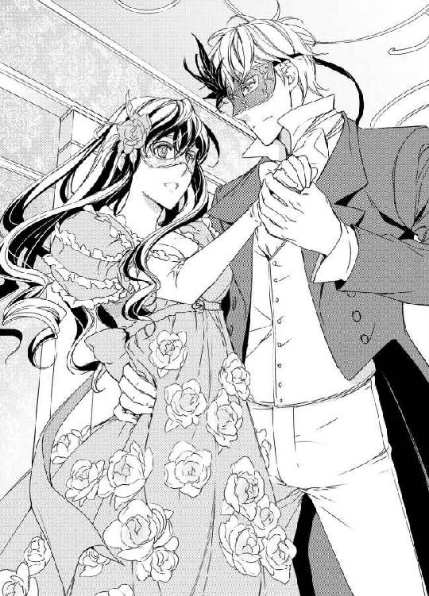
彼の腰にあるサッシュベルトの縁には、彼の紋章である鉤爪の獅子と剣が描かれている。もう疑いようがない。
〝ジョシュア！ あなたね！ あなたなのね？〟
声にならない叫びが、ソフィアの胸の中で響いている。彼の腕に身体を抱き込まれて、ほんの少し目を閉じていただけなのに、いつの間にか広間からバルコニーの柱の陰へと移動していた。
「レディ......」
耳朶の先にキスを感じた途端、ドレスの裾が脚の付け根までたくし上がった。
「ん......ッ......」
キスが唇へと移動してくる。隙間から入り込んだ舌がソフィアの歯列をなぞって、そのまま奥へと入り込み舌を絡めてくる。
あの時と同じだ。ダンスに誘う一連の動作も、キスを盗む時の有無を言わさない大胆さも。
「ぃ、......ン、......」
あっという間にドレスの中に指先が忍んできて、ソフィアの太腿を覆う白い靴下の縁を掌でなぞってくる。
「っひ......っ、ぁ......あっ......」
捏ねるように内腿を撫でる指が、じりじりと脚の付け根を目指している。
歓喜で震えようとする身体を、ソフィアは頭の中で思い切り叱りつけた。
〝いけない！ 彼は私を捨てた男よ。何をうっとりとしてるの？ しっかりして、ソフィア！〟
「レディ、あぁ、なんて柔らかな肌をしているんだろう」
「ぁ......っ......」
〝駄目よ！ 捨てられた事を馬鹿みたいに忘れて、また彼のキスに溺れるつもり？ 愚かな事はやめなさい、ソフィア！ だいたい彼は私に気付いてすらいないのよ！〟
「は、離してください、私は──」
ぐっと腰を腕に抱き込まれた途端に、ジョシュアの長い指がソフィアの蜜に濡れる花房の間に沈み込んだ。
「あんッ！」
それは蛇のように蜜の中を動き回り、拒絶の言葉を吐こうとした唇は熱いキスであっけなく塞がれてしまう。
「ん、......ぅん......っ！」
ソフィアの腰がびくりと跳ね、ハイヒールのつま先が大理石の床を離れた。背中が仰け反り、ドレスの胸は今にも零れ落ちそうに上下している。
「今宵は仮面舞踏会です。一人寝ではあまりにも寂し過ぎる。レディ、よかったら私の部屋にいらっしゃいませんか？」
「ぁん......ッ」
質問をするだけして、ジョシュアはまたソフィアの唇をキスで塞いだ。
「幸いここからそう遠くありませんから。せっかく溢れている蜜をこのままにしておくことは出来ないでしょう？」
そう言った彼は、ソフィアの身体を勢いよく腕に抱え上げた。薄暗い廊下を通り抜けて、広々とした客室に連れ込まれる。
途端に貪るようなキスが唇からデコルテの上を滑って、薔薇色のドレスはあっという間にテーブルの上にあった。ドレスの腰についているブローチがテーブルにぶつかり、ごとりと鈍い音を立てる。
気が付けばもうゆったりとしたベッドの上に寝かされ、裸の胸を緩く捏ねられている。
「あン......ッ！ ジ......」
思わず彼の名前を叫びそうになって、急いで唇をきつく噛んだ。
伸びて来た指が仮面を外そうとするのを、それだけはと首を振って拒否した。
「仰せのままに、美しい人」
そう呟くと同時に、ジョシュアが裸の身体を彼女の上に覆い被せてくる。
逞しい両肩がソフィアの上半身を覆った。仮面越しのキスを繰り返し重ねるうち、彼女の息は甘い吐息に変わっていく。心では拒絶しなければならないとわかっているのに、どうしてもそれが出来ない。
約束を破り、黙って自分を捨てた男なのに。
あんなにもひどい仕打ちをした男なのに、身も心もどうしようもなく敏感に反応する。
「あッ......、ぁあンッ......！ い、......やぁ......」
かろうじて言葉で彼を拒絶するのに、喘ぐ唇はもう彼のキスを求めている。
「僕を拒絶なさるのですか？ もうすっかり睦み合う用意が出来ているのに......？」
腰を滑り下りて来た彼の指が、脚の間に溢れ出た蜜でいやらしい音を聞かせてくる。
「そ、そんなっ......」
軽い笑い声が聞こえた後、うなじにあったキスが胸の先に移った。
「柔らかい......。まるで泡のように唇の中で蕩ける......」
歯で舌で胸の先を愛撫されているうち、いつの間にか閉じていた両の脚が大きく開かされている事に気付く。
「い......ゃ......ッ......」
申し訳程度の拒絶も空しく、キスはみるみる細くくびれた腰へと下がっていく。
彼の手が、ソフィアの両脚を肩の上に掲げた。
彼女の右の太腿を舐め上げていって、舌先が内腿にある薔薇の痣の場所に達する。
〝もしかして、痣を見て私である事に気付くかもしれない。もし、彼が私の事を忘れていないのなら、きっと──〟
そんな淡い期待も空しく、ジョシュアはたっぷりとしたキスを彼女の脚の間に移した。
〝あぁ、やっぱり彼は私の事なんか憶えていないんだわ！〟
彼は、自分の事など憶えてはいない。自分との事など、きっと数多くいる女性達との関係の中に埋もれてしまうほど取るに足らない記憶に違いないのだ。
いくら部屋の中が薄暗いとはいっても、そこにある痣に気付かないはずはなかった。もし本当にソフィアの事を愛していたなら、きっと彼女だと気付くはずだ。だって、自分にはジョシュアである事がわかった。
それは、本当に彼を愛していたから──。
亡き父が言ったとおり、やはりジョシュアはとんでもない放蕩者に違いなかった。
だからこそ、こんな風に見ず知らずの女の太腿をこうも淫らに愛撫したりするのだ。
かつて父は言った。
『彼はあちこちの婦人を誘惑している。自分が気に入れば誰でも......たとえ誰かと結婚していようといまいと。そして、その女性がどんないかがわしい職業についていようと』
そして、彼の帰国以後たまに聞こえてくる彼の噂も、決して貞節なものとは言い難いものばかりだった。
『漁色家』──それがジョシュアについた新しい呼び名だ。
今彼がソフィアにしているような事を、彼はあちこちの女性達にもしている。唇だけではなく、脚の間にキスをし、自分の身体の下で彼女等が声を上げるのを見て彼は何を思うのだろうか──。
「や......っ、そんな事、なさらないでっ......、あぁ......！」
そうとわかっているのに、身体はソフィアを裏切り続ける。昔そうだったように、彼に触れられただけで身体がひりひりと熱く痺れてくる。
「申し訳ありませんが、こんな美しい花を前にして、何もしないではいられません」
ぐっと膝裏を押し上げられ、蜜にまみれた花房が蝋燭の灯りの中にすっかり露わになる。
「とても綺麗ですよ。あぁ、もうこんなに蜜を溢れさせて」
「ひ、アッ......！」
つぷりと深く彼の舌先が蜜孔の中に入った。いやらしく蠢いて蜜を貪り、更に奥へと舌を進めていく。
「あ、あんっ......、あ、う......」
つま先がきつく内巻き、抱えられた腰がはしたなくベッドの上を跳ねる。
おもむろに起き上がった彼の身体は、五年前よりもずっと逞しくうっとりするほど魅惑的だ。
固く引き締まった肩が隆起し、しなやかに割れた腹筋がソフィアの柔肌にぴったりと重なる。
指先が熱く膨らんだ花の芽を捕らえた。
「あっ！ そこはっ......、ぁンッ......だ、めえッ......、あぁッ！」
軽く押し潰すように捏ねられ、ソフィアは呆気なく小さな絶頂を迎えてしまう。
薄っすらと開けた目蓋の向こうに、仮面をつけた男の満足そうな微笑みが見える。
「気持ちよかったでしょう？ もっと感じさせてあげます。きっとあなたのお気に召すと思いますよ」
淫らなキスを唇に施されて、もう言葉でも嘘は吐けなくなる。軽く導かれて、足首を彼の腰の上で重ね合わせる。
「そう、いい子ですね。早速ご褒美をあげなければ」
「ぁ！ ああんっ......っ！ くぅ......っ......！」
彼の腰がほんの少し下に沈んだ後、凄まじい快楽がソフィアの全身に襲いかかった。
彼のペニスが──固く猛った彼のものが、ソフィアのヴァギナに溶け入る。
すっかり狭くなっているそこをみちみちとこじ開け、蜜窟の中いっぱいに彼の肉欲を納めてくる。
「っひ......ンッ......、ぁ、あああぁ......！」
仮面越しにある二人の瞳が、熱く見つめ合った。また小さく達する。彼に見つめられるだけで、どうしてこんなにも身体の奥が啼きだしてしまうの──。
「アッ......、あっ......、ぅ、うンッ......！」
「なんて可愛く啼くレディだ。もっともっと啼かせたくなる」
「ン、ァああンッ！」
深く入り込んだ昂ぶりを蜜窟の途中まで引き抜かれて、また奥まで突き戻され緩く腰を振られる。
「ひ、あ......ぁ......！」
身体の奥で新たに蜜が溢れ出すのがわかった。彼の腰に絡む脚がぶるぶると震えて、唇の端からは細く唾液が筋を作る。
ソフィアの淫襞の中にある悦楽の膨らみ。五年前、ジョシュアが見つけてくれたそこをまた執拗に攻められている。滑らかでくっきりとした彼のくびれが、そこをコリコリと引っ掻いてくる。
「ぁ、ああぁッ！ あンッ！ あぁンッ......！」
ソフィアの瞳から快楽の涙が溢れ出した。
今感じている彼からの刺激が、ソフィアの中に眠っていた過去の享楽を全て呼び覚ました。ジョシュアが去ってからというもの、修道女のように慎ましく暮らしていたのに。性的な感情を封印して、ノーマンと婚約していた時ですらそれを解かなかったというのに。
「っく......ぅ......」
目蓋をぎゅっと閉じると、涙がぽろぽろとこめかみを伝っては波打つ髪を濡らしていく。
〝なぜこんな事が？ どうして今更私の前に現れたの？ せっかく忘れる事が出来たと思っていたのに......こんな事って──〟
心と身体がばらばらになりそう。いっそ彼を憎んでしまいたかったのに、どうしてもそれが出来ずにいたのは、まだこんなにも彼を愛しているからに他ならなかった。
「なぜ声を堪えるんです？ 遠慮なく叫んだらいい。今夜はどの部屋でも同じような事が行われているんですから」
太く固い茎幹を蜜孔に差し込まれたまま、ソフィアの身体がぐるりと反転した。
その身体ごとねじられるような刺激に耐えられずに、思わず叫び声を上げてしまう。
「ぁっ、ああンッ！」
背後から腰を抱え込まれて、四つん這いの格好になる。指先で軽く乳首を弄られると、それだけで背中がきゅっと仰け反ってしまった。
うずくまろうとするソフィアの腰を引き寄せた彼は、緩く突いていた腰を徐々に強く動かし始める。
「獣のようにあなたを抱いて差し上げましょう。お望みなら、襲うように激しく」
「あぁッ！」
腕の力が抜けて、腰だけを突き出した姿勢になる。すごく淫らな恰好をしているのがわかって、ソフィアは恥ずかしさのあまり掌に握りしめたシーツの端を噛んだ。
身に着けているのは豪奢な仮面ただ一つだけ。飴色の灯りの中で白く浮かぶ身体が、しなやかで美しい淫獣に蹂躙され、いやらしく蜜を滴らせている。
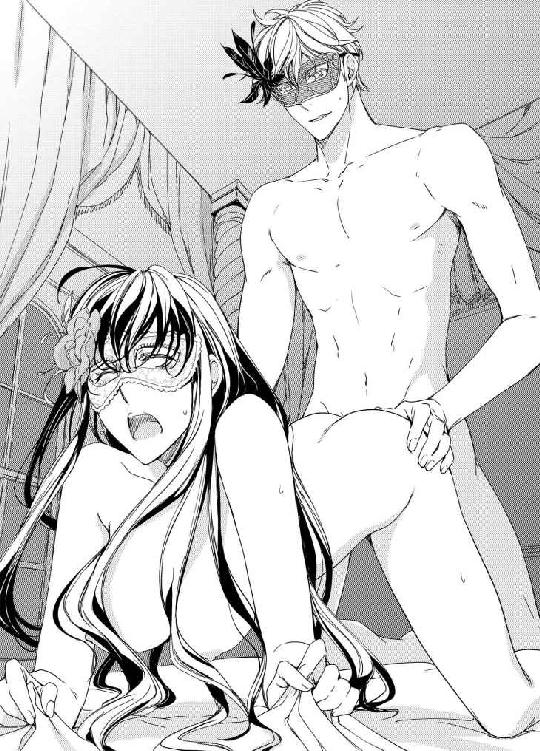
目を閉じていてもわかる、憶えている──彼の肩幅の広さ、胸の厚み、扇情的な腰の筋肉。
何もかも素敵だった。心から愛していた。
「ん......ぁんッ......、ぁ......はぁ......」
身体は彼を受け入れても、心だけはそうさせまいと思っていたのに、もう無理──、抗えない。
「あ、あ......、もっ......」
「今、なんておっしゃいました？ ......もっと、かな？」
ぐっと奥まで腰を入れられ、蜜孔の奥が悦びに震えた。
今夜は仮面舞踏会だ。今夜だけは何もかも忘れよう。
何も考えずに、今感じている熱に身を任せてしまおう。
愉悦のせいで朦朧とした思考の中で、ソフィアはそう決心した。
くずおれていた上半身をもたげて、腰を思い切り低くしてお尻を突きだす。そうすれば、もっと彼を感じられる。もっと、深く強く。少しでも彼の多くを。
「お......お願い......、もっと......」
「仰せのとおりに。レディ」
「あぁンッ！ あンッ......！ ぁあ、あ......」
浅く深くリズミカルな抽送に酔いしれ、ソフィアは溢れ出る涙をそのままに嬌声を上げ続ける。
身をよじり、振り向いてキスをねだる。
仮面の男の熱い舌と固く反り返る茎幹に身を貫かれて、ソフィアは繰り返し絶頂を迎え、意識が続く限り彼の腕の中で悦楽に浸った。
※ ※ ※
シーズンの締めくくりでもあったカーマイン邸での舞踏会から、もう今日で八日になる。
議会も無事終わりを迎えて、ミルフォード家はロンドンのタウンハウスを引き払い既にレスターシャーにあるカントリーハウスに戻っている。
今日は天気がいい事もあって、庭に敷物を敷いてエレナを交えアンと三人で刺繍をしていた。
田舎の事で前を通る道にはめったに人影を見る事はない。
ミルフォード家の次女エレナは、姉のアンが言うように手のかかるおてんば娘だ。結構な野生児で、目を離せばマナーなどそっちのけの振る舞いを平気でやってのける。
丸い大きな目に赤い唇。くるくると巻いた亜麻色の髪は、愛らしく彼女の肩を飾っている。アンがソフィアを親友と思うように、エレナはソフィアの事を本当の姉のように慕っていた。
そういった事情もあり、ここミルフォード家でのソフィアは、使用人というよりも親しい親戚といった扱いを受け、日々暮らしている。
「ソフィア、どうしたの？ ぼんやりして」
庭の東側にある花園には様々な色の薔薇が咲き誇って、午後の庭に芳しい香りを漂わせている。
アンの声にはっとして手元を見ると、さっきから針が全く進んでいないことに気付いた。
「えっ？ あ、あぁ、何でもないの」
「あら、その割には大きな目を開いたままでじっと一点を見つめてたけど？ しかも、何度も切なそうにため息をついて。ソフィアったら、カーマイン公爵の舞踏会から帰ってからずっとそんな状態よね？ ねぇ、白状して。あそこで何かあったんじゃないの？」
声を潜めてそう言ったアンの横では、エレナがくったりと横たわって居眠りをしている。
「何かって？」
首を捻りしらばっくれても、アンはまだ好奇心いっぱいの目つきでソフィアを見つめている。
まるで何事もなかったように過ぎて行く日々の中、ソフィアはあの日自分に起きた出来事がすべて夢だったのではないかと思い始めていた。
身体に残る熱はそれをはっきりと否定しているけど、夢だと思った方がこれから長く続いていく日常を穏やかに過ごす事が出来る。
カーマイン邸で行われた仮面舞踏会の次の日の朝──。
ソフィアは、まだ夜が明けないうちにベッドを抜け出し、自分達の部屋に帰りついた。
前夜、黒紫羽の仮面をつけた彼と繰り返し身体を交わらせて、幾度となく絶頂を味わった事は憶えている。
そして、気が付けば隣には裸の彼が寝乱れた姿で横たわっており、健やかな寝息をたてていた。
その顔の上には、まだ仮面がつけられたまま。
一目彼の素顔を目にしたい。もう一度間近でジョシュアの顔を見つめたい。
そんな欲求を無理矢理押し留めて、ソフィアは急いで身支度をして部屋を出ようとした。だけど、どうしても我慢できずに眠っている彼にそっと唇を寄せた。
もうこれが彼との最後だ。思いがけず再会してこんな事になってしまったけど、もう二度とこんな事は起きない。たった一度きりの運命のいたずら。
しばらくの間彼の唇の温かさを感じた後、ソフィアは薄暗い中、誰にも気づかれないまま自分達の部屋に戻った。そして、何事もなかったように朝方こっそりと帰ってきたアンを迎えたのだ。
「何もないわよ。それより、ロバートとはどうだったの？ まだ詳しくは話してくれてなかったでしょう？」
上手く話題を逸らすと、アンは嬉しそうにその晩の事を話しだした。桜色に頬を染めるアンを見ると、この恋が上手くいく事を心から神に願いたくなる。
本当に愛し合っている二人だと知っているし、その事実さえあれば他に何も問題になる事なんてないのに。
愛し合う二人にとって外見なんてどれほどの意味があるだろうか。
完全無欠の花婿がいたとしても、愛がなければ幸せな結婚生活を送ることが出来ないのではないだろうか。
願わくは、彼らの結婚に異を唱える人達がそれに気づいて、二人を許し幸せな結婚式を挙げる日がくればいいのに。
「あら？ 誰か来るわ。今日はそんな予定あったかしら？」
アンが立ち上がった拍子に、眠っていたエレナがむにゃむにゃと起き上がった。
「ん......？ なぁに？ ......馬車が来たの？ 私を迎えに？ ええ、わかってたわ。白馬に乗った王子様が、私を迎えに来てくれたのね」
何か幸せな夢を見ていたらしいエレナが、大きくあくびをする。
「どなたかしら？ 王子様じゃないにしろ、すごく立派な馬車だわ。ほら見て、二頭とも素敵な白馬よ！」
徐々に近づいてくる馬車を操っているのは、どうやら王子様本人みたいだ。遠目だからよくわからないけど、金色の髪が風になびき、白いコートの裾が優雅にはためいている。
馬番が走り出て彼をソフィア達とは反対側の庭に導いていく。その間に片付けを終えた彼女達は、王子様が玄関に到着する前に急いでテラスから邸宅の中へと入った。
「よく見えなかったけど、今までお目にかかった事のない方じゃなかった？」
アンが言うと、エレナはまだ眠そうな顔をして口を挟んでくる。
「王子様よ......。私を迎えに来てくれたんだわ。金髪に白い馬よ。そうに決まってるでしょ」
「そうなの？ あなたいつの間にそんな人を掴まえたの、エレナ」
軽口を叩きながら身支度を整える姉妹の後ろで、ソフィアはやりかけの刺繍道具一式をバスケットの中にしまっている。
〝あら、青の糸がないわ。庭に落としてきたのかしら......〟
テラスに出てもう一度さっきいた場所まで戻ってみる。辺りをきょろきょろと見回していると、邸宅の居間からミルフォード夫人の甲高い声が聞こえてきた。
「エレナ、お父様が帰っていらっしゃるまでお部屋でピアノの練習をなさいな。お客様とは、また後でお話ができるから」
エレナの不満そうな声が廊下の向こうで響いた。
「ロレッタ、お客様のお茶を用意してちょうだい。それと、今朝取れたイチゴも」
ミルフォード夫人の声が明らかにワンオクターブほど高い。
〝よっぽどご機嫌なんだわ。もしかして、本当に王子様がやってきたのかしら〟
それにしても、いったい誰だろう？ 王子様でないにしろ相当身分の高い様子だったし、夫人の華やいだ声の調子からして、彼が歓迎されている事は間違いなかった。
日頃から、娘達に最高の伴侶を見つける事に心血を注いでいる夫人だ。もしかすると、未来の花婿候補がやってきたのかもしれない。
どのみち、自分にはもう縁のないお話。恋愛や結婚などという華やかな行事は、祝いこそすれ祝われる事はないものと諦めている。
「あ、見つけた！」
目当ての青い糸は、さっきいたところから少し先の草陰に転がっていた。それを拾い上げて、何気なく居間の方を眺めてみる。残念ながら王子様は見えないけど、ミルフォード夫人がソファに座りながら何か大袈裟に驚いているのが見える。
邸宅右側にある窓から、調子っぱずれのピアノの音が聞こえてきた。
「早くエレナのところに行ってあげなくちゃ」
テラスに戻り、居間の前の廊下を軽いお辞儀と共に通り過ぎようとするソフィアを、ミルフォード夫人の嬉しそうな声が追いかけてくる。
「あら、ソフィア。あなたもお茶をいかが？ 思いがけないお客様がいらしたのよ。ほら、先日行ったカーマイン公爵の舞踏会にも出席されていたお方よ」
夫人に呼び止められ、ソフィアは膝を曲げお辞儀をして居間の中に入った。
部屋の真ん中にあるテーブルの前には、夫人とアン、そしてさっき遠目で見た金髪の王子様が──。
「やぁ、ソフィアじゃないか！ 驚いたな。こんなところで君に会えるなんて！」
背中を向けていた金髪の王子が、ソフィアの方を見て驚きの表情を浮かべる。
「ジョシュア・スペンサー......！ あなた、どうしてここに......」
微笑んだ顔で彼女を見るジョシュアは、優雅に手を差し伸べてソフィアをお茶の席に誘った。
〝なぜ？ どうして彼がここにいるの？ 社交界に出ない限り、もう二度と会う事はないと思っていたのに......！〟
頭が混乱する。だけど、今ここでとり乱すわけにはいかなかった。よろけそうになる足をぐっと踏みしめ、唇が震えだす前に微笑んだ顔でお茶の席に着いた。
「ええ、ジョシュア、お久しぶりね。あなたも舞踏会にいらしてたのね。お元気そうでなによりだわ」
二人の会話を聞き、ミルフォード夫人が驚いたように両手の指を胸の前で組み合わせた。
「あら、ロード・スペンサー！ ソフィアをご存知でしたの？」
「ええ、もう五年も前になりますが、一度知り合いに誘われて行った舞踏会でお会いした事があって。残念ながら、それ以来ずっとお会いする機会がないままでしたが」
「まぁまぁ！ それはそれは！ さすがユヴェール侯爵様ともなるとお顔が広くていらっしゃいますのね」
侯爵家に生まれたとはいえ、次男であるジョシュアは父であるユヴェール卿の爵位も財産も受け継ぐ権利がなかった。だが、父も兄も亡き今、彼がすべてを受け継ぎユヴェール侯爵を名乗っているのだ。
いくら社交界から遠ざかっているといえど、それくらいの情報はいくらでも耳に入ってくる。
それにしても、彼がここに来た理由はなんだろう？ ソフィアがそう思っていた矢先に、夫人が不可思議な事を話しだした。
「では、よっぽどロード・スペンサーは舞踏会に縁がおありなのね。そして、ここに導かれていらしたのね。あぁ、まるでおとぎ話のような......いえ、天の思し召しに違いありませんわ」
歌うようにそう言ったミルフォード夫人は、さっきから黙りこくっているアンに振り返り、訝しげな表情を浮かべた。
「本当にもう、どうかしたの、アン？ やけに大人しいのね」
「えっ？ あ、いえ......」
ちらっとソフィアを盗み見たアンは、問いかけるような視線を彼女の方に送ってきた。
〝えっ？ 何？〟
逆に問い返すような視線をアンに返していると、夫人がまた嬉々として喋りだした。
「あら、ソフィアはまだ彼がここにいらした理由を聞いていなかったわね。ロード・スペンサー、私が代わりに説明させていただいてもよろしいかしら？」
愛想よく笑うミルフォード夫人は、いつにも増して溌剌としている。
「ええ、構いません。僕が話すよりも、もっとわかりやすく簡潔に説明していただけるでしょうから」
ソファに座ったまま軽く頭を下げたジョシュアは、顔を上げる前にちらりとソフィアの方に視線を寄越した。彼の事をじっと見ていた事を知られたくないソフィアは、慌てて視線をあらぬ方に逸らした。
それぞれの視線が交差しては離れ、また重なる。
忙しくそこにいる全員に視線を走らせていたミルフォード夫人は、ソフィアの前に立ってポンと手を打ち、にっこりと微笑んで見せた。
「ロード・スペンサーは、先日行われたカーマイン邸での舞踏会に遅れて参加されたの。半年前に軍を退役されたばかりだし、なんといってもご家族を亡くされて間もないんですもの。そして、当日急遽開催された仮面舞踏会に顔を出された......もちろん、仮面をつけて、だけれど？」
夫人の冗談っぽい言い回しに、その場にいた全員が声を出して笑った。ただし、ソフィアとアンだけは微妙に表情が強ばっている。
「そこで出会われたのよ。薔薇色のドレスを着た美しいレディに。あら、これはロード・スペンサーがおっしゃった事をそのまま言ったまでよ。そして、まるで薔薇の精のような彼女に、すっかり心を奪われてしまったっておっしゃるのよ！」
ミルフォード夫人の言葉は、ソフィアを激しく驚かせた。
隣の椅子に座っているアンを見ると、彼女は訳が分からないといった風に左眉をほんの少しつり上げて見せる。ジョシュアの方に視線を流すと、彼は素知らぬ顔で口元に笑みを浮かべ夫人の話に聞き入っている様子だ。
「そのレディとワルツを踊って、しばらく親しくお話をされたそうよ。でも、あまりにも胸が高鳴ってつい名乗りそびれて。次の日、ロード・スペンサーは夜明けと共に出発しなければならなくて、それきり薔薇のレディの事を確かめることが出来ないままカーマイン邸を後にされたの」
芝居がかった夫人の独白に、またソフィアとアンの視線が忙しく動き回った。
夫人の話を聞くソフィアの頭の中は、とんでもなく混乱している。
「そしてね、ここからが驚きなの！ 自宅に帰られたロード・スペンサーは、物思いに耽りながら仮面舞踏会の夜に締めていたサッシュベルトをトランクからお出しになったの。すると、そこに何か重いものがぶら下がっている事に──レディが身に着けていた薔薇のブローチが引っかかっている事にお気づきになったの！」
それを聞いたソフィアは、はっとして指先で口元を隠した。
薔薇のブローチは、あの晩ドレスの腰を絞るためにアンが貸してくれたものだ。
〝もしや踊っている時に外れてしまったのかしら？ いいえ、違うわ......。あの夜、ドレスを脱がされた時には腰についていたもの。あぁ、私ったらブローチを彼の部屋に忘れて来てしまったんだわ。いくら急いでいたからって、大切な預かり物を失くした事に気付かないなんて！〟
「あらあら、ソフィアったらそんなに驚いた顔をして」
まるで素晴らしい恋愛劇でもプロデュースしているような目つきで、ミルフォード夫人はジョシュアとアンを交互に見て満足げに頷く。
「そのブローチには、ミルフォード家の紋章がついていたの。ロード・スペンサーは親切にもそれをここに届けに来てくださったのよ。そうでしたね、ロード──」
「ジョシュアと呼んでください。皆さんも、もしよろしければ」
「まぁ、ではお言葉に甘えて......そしてジョシュアは──」
彼の名を口にしたミルフォード夫人は、にっこりと微笑んでアンの方を振り返った。
「薔薇色のドレスを着たレディに恋をしている事に気付かれたんですって！ あぁ！」
夫人の感嘆の声が部屋に響いている中、ソフィアは事の顛末を知って完全に言葉を失ってしまった。
〝なんて事なの......！〟
話し終えたミルフォード夫人は、ゆったりとくつろいでいる風のジョシュアを見て何度も頷いて見せる。
「あら、いやだわ。私ったら一人でおしゃべりして。お茶のおかわりはいかがですか？ もうじき主人も帰ってまいりますし、今夜はゆっくりなさって。よろしければディナーをいただきながら外国のお話を聞かせてくださいませ。......あら、なんてタイミングがいいんでしょう！ あれは主人を乗せた馬車の音だわ」
それから再度夫人による一人恋愛劇が繰り広げられて、その夜カーマイン邸にいた当事者の三人は終始大人しく聞き役に徹していた。
「ジョシュア、せっかくいらしたんですもの。ディナーだけと言わず、今夜は是非お泊りになってくださいな」
「そうだ、明日はキツネ狩りに行く予定なのですが、是非ご一緒にいかがですかな？ この先にある森は格好の猟場になっているのですよ」
夫妻にがっちりと脇を固められて、ジョシュアは明日の狩りへの参加も含めて少なくとも後二日間はミルフォード邸に滞在することが決まった。
その後、男性二人が明日の打ち合わせのために書斎へと引っ込んでしまった時には、もう高かった日もだいぶ西の空に傾いてきていた。
二人を見送ったミルフォード夫人は、満面の笑みを湛えながらソフィアとアンを伴って長椅子に腰をかけた。
「ジョシュアはとてもハンサムで魅力的な方だわ。なんと言っても、スペンサー家の財産を全て受け継いだ侯爵様ですもの。さぁ、アン。彼と出会った時の事をすっかり話してちょうだい」
期待に顔を輝かせた夫人を前に、二人は揃って困惑の表情を浮かべた。
「え......っと、どうだったかしら......何せあの時は周りがとても薄暗くて......」
本当なら、薔薇色のドレスを着たレディは自分ではなくソフィアだと言ってしまえば済む話だった。だけど、それを言えばあれこれと聞かれたくない事まで話さなければならなくなる。
口を開けば、その分嘘がばれる確率が高くなってしまう。
しどろもどろになるアンを助けて、ソフィアは夫人の気が逸れそうな話題を思い出した。
「そうだわ。ジョシュアは以前、シェリー酒を使ったトライフルが好物だと言ってましたわ。それを今夜のデザートにお出ししてはどうでしょう？」
ソフィアの助け舟は、ミルフォード夫人の興味を逸らす抜群の効力があった。
「まあ、そうなの？ ちょうど美味しいシェリーがあるし、さっそくロレッタに言って用意させましょう！」
メイド長のところに飛んでいった夫人を見送った二人は、早々に客間から逃げ出してアンの部屋にあるソファの上に腰を下ろした。混乱する頭を抱えながら、ソフィアはアンの手を取ってすまなさそうに口を開いた。
「ごめんなさい、アン。私ったら貸してもらったブローチを失くして、その事に気付かずにいたのよ」
「いいの！ そんなのぜんぜん構わないわ。それはそうといったいぜんたい何がどうしたっていうの？ お母様はすっかり物語をでっち上げて夢心地になっているし、お父様までそれに巻き込まれてなんだか有頂天よ。まるでわけが分からない！ ねぇソフィア！」
顔中から好奇心を溢れさせたアンは、ソフィアの腕を掴んで軽く揺すった。
「正直に言って。仮面舞踏会の夜に、彼と踊ったのね？ でもきっとそれだけじゃないわね？ 彼とあなたの間に何があったの？」
いきなり覗き込むように顔を近づけられ、ソフィアは座ったままたじたじと後退った。
「それは......」
何があったかは自分の事だから充分わかっている。だけど、それが今の状況とどう繋がっているのかがまるで把握出来ていない。
「だって、さっき部屋に入って来て彼を見た時のあなたときたら！ まるで目の前に大天使ミカエルが降臨したってくらい驚いた顔をしてたわ。お母様は見逃したみたいだけど、私は見逃さなかった。ねぇ、彼っておそろしく魅力的な人よね。以前からの知り合いだって言ってたけど、いつから？ 彼とはどれくらい親しかったの？」
「えっと......アン、それを全部話すとなるととても長くなるわ。多分、ディナーの時間になっても終わらないほどには」
心底困ったような表情を浮かべるソフィアを、アンはまじまじと見つめ首を捻った。
「うーん、じゃあそれについてはまた今度詳しく聞くとして......どうもおかしいわね。あなたとジョシュア、サッシュベルトとブローチ。仮面舞踏会の夜と薔薇色のドレス......。そして二人の間にあるただならぬ雰囲気......ソフィア、あなたあの夜彼と寝たわね？」
「ア、アンったら！ そんなはしたない言い方......！」
ずばりと言い当てられ、ソフィアはそれ以上何も言えず真っ赤になる。
「やっぱり！ ソフィアったら、素敵じゃない！ いつも胸元を隠したドレスを着ているあなたがそんな情熱的な夜を過ごしただなんて！ いったいいつからそんな関係なの？ あれ、でも長く会わなかったって言ったわよね。あなた達ってなんだか謎めいているのね！」
目を輝かせて迫るアンに降参して、ソフィアは仮面舞踏会の夜の事を正直に話して聞かせた。
声をかけられたところから、夜明け前彼の隣から逃げ出すまでのすべてを。
「薔薇のブローチは、きっとドレスを脱がされた時に外れちゃったんだと思うわ。次の朝、彼が起きてしまう前に部屋を出ようとしていたから、慌てていてブローチの事まで気が回らなかったの」
「なるほどね。そして彼はここに来たのね。あなたを求めて、こんな田舎町までやって来たのよ！ あぁ、こんな事ってあるのね！ なんてロマンティックなんでしょう！」
母親譲りの大袈裟な身振りで、アンは両手を組み合わせて天に祈る仕草をした。
「だけど、彼はなぜ自分が追って来たのはソフィアだって言わないのかしら？」
アンは、眉間に皺を寄せて首を捻る。
「ちょっと待ってアン。あの夜、私は仮面をつけたままでいたのよ。彼だってそう。私達は、お互いに顔を見せないまま抱き合ったの......。だけど、さっき言ったように私はすぐに彼だと気が付いたわ。でも彼はまるで私だと気付いてないのよ。それについては──」
そこまで話した時、部屋の外から二人を呼ぶミルフォード夫人の声が聞こえた。トライフルの作り方がどうとか、ごちゃごちゃと喋っている。どうやらロレッタは詳しいレシピを持っていないらしい。
「とりあえず、ここ何日か彼はここに滞在するのよ。その間に、謎解きをしましょう。きっと素敵な事が起きそうな気がする、そう思わない？ ソフィア」
「さぁ......、私にはわからないわ」
アンと連れだって歩きながら、ソフィアは客間で彼女を見たジョシュアの事を考えていた。
〝さっき私を見た時、ジョシュアはそんなには驚いた風じゃなかった〟
彼はソフィアを目にした時、ぱっと顔を輝かせたもののまるで彼女がここにいる事を知っているかのようだった。
〝私がここにいる事を知っていたの？ だとしたら、なぜそうと知って......？〟
いくら考えてもわかりそうもない。自分なりの謎解きを諦めたソフィアは、途中でアンと別れてミルフォード夫人とロレッタが待つ厨房に足を進めた。
※ ※ ※
その夜ミルフォード夫妻から最大級のもてなしを受けたジョシュアは、海軍で経験した様々な事をおもしろおかしく話し、ディナーの席を盛り上げた。
「船に長く乗っていると、美味しいワインと紅茶が恋しくなります。今はだいぶ改善されましたが、艦内で支給される食べ物のひどさはここにいるご婦人方を卒倒させるレベルのものですから」
食後に発せられた彼の言葉は、ミルフォード卿の男気をいたく刺激し、領内で作られているワインの一部を海軍に無償提供する約束に繋がったりもした。
「あなたは話術にも社交術にも長けておられる。実に気持ちがいい。今は旅行中で不在だが、うちの息子とも是非仲よくしていただきたいものだ。もちろん、本来の目的であるレディ優先で構いませんから」
お酒も入り、更に機嫌がよくなっているミルフォード卿は、そんな事をいいながらアンの方に意味ありげな視線を投げかけている。
「突然訪ねてきた僕をこんなにも歓待していただいて痛み入ります。ここに住む方々は皆心が広い大らかな方ばかりですね」
ミルフォード夫妻はとても気合が入っているようだ。いつも以上に紳士的な態度に、淑女として相応しい振る舞いの数々。並べられる皿はどれも普段より豪華で手が込んだものばかり。
夜が更ける頃にはもうすっかり打ち解けた様子の男二人は、デザートのシェリー酒入りトライフルを堪能した後、煙草とワインを楽しむために再び書斎に向かった。
長かったディナーが終わると、ミルフォード夫人は明日の朝食についてメイドに事細かい指示を出し始める。その隙をついて食堂を抜け出したソフィアとアンは、事前の打ち合わせ通りそれぞれの部屋に入って寝たふりを決め込んでしまった。
そうでなければ、ミルフォード夫人からまた質問攻めにあってしまうからだ。
「ふぅ......。なんて日なの......。まさか彼とこんなところで顔を合わせる事になるだなんて......」
部屋に入った途端椅子にへたり込んだソフィアは、着ていた飴色のドレスを脱いで椅子の背もたれにかけた。白く薄い夜着に着替えた後、しばらくの間ぼんやりと窓の外を眺めていた。そして、深い溜息をついたかと思えば急に立ち上がってそわそわと部屋の中を歩き回った。
同じ建物の中にジョシュアがいると思うと、どうにも落ち着かない。仮面舞踏会の夜の事を思い出して、やたらと動悸が激しくなる。
「ジョシュア......」
美しい月を眺めながら、唇の先でそっと呟いてみる。
と、その時、部屋のドアを軽くノックする音が聞こえてきた。
「誰......？ アンなの？」
何か今後の事で話があるのかもしれない。そう思ったソフィアは、肩から落ちたショールをそのままに、急いで窓を離れ部屋のドアを開けた。
「ぁ......ッ......！」
いきなり力強い腕に抱きすくめられ、唇に熱いキスを感じた。
「っ......ジョシュアッ......？ ん......ッ......！」
ドアが後ろ手に閉められ、そのまま抱えられるようにして部屋の奥にあるベッドまで連れて行かれた。
「ジョシュア......、やめてっ......、何をするの！」
「しいっ......」
ソフィア共々ベッドの上に倒れ込んだジョシュアは、布越しに彼女の身体に掌を這わせた。
唇が、今にも触れ合いそうな距離に近づいてきている。
「お願いだから、静かに......」
広い邸宅の中といえども、大声を出せば誰かに聞き咎められるかもしれない。
だけど、いったい何がどうしてこんな事に？ そう思いながらも声を出せずにいる彼女の唇に、ジョシュアのキスが甘く溶け入ってくる。
「......ンッ......、ぅ......んっ......」
逃げ出そうとするのに、彼の身体がのしかかっているせいで身動きが取れない。
「ジョシュア......、ぁ......ッ......んッ......」
「ソフィア......、僕を忘れていなかったんだな......。この五年、どんなに君に焦がれていた事か......！」
「っん......ん、ぅ......」
夜着の裾が大きくはだけて、露わになった太腿の上をジョシュアの掌が滑った。短めのドロワースを躊躇なく剥ぎ取り、自身が身に着けていたガウンの前をはだける。
「ジョシュ......、ぁ......っ......」
「君の匂い、君の肌、君の唇......、ここへ来てからずっと君を盗み見ていた。早く君と二人きりになりたくって、気が狂いそうになってた」
夜着の上から乳房をまさぐっていたジョシュアは、我慢できないとばかりにソフィアが身に着けているものすべてを彼女の身体から引き剥がした。硬い掌が零れ出た乳房を覆って、その柔らかさを確かめるように揉み込んでくる。
「ソフィア......、ソフィア......」
耳元で名前を呼ばれる度、身体がとろとろに溶け出しそうになる。
「まっ......待って、ジョシュア......っ......、ぁ......ッ......」
指先で摘ままれた乳首が、みるみる固くしこってくる。叫びそうになる唇を手の甲で押えるのに、唇の端から熱い吐息が零れてしまっている。
いけない。こんな事は、仮面舞踏会の夜で最後だったはずだ。
そう思っているのに、身体の奥からまた熱い蜜が溢れ出てくるのを感じている。
「ねぇ、どうして？ なぜあなたはここに来たの？ なぜまた......わからないわ......ジョシュア。あの夜、薔薇色のドレスを着たレディは......」
「君だったんだろう、ソフィア？ 僕にはちゃんとわかっていた。君があの広間の壁際に佇んでいた時から。立ち姿を見ただけで君だとわかった。心底驚いてしばらくの間動けずにいたよ。君は相変わらず綺麗で......何人かの男から声をかけられているのを見て、我慢ならなかった──」
仰向けているソフィアの身体がビクリと跳ねた。左胸の先をクニクニと捏ねられながら、右の胸を執拗に吸われている。ツンと尖った乳首と、それに続く柔らかな乳輪。それを同時に舌と唇で攻め立てられ、ソフィアは小さく叫び声を上げてしまう。
「だから君をワルツに誘った。そしてキスを盗んで、ベッドに引きずり込んだ。僕は君に会うためにここに来たんだ」
「ぁ、うンっ......！」
ジョシュアの真っ白な歯列が、ピンク色の乳首を甘噛みする。
「じゃあ、どうしてここに来た時、その事を言わなかったの？ そのせいでミルフォード夫人は──」
「それについては、本当に不可抗力だった。僕はここに来るまで君の現状を知らなかったし、君もアンもミルフォード夫人の思い違いを正さなかっただろう？ だから、きっとこれについては黙っていた方がいいと思ったんだよ。そうじゃなかった？」
「そうね、確かにそうだったわ」
彼が黙っていたのは、そんな理由があっての事だったとは。それと知らず、ずいぶんと不毛な謎解きをしてしまったものだ。
「相変わらず綺麗な胸をしているんだね。昼間のドレスは君の胸元をすっかりぺちゃんこに見せていたね。そうじゃなきゃ、通りすがる男が皆君の胸に心を奪われてしまうからかな？」
「ぁンッ......！」
その通りだった。ソフィア自身にそのつもりはないのに、彼女の胸の豊かさはそのままだとどうしても男性の目を引いてしまう。だからいつもなるべく胸を目立たせない服を着ているのだ。
家庭教師になった今は尚更の事、今の自分には男性の目線など必要ないと思ったから。
「憶えてるかい？ 君はこうして胸の先を交互に吸って貰うのが好きだったろ？ まるでいたずらな赤ん坊みたいに、乳房を揉みながら両方の乳首をちゅくちゅくって──うん？」
紳士らしからぬ卑猥な言い回しに、ソフィアの耳の端が赤く火照った。
言葉通りの事を彼女の胸に施したジョシュアは、唇の中で固くなっている尖りを舌で繰り返し弾いてくる。
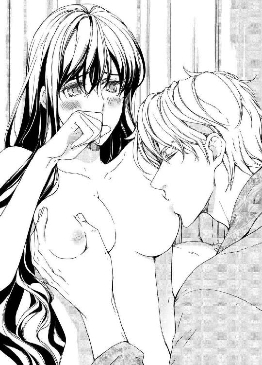
「......ぃやぁ......ッ......、ジョ......シュアッ......、駄目......ッ」
「なぜ？ こんなに感じているのに。幸いさっきから雨が降りだした。まさに天の恵みだ。これで君が可愛い声を出しても雨音に消えてしまう」
窓の外にあった月はいつの間にか厚い雲に覆われ、微かに聞こえていた雨音は徐々に窓を叩く程強いものに変わっている。
「君は僕が知る中で一番美しい女性だ......。あぁ、ソフィア......君には聞きたい事がたくさんある......。だけど、せっかくこうしてまた抱き合えているんだ。今夜は思い切り感じさせてあげるよ。仮面舞踏会の夜よりも、もっと深く君を貪ってあげる──」
「ふ......、ぅ......っん......」
彼のキスが唇へと戻ってくる。唇の奥に入り込んできた舌が、ソフィアの口の中で自由に動き回る。蕩けるようなキスと指で甘く弾かれる両胸の切っ先。
頭がくらくらする。彼のキスと愛撫に足元をすくわれ、いつの間にか彼がくれる快楽に夢中になってしまっている。
「ひゃんっ......、ジョシュア......！ ぁあッ......！ あンッ、あぁんッ......、あッ、あぁ......！」
「なんて声で啼くんだ......。そんな声を聞かされると、まともじゃいられなくなる──」
執拗に乳房を攻められ、快楽のあまり全身がびくびくと震える。
「相変わらずとても感じやすいんだな......。ほら、ここを弄られるのも好きだったね？」
彼の指がソフィアの脚の間をまさぐり、ぷっくりと膨らんだ秘芽を指の腹でこりこりとなぶり始める。
「ひっ、っあンッ！ あッ、あぁん......ッ！」
「ほら、気持ちいいんだろう？ とてもいやらしいよ......。いつの間にこんなに妖艶になったんだ？ ソフィア」
「ぃ......やぁ......ッ」
つま先がきゅっと内巻き、ふくらはぎがビクビクと痙攣する。目の前がパッと明るくなり、次の瞬間、一気に脱力する。その熱波が通り過ぎる最中にきつく胸に抱かれて、唇に舌を差し込まれた。
「ん、っんッ......、ん......」
蜜孔に入り込んだ指が淫襞をめくるように愛撫してくる。あまりの気持ちよさにソフィアは半分泣きそうになりながら腰をひねり身体を丸めるのに、ジョシュアは一向に彼女を離そうとしない。
「ジョシュア......、やめ......っ......」
「駄目だよ、ソフィア、もっと感じるんだ」
彼の指が、蜜壁の上をヌプヌプと這うように蠢きだす。
仮面舞踏会の時は慇懃な紳士だったジョシュアが、今夜はうってかわって粗野で淫猥な誘惑者に豹変している。
「お願い......ジョシュア、私、......あぁんッ！ だ......ッ、駄目ぇっ......。これ以上、しないでっ......」
言葉とはうらはらに、いつの間にかベッドの上で獣のように抱き合い、愛撫を受けキスを繰り返している。
昔、優しく甘く少しだけ強引だった彼との愛の行為。そこに不躾な荒々しさが加わり、ソフィアを揺さぶり翻弄する。
「それは無理なお願いだよ、ソフィア。あぁ、もう限界だ。我慢できない──」
「ひ、あッ！ ジョ......シュア......ッ！ あ、あぁん、ンッ！」
いきなり両の膝裏を肘の内側に抱え込まれて、熱く猛り立った男根を深々と蜜孔の中へ差し込まれた。
激しく腰を打ちつけられ、一瞬身体がシーツから浮き上がった。きつく突き上げられて揺れる乳房を、彼の掌が鷲掴みにしてくる。
荒々しいというより、粗野で乱暴な抽送と愛撫。まるで、犯されるように抱かれているというのに、蜜は止めどなく溢れてくる。
「仮面舞踏会の夜だけじゃ足らない......。あれだけじゃ満足出来ない。五年だ......！ 五年ぶりに会えたのに、たったあれだけじゃあ、僕は君をまた──」
眉間に深い皺を刻みながら、ジョシュアは激しく腰を揺らめかせた。ぎりぎりまで引き抜いては思う様突き上げ、淫襞の中に隠れている悦楽の膨らみを擦り上げる。
「ジョシュア！ ジョ......、あぁあ......！ あ、あ、......あ......！」
固く勃起した茎幹のくびれが、ソフィアのそこを繰り返し引っ掻く。
「ジョシュ......あ、あ......あっ......！」
意識が朦朧となり始めて、全身にぴりぴりとした火花が散る。
「あ......ぁ......ふ......、ぁあっ......！」
蜜窟の奥が激しく痙攣する。
真っ白な恍惚がソフィアの全身を捕らえて、ソフィアは叫び声を上げて快楽の中に意識を手放してしまった。
※ ※ ※
翌朝、深夜に降り続いていた雨もすっかり上がって、濡れた木々の葉を朝の陽光がまぶしく照らしている。
その日ベッドで目覚めた時、ソフィアはきちんと夜着を着て一人ベッドに横たわっていた。
「ジョシュア......？」
横を見ても隣には誰もおらず、シーツを調べてみても自分以外の誰かが寝ていたという気配すらない。
〝もしかして、夢だったの......？〟
一時はそう思って、そんな淫夢を見た自分の浅ましさを嘆きそうになった。
だけど、着替えようと鏡の前で夜着を脱いでみると、身体のあちこちに薄紅色のキスの痕が無数に残っているのを見つけ、あっと声を上げた。
「やっぱり夢じゃなかったんだわ」
自分の部屋といえども、ここはミルフォード家の邸宅。しかも、ソフィアは家庭教師だ。
そんな立場でありながら、滞在中のお客様と淫らな行為をするだなんて。
気まずさに唇を噛みしめ、戒めのつもりで少し赤くなっている胸の先を指先で摘まんだ。
「ぁ......ッ」
途端に昨夜ジョシュアに愛撫された時の熱が蘇って、彼を深々と受け入れた蜜孔がきゅんと疼いてくる。
〝私、ジョシュアに抱かれたんだわ......。五年前に、仮面舞踏会の夜に。そして、昨夜も......〟
身体に残る彼の印を、一つ一つ指先で辿ってみる。首筋からつま先まで転々と着いているそれは、ソフィアの右の太腿にある薔薇の痣に続いている。
〝仮面をつけたまま彼に抱かれた時、あの人は私だという事に気付いていたのね。その上で私を抱いて、そしてここを訪ねてきたんだわ......〟
昨夜の彼は、まるで飢えた獅子のようにソフィアを貪り、繰り返し絶頂へと追い込み、自らも果てた。
五年前の優しさ、仮面舞踏会の夜の慇懃さと、昨夜の粗野で情熱的な愛撫──。
まるでソフィアのすべてを奪い去るような荒々しい情交に、我もなく乱れ翻弄されてしまった。
「ジョシュア......。どうしてあんなに......？」
会う度に新しい面を見せつけられ、それでもなお彼に濡れてしまう。
「わからないわ......、ぜんぜんわからないわ、ジョシュア......」
いろいろと聞きたい事は山ほどあるのに、わかったのは仮面舞踏会の夜、彼は相手がソフィアだと分かった上でセックスをしたという事。
そして、今の彼が以前にも増して魅力的な最高級の誘惑者である事。
それを証明したのは、他でもないソフィア自身だ。
彼女は、五年前彼に捨てられてあんなにも傷ついたというのに、彼に迫られて呆気なくまた体を許してしまった。そして、心までも──。
否定しようにも、それはもうどうしようもない事実だった。
「馬鹿だわ。あなたはとんでもない愚か者だわ、ソフィア......」
自分を罵ってみるけど、そうせざるを得なかった自分の弱さも充分にわかっている。
この五年間、彼への想いを父の言葉の下にずっと封印してきた。
彼が放蕩者であり、自分との事などただの遊びに過ぎなかったと──。ただその事だけで彼との別れを納得させ、想いを過去に捨て去ったつもりでいたのに。
「あの夜も、ちゃんとこの痣に気付いていたのね......」
誰ともわからないレディとして抱かれたわけではなかった。
そんな事実が、少しだけソフィアを幸せにした。あの夜の二人は、お互いに誰かわかった上でキスをして抱き合っていたのだ。
右の踵を上げて爪先立ってみると、薔薇の痣の周りには明らかに他の場所よりも多くキスの痕がつけられている。
「だからって、勘違いしないで。彼はあなたを捨てた男よ。彼が何の目的でここを訪れたにせよ、彼は昔も今もあなたの王子様じゃないのよ、ソフィア──」
ふと窓の外を見ると、二頭の馬が並んで走っているのが見えた。
「ジョシュアだわ。それに、ミルフォード卿も」
おそらく、もう朝食を済ませてミルフォード卿と共に猟場へ向かうところなのだろう。
もうそろそろ食堂に行かなければ。
ソフィアは、ほっと安堵のため息をついた。今朝の朝食はあまり喉をとおりそうもないけど、とりあえず狩りが終るまではジョシュアと顔を合わせずにすむ事がわかったから。
その日の午後、ソフィアは一人ぼんやりと居間でお茶を飲みながら考え事をしていた。
ジョシュアが来た事であれこれと忙しくなったらしいミルフォード夫人は、朝食もそこそこにエレナを連れてロンドンまで買い物に出かけてしまった。ちょうど用事があるというアンもそれに同行したので、彼女はやるべき事を済ませた後、ずっと一人物思いに耽る事が出来ていたのだ。
「ソフィア、ただいま！ お土産にイチゴのジャムを買って来たのよ」
突然部屋に飛び込んできたアンは、手に持っていた小さな瓶をソフィアの前に置いた。
見れば、アンの手には分厚い封筒が大事そうに握られている。相変わらずロバートと連絡を取り合っている彼女は、見つかれば間違いなく取り上げられるであろう彼からの手紙を、ロンドンにいる友人を介して受け取っているのだ。
「お帰りなさい。とても嬉しそうな顔をしているのね。さては、お目当ての手紙が届いていたんでしょう？」
「当たり！」
にっこりと微笑んだアンは、封筒を胸にその場でくるくると二回ほど回った。
「この間行ったお祭りの事や生まれたばかりの甥御さんの事が書いてあるわ。それと、来月のデートにはラズベリー狩りに行こうって──。実はもう段取りは済ませてあるのよ。あぁ、ジョシュアが来てくれたおかげで、私に対するお母様達の監視の目が緩くなって助かってるの」
「そうみたいね」
ソフィアは、取り分けたジャムを焼きたてのビスケットにつけてアンに手渡す。一口でそれを平らげたアンは、いそいそとソフィアのそばに椅子を引き寄せて腰を下ろした。
「ええ、こうなったら出来るだけ長く彼にここにいて欲しいくらいよ。その間に、私とロバートとの事も含めて、すべてが丸く収まる方法が見つかればいいなと思って」
ジョシュアの事が話題に出た途端に、ソフィアの頬がぱっと赤く染まった。それを目ざとく見咎めたアンは、二枚目のビスケットにジャムを乗せながら囁くように尋ねた。
「昨夜はひどい雨だったけど平気だった？ 私は今日の予定の事もあって早く寝ちゃったけど、ソフィアは？ ジョシュアが同じ屋根の下にいると思うと、ドキドキして眠れなかったんじゃない？」
「えっ......」
一層頬を染めて俯いたソフィアを見て、アンが不思議そうな表情を浮かべる。
「どうしたの？ なんだか顔が赤いわよ？」
「え。あぁ......」
ソフィアは、ぎこちなく微笑んで皿の上のビスケットを手に取る。ジャムが上手く取れなくてもたついていると、アンがぐいと顔を近づけて彼女の目を覗き込んでくる。
「ソフィア。あなたとジョシュア、もしかして昨夜も何かあったの？」
アンに追究され、彼女はあたふたと視線を泳がせた。
「昨夜も、って......」
「ねぇ、ソフィア。正直に言って。何かあったんでしょ？ ほら、誤魔化さないで」
「ご、誤魔化してなんかないわよ。わ、私は別に......、ただ、その......ちょっと間違えちゃったって言うか......。てっきりドアを叩いているのはあなただと思って......」
「まぁ、なぁにそれ！ ドアを叩いたですって？ それって昨夜ジョシュアがあなたのところに忍んで来たって事よね？」
「しいっ！ アン、お願いだからもう少し小さな声で話して」
「あら、ごめんなさい......ねぇ、ソフィア、もしかしてこれって──」
アンが驚いた顔でソフィアの首筋を見つめる。そこにあるのは、白い肌に浮かぶ薄っすらとしたキスの痕だ。
「えっ？ あ、これは──」
上手く隠したつもりでいたのに、首元を覆っていたショールがいつの間にか肩までずり下がっていた。
「ジョシュアね？ 彼がつけてくれたんでしょう？ 素敵！ 彼がここに来たのは、やっぱりあなたに会うためなんじゃないの？ 謎なんか解かなくても、彼との再会はロマンスの始まりだったってわけだわ！ まぁ！ そう言えばあなた達って、会う度にセックスしてるって事よね？」
アンの声と手を打ち鳴らす音が部屋の中に響き渡った。
「アンってば！」
ソフィアは、顔を真っ赤に染めながら唇の上に人差し指を置いた。
「あら、ごめんなさい！」
アンが周りを見回し、屈託なく笑った。
だけど、言われてみれば、その通りだ。
五年前、友達のベスに招かれた舞踏会でジョシュアに会い、一目で恋に落ちてその日のうちに処女を捧げて。亡き母の教えに背いているという後ろめたさはあっても、彼と将来を誓い合う事で許されると都合よく考えていた。
仮面舞踏会で再会して、彼の琥珀色の瞳に見つめられただけで過去を忘れ、身体を開いた。
そして昨夜も。
彼にしてみれば、きっとソフィアを誘惑する事なんか赤ん坊の手を捻るくらい簡単な事なのだろう。
五年前の事は、きっと彼にはほんの些細な情事でしかなかった。だから、こうして平気でソフィアの仕事先にまで現れ、彼女相手にまるで娼婦に投げかけるような淫らな言葉を吐いて身体を貪ったのだ──。
そんな悲しい思いに心を沈ませていると、ふとアンの手元にあるロバートからの手紙が目に入った。そこに書いてある文字はいかにも無骨だけど、ロバートのアンに対する想いが溢れている。
こんなわかりやすい愛を示してくれる人を恋人に持つアンは、幸せに違いなかった。たとえ、両親が賛成しない仲でも。
「どうかしたの、ソフィア？」
彼女の様子に、アンは気遣わしげな表情を浮かべた。
「なにか心配事でもあるの？ だったら話して聞かせて。あなたがそんな顔をするの、見ていられないわ」
アンの言葉に、ソフィアは彼女にだけはこの事を打ち明けてしまおうと思った。
「あのね、アン。ジョシュアは、わかってたの。仮面舞踏会の夜、薔薇色のドレスを着て彼に抱かれたのが、私だという事を最初からわかってたって言ったの」
「あぁ、そうじゃないかと思っていたわ！ じゃあ、やっぱり私が言ったとおり、彼はあなたに会うためにここに来たのね？」
大きく目を見開き、アンはソフィアの方に身を乗り出す。
「ええ、昨夜彼は、はっきりとそう言ったわ」
「まぁ、素敵！ 彼はあなたの事を愛しているのね！ だからこんな田舎町まであなたを追ってきたのね！」
「いいえ、アン。彼はロバートとは違うわ」
アンの言葉を遮り、ソフィアは俯いたまま首を振った。
「どういう事？ 何が違うの？ ソフィア......わかるように説明してくれる？」
ソフィアを気遣うように、アンは彼女に寄り添い腰に手を回した。
「いいわ。私とジョシュアは、以前からの知り合いだって言ったでしょう？」
ソフィアの言葉に、アンはこくりと頷く。
「まずはその事を話すわ──」
焼き立てだったビスケットがカチカチになるほどの時間をかけ、ソフィアはアンに自分達の出会いから別れまでの話を語って聞かせる。アンは、最初の方こそ目を輝かせて聞いていたものの、終盤になるにつれ沈痛な顔でソフィアの腰を抱く指を震えさせた。
「彼が黙って居なくなってしばらくはひどく落ち込んだわ。悲し過ぎて、その頃の記憶がほとんど飛んじゃうくらいに。でもね、お父様に言われて全て腑に落ちたの。そうでなきゃ、説明がつかないもの。だから、私は彼を忘れることにしたのよ──」
「でも、ジョシュアが放蕩者だったなんて......。それは本当の事なの？ 今の彼はとても立派だし、ぜんぜんそんな風に見えないじゃない」
アンの反論に、ソフィアはまた力なく左右に首を振った。
「そうね。でも、アンも彼の噂は耳にした事があるでしょう？」
ソフィアが言うと、アンは渋い顔をしながらもその事を認めた。
「ええ......。彼が帰国してからあちこちの貴婦人と積極的に交流を持っているって話ね？」
「それと、彼が軍にいた頃、船が寄港する先々でいろいろと女性に関する問題を起こしてたって事も」
事実、表立っては言われなくとも、ジョシュアのそういった噂は社交界から遠ざかっているソフィアの耳にまで聞こえて来ていた。
彼の事を考えまいとしているのに、そういった噂話がソフィアを常に脅かしていたのだ。
「でも、その出所は噂好きで有名なミリー夫人だって聞いたわ。だったらそんな話眉唾モノだし、それに、あんなにハンサムな人ですもの。少しぐらいそんな噂があっても無理もないわ。やかまし屋のお母様が問題にしないくらいですもの。昔はともかく、今の噂については気にしなくてもいいんじゃない？」
「でも、私は気にするわ......。仮に、私を追ってここに来たのだとしても、それは愛があるからじゃない。心なんて関係ないのよ。きっと彼は、私と──身体の繋がりだけを求めているんだと思うわ」
「ソフィア......」
「そして、私はそれに応えたのよ。五年前に捨てられた事も忘れて、彼に身を任せてしまったのよ。呆れてものも言えない......二人共、昔の愚かな行為を思いだして、一時の気の迷いでまたこうなってしまったんだわ......！」
ソフィアの身体に、アンの腕がきつく絡みついた。
「ソフィアったら......！ そんな事......、どうしてそう思うの？ だって......あぁ、そんな馬鹿な事ってないわ！」
「ジョシュアは、昨夜私をひどく乱暴に扱ったわ。いろいろといやらしい言葉を吐きながら、私をまるで娼婦みたいに抱いたの」
「まぁ！」
あまりの事に、アンはそれきりしばらく何も言えずただソフィアの身体を抱き締めていた。
「そして私は、あろうことかソレを楽しんでいたわ......。口では否定していたけど、本当は彼に抱かれている事を心から嬉しいと思ってたんだわ！ だって、そうなの......馬鹿みたいだけど、私、また彼を愛し始めているの。彼の事を忘れたと思っていたのに、ぜんぜん忘れてなかったのよ......」
「ソフィア......。あぁ、何て事......。でも、待って？ どうしてそう決めつけるの？ なぜ彼もあなたを愛しているとは思わないの？ 彼はあなたをここに追って来てまであなたを抱きたかったのよ。だったら、彼もまたあなたの事を愛しているんだと考えられない？」
背中にアンの温かな掌を感じた。
「何にせよ、彼と話してみて。その上で、判断しましょう？ ね？」
すっかり冷めてしまったお茶を一口飲み、ソフィアは大きく深呼吸してみた。
「わかったわ。とりあえず、彼と話すわ。五年前の事、今起きている事......ジョシュアとちゃんと話し合って、謎を解いた上で自分の気持ちと向き合ってみるわ」
「そうよ、そうすべきよ。よかった！ きっといい方に話が進むわ。私、そんな気がする。いいえ、絶対にそうよ」
アンが軽やかに笑った。
「あなたって、ロマンチストの上にものすごく楽天家なのね、アン」
根拠がないながらも不思議と頼もしく聞こえるアンの言葉に、ソフィアはちょっとだけ救われる思いがした。
とりあえず話そう。それでまた悲しい思いをするのなら、それはそれで仕方ない。
そう決心したソフィアは、自分を励ましてくれるアンの存在を心からありがたく思いながら、彼女の腰に手を回しその日初めての笑みを口元に浮かべた。
※ ※ ※
ジョシュアとミルフォード卿が狩りから帰ったのは、夕方の太陽が西の地平に吸い込まれる少し前の事だ。
空腹だと騒ぐミルフォード卿のリクエストに応えて、ディナーはいつもより少し早い時間にテーブルに並んだ。
「ジョシュア、キツネ狩りの成果はいかがでした？」
ミルフォード夫人に問いかけられ、ジョシュアは鷹揚に微笑む。
「上々です。足元は少し悪かったですけど、久しぶりに狩りを楽しみました。実に有意義な時間を過ごさせていただきましたよ」
彼の言葉を受け、ミルフォード卿が嬉しそうに付け加える。
「彼の手綱さばきは一見の価値があるよ。猟犬の扱いも実に見事だ」
「いえ、お貸しいただいた馬とテリアが優秀だっただけです。よほど上手く管理されているんでしょう。僕が連れて来た馬も居心地がよさそうにしていますよ」
他愛のない会話を楽しみながら、ディナーの時間は和やかに進んでいく。
ジョシュアと一日を共に過ごしたミルフォード卿は、どうやらすっかり彼に心酔してしまった様子だ。ジョシュアが突然ここに来た当初から彼に好意的だった夫人もまたしかりで、狩りの途中馬に振り落とされそうになった夫を、ジョシュアが咄嗟に駆け寄って助けたと聞いた時には、感激して泣き出したくらいだ。
そして、明後日は午後から夫妻とアンとジョシュアの四人で、ロンドンにオペラを見に行く事を決めてディナーは終わりを迎えた。
「ジョシュア、今日は一日主人のお相手をしてくださってありがとう。明日以降は極力お邪魔にならないよう私が目を光らせているから」
食堂を出る時、ミルフォード夫人はジョシュアとアンを交互に見て、二人ににっこりと笑いかけた。その後、ジョシュアは夫妻にことわって一足先に自室に戻った。
アンからカードゲームの相手を頼まれたミルフォード夫妻は、珍しい事もあるものだと喜び、ワインを開けて居間で準備を始める。
エレナを部屋まで送り、帰ってきたソフィアは、アンの目配せを受けてそっとその場を離れた。
「どうしよう......。アンには強がりを言ったけど、やっぱりこんな事って......」
昼間話し合った末にアンが提案してきたのは、今夜アンが両親を引き留めている隙をついて、ソフィアが彼の部屋を訪ね一晩ゆっくりと話し合ってみるというもの。
そもそも、女性から男性の部屋を訪ねるなんて倫理的にどうかと思う行為だ。
だけど、せっかくアンがくれたチャンスを生かさないわけにはいかない。
ソフィアは、しばらくの間客間に続く廊下を行ったり来たりしながら、決意を固めた。
「さぁ行くのよ、ソフィア」
話し合おう。頭の中にある疑問をすべて彼にぶつけて、謎を解いた上でお互いの気持ちを確かめてみなくては。
思い切って軽くドアを叩くと、中から彼の声が在室である事を伝えてきた。
「私......ソフィアよ。あの──」
彼女が名乗ったが早いか、ドアがさっと開いていきなり広い胸の中に抱き込まれた。
「ジョ......シュア、ちょっと......」
軽く唇を頬に押し当てると、ジョシュアは嬉しそうな顔でソフィアの瞳を覗き込んだ。
「来てくれたのか。なんとなくそうであればいいと期待していたんだが、それが現実になった」
膝を腕にすくわれ、あっという間に部屋の奥に連れて行かれる。
「仮に来てくれなくても、また君の部屋に忍んでいこうとは思っていたけど」
そう言ってにっこりと笑うジョシュアは、昨夜ソフィアの部屋にいた彼とはまるで違う人みたいだ。
ディナーの席でも終始にこやかで饒舌だったし、これなら話し合う事もさして難しくないかもしれない。
「ジョシュア、私が今夜ここに来たのは、あなたとちゃんと話をしようと思ったからなの。たくさんある謎を解いて、あなたとわかり合うために」
それを聞いたジョシュアは、こくりとひとつ頷いて見せた。
「ああ、確かに。僕もそう思っていたところだ。僕達は一度きちんと話す必要があるみたいだから。だけど、それには強い意志力が必要になるな。なにせ、こんなにも魅力的なレディが腕の中にいるんだから」
「ん......っ」
甘いキスがソフィアの唇を覆った。昨夜部屋に入るなりしてくれたキスよりも優しく、ずっと落ち着いた感じで。
抱き上げられたままゆらゆらと身体を揺すられ、まるでゆりかごに乗っているような心地よさを感じた。
こうしていると、出会った頃の自分達に戻ったような気分になる。その後にやってくる悲しい展開を知る前の自分に──。
「ミルフォード卿たちはもう寝たのか？」
彼の鼻先がソフィアのうなじをくすぐる。キスが首筋を巡って、また唇へと戻った。
「ぁ、んッ......今夜はアンがミルフォード夫妻をカードに誘ったのよ。エレナも寝たし、今夜はもうお役御免──ンん......」
そのままたっぷりとキスをし、ようやくベッドに降ろされた時に少しだけ彼の顔がひきつったように思えた。
ふと床を見ると、テーブルの下に僅かに血の付いた布と洗面器が置かれている。
「待って、ジョシュア。あなたどこか怪我をしてるの？」
「あぁ、ただのかすり傷だ。ミルフォード卿を受け止めた時に切り株に引っかかってね。本来ならスマートにお助けしただけで済んでいたのに、その時の僕はちょうど君の事を考えていてね。咄嗟に動いたはいいが、自分の足元にまで注意が及ばなくて」
「大丈夫なの？ 血が出ているんでしょう？」
「もう平気だ。こんな小さな傷は、船に乗っていた時もしょっちゅうだったからね」
「でも......。まだ痛むの？ ちょっと傷を見せて。一応、応急処置の仕方くらいは知ってるから」
腰かけた彼の足元に下りたソフィアは、左足を調べ、足首に小さな裂傷を見つけた。
「ひねったんじゃない？ 少し腫れてるし赤くなっているわ」
「あぁ、でも、さっきまで冷やしていたからもう大丈夫だ」
ソフィアは、立ち上がってテーブルにある水差しで持っていたハンカチを濡らした。それを持ってもう一度ジョシュアの足元に跪いて、濡れたハンカチで彼の足首をそっと覆った。
「治療のお邪魔をしてしまったのね」
「構わないさ。それに、君が来てくれたんだから明日にはすっかり治っていると思うよ」
ふと顔を上げると、視線がジョシュアのそれとぶつかる。見つめ合い、しばらくの間お互いに口をきかなかった。
「憶えてる？ 僕が君に初めて会った夜の事だ。ちょうどいま君がそうしているみたいに、僕は君の足元に跪いて......愛の告白をした」
ソフィアの心臓がどきりと跳ねた。部屋の中はシンと静かで、胸の鼓動だけが耳の奥で響いている。
「ええ、憶えてるわ。あの時の事は全部......。いいえ、あの時の事だけじゃない。あなたと一緒に過ごした時の事は何一つ忘れたりしてないもの。だって──あなたを心から愛していたから」
〝そして、今も──〟
そう続けそうになって、思わず唇を閉じてジョシュアから目を逸らした。彼はまだ黙っている。
ソフィアを見る彼の顔に、なぜか苦しそうな表情が浮かんだ。
〝やっぱり彼は、私を本気で思ってくれているわけじゃないんだわ。だから、あんな表情をするのね。あぁ、愛なんて言葉を、口にしなければよかった......〟
急にいたたまれない気持ちになったソフィアは、立ち上がってそのままドアの方へ足を向けた。
「どこへ行くんだ？」
ジョシュアは、咄嗟に手を伸ばしソフィアの腕を掴んだ。
「新しいお水を......もっとちゃんと冷やした方がいいと思って」
「駄目だ。行かせないよ」
「でも......」
ジョシュアの顔が、また辛そうに歪む。
「──五年前みたいに、また僕から逃げようとしているのか？ やっと君をここまで追ってきたというのに！」
彼が低くそう叫ぶなり、荒々しいキスがソフィアの唇を覆った。そのままベッドの上に押し倒され、あらわになった両脚の間に彼の膝が割って入る。背中に回ったジョシュアの指がコルセットの紐をさぐり、白い肌からドレスが剥ぎ取られた。
「ジョシュア！」
着ていたものを無造作に脱ぎ散らすと、ジョシュアは驚いて動けないでいるソフィアに覆いかぶさってきた。
「なぜだ？ ソフィア。なぜあの日仮面舞踏会で君と再会してしまったんだ......？ 僕がどんなに狼狽したか君にわかるだろうか......。君のそばにそっと近づき、腰にあるブローチに君の生家のものと違う紋章を見つけた時......。やはり君は既に嫁いで、他の男のものになったんだと思い込んだ......それでも僕は、君をもう一度この腕に抱きたいと思った......！」
ぐい、と乳房を掴まれ、かぶりつくように先端を含まれる。
「あっ......、いぁ......あ！」
すぐに身体が熱くなり、抑え込まれている手首がシーツの上で反り返った。
「だから君をダンスに誘って、キスを盗んで誘惑した。僕だと知らせないまま君を抱いて、一晩限りの夢だと思って次の日には忘れようとしたんだ。だけど、無理だった......！ たった一度抱いただけじゃあ......。このままじゃ去れない、君とまた会えなくなる事が我慢ならなかったんだ」
「ジョシュア......ッ、お願い......待って......きちんと話を......ぁ、ああッ！」
ジョシュアのキスは、とめどなくソフィアの胸の上に降り注いでくる。
「だから、君が忘れて行ったブローチを辿って、君に会うためにここに来たんだ。そうしたら、君は結婚してここにいるわけじゃなかった......！ なぜだ、ソフィア？ なぜ、君は五年前に僕を退けておいて、こんな所で家庭教師をしているんだ？」
「ぁンッ！」
ふたたび胸の先を舌先で攻められ、思わず甘い叫び声を上げてしまう。
ジョシュアの口元にうっすら伸びていた髭が柔らかな乳輪をかすめ、下りてきたしなやかな指先がソフィアの花房の間に滑り込んだ。緩やかに蛇行して、くちゅくちゅと淫猥な水音を聞かせる。
「ジョシュア......、やめて......お願い......ぁあッ......！」
「また僕を拒むのか、ソフィア？ 夜一人でここに来たという事は、こうなる事を期待していたからじゃないのか」
「そっ、そんな......事っ......！」
乱れそうになる呼気を唇を噛む事でごまかし、ソフィアはじりじりとつま先を蹴ってジョシュアの愛撫から逃れた。そして、また捕らえられてはキスを浴びせられる。
ソフィアは、彼が新しく投げかけてきた混乱と彼に求められている事への悦びに捕らわれ、ほとんど叫ぶように声を上げた。
「私だってあなたに聞きたい事が山ほどある。五年前、なぜ私を捨てたの......どうして何も言わず私の前から姿を消したの？ なぜあなたを退けたなんておかしな事を言うの？ まるで分らないことだらけだわ」
「ちょっと待ってくれ、ソフィア！」
突然ソフィアの身体から彼の唇が離れて、ジョシュアが彼女とそっくり同じような沈痛な表情を浮かべた。
「君を捨てた......？ ソフィア、君は何を言ってるんだ？」
「だってそうでしょう？ なのに、どうして私に声をかけたの！ なぜ捨てた女をまた拾って弄ぶの？ お願いだからこれ以上私を......っんっ......」
ジョシュアの唇が、ソフィアの叫び声をキスで塞いだ。薔薇の痣に、熱く猛っている彼のものを感じる。もっと強く拒みたいのに、それが出来ない。身体だけでなく、心が彼に縋りついて、本当の心がジョシュアから離れたくないと泣き叫んでいる。
「ソフィア！」
いつの間にか涙が頬を伝って、ぐっと抱き寄せてきたジョシュアの胸を濡らした。
「いやよ！ ......離して！」
「いや、離すわけにはいかない。君は......いや、僕達は何かとんでもない勘違いをしているみたいだ。ソフィア、誓って言うが、僕は君を捨てたりしてない。いったい何でこんな事になったんだ？ 僕は、君が僕を捨てたと思っていたのに！」
「えっ......？ ジョシュア......、今、なんて？」
聞こえてきた言葉を咄嗟には理解できずに、ソフィアはそう言ったきりただ唇を震わせて彼を見つめた。
「僕は、五年前君に愛を誓った。僕らは愛し合い、まさに有頂天になったままそれぞれの家に帰った。僕はすぐに君宛の手紙を書き、当時一番早いと言われていた郵便馬車に手紙を託した。だけど──」
何か言おうとするソフィアの唇をキスで塞いで、彼女がうっとりと瞬いたところでジョシュアは自分でも確かめるように言葉を継ぐ。
「何度出しても君からの返事はない。思い余って君の邸宅を訪ねたら、ちょうど君は留守で父上のコーンフィールド卿が僕を迎えてくれた。そして、君にはもう婚約者がいるという事を教えてくれた。そして......」
思いつめたような表情を浮かべていたジョシュアは、一旦口をつぐんだ後、また語り始めた。
「僕との事は何かの間違いに過ぎなかったんだと......、そういう事だからこれ以上君に関わるなと言われたんだ」
「......何て事......」
余りの事に喉の奥が詰まって、目の前が一瞬真っ暗になったような気がした。
「それでもあきらめきれなかった僕は、それからも何度も手紙を送ったし、邸宅も訪ねた。だけど、いくら書き送っても君からの返事はないし、いつ行っても君は留守だと言われた」
「あ──」
そう言われて思い出すのは、その頃父から言われてあちこちの教会や施設に頻繁に慰問に行っていたという事。留守の間の事は気になっていたけど、言伝や手紙の類はメイド長のジェーンにくれぐれも注意しておいてくれるよう言ってあったはずだ。
「でも......、ジョシュア......。どうして？ 私はあなたからのお手紙は一通も受け取ってないし、私からもあなた宛てに何通も手紙を出したわ」
少なくとも週に一通は書いてジェーンに出して来てくれるよう頼んでいた。
「ソフィア......今の話からすると、僕達は作為的に引き離されたとしか思えない......。だけど、少なくとも僕達はお互いに想い合ったまま別れたんだ。そして、僕はずっと君を想い続けていた。忘れようとして忘れられないまま、五年も過ごしていた」
ジョシュアの言葉に、ソフィアの心の中にあった彼への想いがどっと溢れた。
「私だって......、私だってずっとずっとあなたを想っていたわ。いろいろな事があったけど、いつもあなたが心の底にいたわ！ 愛してた......もうあんなに愛せる人は二度と現れないと思った。だから、もう恋愛はしないと決めていたの。一生一人で生きて行こうと思ってたの......！」
「ソフィア......！」
溢れ出したソフィアの涙が、ジョシュアの掌に拭い去られる。
「愛している......！ 今も君を愛している」
「私もよ、ジョシュア......！ ジョシュア......っ」
二人の唇が融けるように重なり、競うように着ているものを床の上に落としていく。彼の腰に絡みつくソフィアのふくらはぎが、蜜孔に沈みゆく彼のものを感じてびくりと震えた。
「本当ね？ 本当に、私をずっと愛してくれていたの？」
「ああ、本当だ。五年前からずっと愛している。そして、今この時もだ」
身体の奥から、とくとくと蜜が溢れ出てくるのを感じた。ソフィアのヴァギナは、まだ動かないでいる彼のペニスをきつく締め付け、まるで嚥下するように不規則に痙攣する。
「ソフィア......、ぁあ......なんて素晴らしいんだ......君の身体は......」
感嘆したように声を上げたジョシュアは、彼女を見つめながらゆっくりと腰を揺らめかせて唇にキスを重ねる。
「あっ......、ジョシュア......、待って......動かないで......何も考えられなくなってしまうわ......、ちゃんと話さないと......、ねぇ、お願いっ......ぁ、......ンッ......」
必死で快楽に抗い、ソフィアは彼の胸を掌で押した。
「どうしても、か？」
「......ど、どうしても、よ......」
「君がそう言うなら、レディ」
腰を引き、切なそうな表情を浮かべながら彼女から身を引いたジョシュアは、それでもしっかりと腕の中にソフィアを抱え込んだ。
「何から話せばいいだろう。まずは、君がこの五年間どうやって暮らしていたか聞いていいかな？ 君はなぜここで家庭教師をしているんだい？ どうして父上と暮らしてないんだ？」
半年前に海軍を退役したばかりのジョシュアは、社交界の事はまるで知らない様子だ。
「父は、三年前に亡くなったの。それで初めて知ったのよ。私達には住んでいるカントリーハウスと僅かな土地以外は何一つ財産が残っていないって事を。だから、私がこうして働かなければ暮らしていけなくなったの」
それを聞いたジョシュアは、驚きの表情を浮かべ彼女の顔をじっと覗き込んだ。
「あぁ、そうだったのか、ソフィア。君がそんな苦労をしていたとは、まったく知らなかった。そうか......コーンフィールド卿はもう他界されたんだね。心からお悔やみを言わせてもらうよ」
「ありがとう。父は本当に素晴らしい人だったわ。母が亡くなって悲しみにくれる私達を、一生懸命盛り立てて、愛し育て上げてくれた。父には感謝と尊敬の気持ちでいっぱいなの。でも、どうやら財産を管理する能力はあまりなかったみたい」
無理に笑おうとするソフィアの頬を、ジョシュアの掌がそっと撫でた。
「そういえば、君には弟妹がいたね？ 彼らは無事に暮らしているのか？」
「ええ、なんとか私の収入でやっていけているわ。弟は海軍に志願したいらしいんだけど、なかなか上手くいかなくって。妹はまだ十二歳だけど、彼女の身の振り方も考えてやらないと」
ジョシュアは、ソフィアの髪を愛しむように優しく撫で続けた。そして彼女を抱いたままおもむろに起き上がって、ヘッドボードにもたれかかり、改めてソフィアを胸に抱え込んだ。
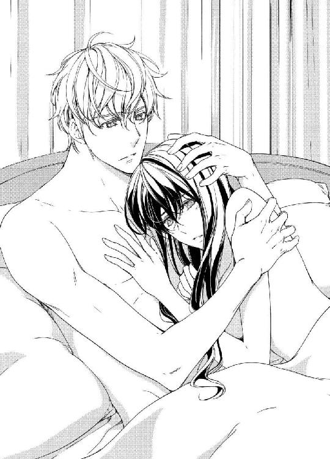
「これからは僕が君のそばにいるよ。君の弟妹の事も、一緒に考えていこう。そして、君の家の財産の件だが、それももう一度調べてみた方がいいかもしれない。抜け落ちている部分があるかもしれないから。僕の従弟が弁護士をしているから、彼に頼んでみよう」
「ありがとう、ジョシュア」
父親が亡くなって以来、誰にも頼る事無く一人で頑張ってきたソフィアだ。そんな彼女にとって、彼の申し出は初めてさし伸べられた救いの手だった。
「幸いここでの待遇はとてもよさそうだ。狩りの時にミルフォード卿から聞いたんだが、アンとはとても仲がいいらしいね」
「ええ、彼女とは姉妹のように仲がいいの。そもそも、私が仮面舞踏会に薔薇色のドレスを着て出席したのも、アンの身代わりだったの。これは私とアンとの間の内緒事よ。アンには、ロバートっていう恋人がいるの。だけど、訳あってアンはおおっぴらにはロバートに会えないのよ」
ソフィアは、アンとロバートの恋のいきさつをかいつまんで話した。その中には、当然二人の仲をミルフォード夫妻が反対している事も含まれている。
「なるほど......。夫妻の気持ちは分からなくもない......。誰だって自分達の可愛い娘には豊かな生活をさせてやりたいと望むし、家柄を重んじる人達にとって結婚は個人の繋がりだけではなく、家や財産が関係してくるものだからね」
端正なジョシュアの顔がふいに翳って、そのまま何か考え事をしているのか、じっと黙り込んだ。
「どうしたの、ジョシュア？」
ソフィアの言葉に、彼ははっと顔を上げてまたにっこりと笑った。
「一度アンの恋人にも会ってみたいね。君は会った事はあるのか？」
「ええ、とても気持ちのいい人なの。なにより、アンの事をすごく愛しているわ。二人ならきっといい夫婦になると思うの」
ソフィアを抱くジョシュアの腕にぐっと力がこもった。
「そうか。是非そうなってもらいたいものだな。僕に何か出来る事があれば、喜んで協力するよ」
ジョシュアの言葉に、ソフィアは嬉しそうに彼の胸に頬を寄せた。
「仮面舞踏会の夜、アンはロバートに会いに行く約束をしていたのよ。本当は仮病を使っての欠席ですんでいたはずだったんだけど、いろいろあって私がアンになりすまして出席したのよ。だから、いわばアンが私とあなたを引き合わせてくれたようなものね」
「あぁ、ソフィア......！ 僕達は──、いや、世にいる恋人たちは、それぞれに試練を与えられたり問題を抱えたりしているものだね。君にまた会えてよかった。アンには感謝してもしきれないな」
「ジョシュア。私も、あなたにまた会えて本当によかったと思うわ。そうでなきゃ、一生あなたとの別れを誤解したまま生きていくことになっていたわ。私、アンとロバートが結ばれるよう、最大限に努力して協力するつもりよ」
ジョシュアは、ソフィアの頬にそっと口を付けた。
「この五年間、君を守ってあげられなかった事が悔やまれるよ。さぞいろんな事があったんだろうね。さぁ、話してくれ。君と離ればなれになった原因についてはおおよその予測はついているが......。君には五年前に婚約者がいたんじゃなかったのか？」
彼女の頬にキスを続けながら、ジョシュアは極力彼女が辛い気持ちにならないよう気を使いながら質問を続けた。
「お父様がなぜそんな事を言ったのかわからないわ......。だって、当時私にはそんな人はいなかったんですもの。少なくとも、私には知らされてなかった。ジョシュア......それとは別に、私、あなたに言っておかなければならない事があるわ」
思いつめたような瞳で見つめるソフィアを、ジョシュアの腕がぎゅっと抱き締めてくる。
「いいよ、何を言っても受け止める覚悟は出来ているから。何かあったとしても、それは君のそばにいてあげられなかった僕のせいだ。安心して言ってごらん。そうしたら、ご褒美にたっぷりとキスをしてあげるよ」
ソフィアの肌を撫でる彼の指が、つん、と彼女の胸の先を突いた。
「ジョシュアったら！」
耳朶を赤くしたソフィアは、一度きゅっと唇を噛んで、思い切ったように口を開いた。
「私、あなたが私から去ってから、一時病気みたいになっていたの。何も食べられないし、何もする気力が出なかったの。一日中あなたの事を想って、まるでただ息をしているだけの人形みたいになってた。それで、その時父に言われるまま、ある人と婚約をしたのよ」
ソフィアは、ノーマンとの婚約から、それが解消されるまでの一部始終を話した。
それをただ黙って頷きながら聞いていたジョシュアは、ソフィアが今にも泣き出しそうな顔をしているのを見て、そっと彼女の目の上に唇を付けた。
「もう大丈夫だよ、ソフィア。これからは僕が君の楯になるから。もう誰にも君を傷つけさせやしない。約束する。愛しているから......ほら、笑ってごらん？」
「ぁんッ！」
悪戯な彼の指がソフィアの乳房をやんわりとくすぐる。
「だけど、君がその男と結婚しなかった事は今となっては幸いな事だったろう？ ねぇ、ソフィア......僕は君が他の男のものになるなんて事、とてもじゃないが耐えられない......」
乳房を包んでいたジョシュアの手が、ソフィアの下腹を軽く撫でた。
「ここに入るのは僕だけだよ。ここ......ちょうどこの辺り......君の襞の奥にある君の一番大切な場所。出来る事なら、そこにもキスをしたいくらいだ」
恥骨が作る小さな丘の上を指先でそっと引っ掻かれて、ソフィアの泣きそうになっていた顔が蕩けるような笑顔に変わった。
「くすぐったいっ......！ ジョシュア......あぁ、ジョシュア！」
ふざけているようでいて心から彼女を想う気持ちを感じさせる彼の素振りに、ソフィアは彼の首に腕を回し唇に自分からキスした。
「ソフィア......。嬉しいよ、君からキスしてくれるなんて」
もう一度、キス。
「私ね、いつだってあなたにキスしたかったわ。でも、そんなはしたない事しちゃいけないと思っていたの」
はにかむようなソフィアからのキスが続いた後、ジョシュアは彼女の身体を仰臥したまま後ろから抱え込むように抱き締めてくる。
「これでだいたいの事はわかったよ。今度は僕が話す番だね。だけど、出来るだけ簡潔にまとめても構わないかな？ 君のキスのせいで、僕のある一部分が苦境に立たされているんだ」
ソフィアの双臀の間に、固く屹立した彼のものがぬらぬらと遊んでいる。両の掌が彼女の乳房を包み込んで、柔らかに揉みしだき始めた。
「ジ、ジョシュア......、お願い。そんな風に動かないでっ......」
「ひどいな。君はいつからそんなに焦らし屋になったんだ？」
ランプの薄明りの中に彼の拗ねたような瞳が光った。
〝あぁ、昔の彼の口調だ。ジョシュアは、いつもこんな風に私を意地悪くからかって甘いキスをくれた......〟
彼の唇が、ソフィアのうなじをキスで辿っていく。
「何から話したらいいだろうな......。君から何か聞きたい事はあるかな？」
そう言いながらも、ジョシュアは指先で乳房の先をくりくりと弄っている。
「あ......ンッ......、もう、ジョシュアったら！」
口では怒っているのに、ソフィアは彼がしてくれる戯れのせいでじゅわりと脚の間を濡らしてしまう。
「ごめんよ。君があまりにも美味しそうで......。さぁ、ご質問は？ レディ。なんでも答えるから遠慮なくどうぞ。でも、たまに君をつまみ食いしたくなったら許してくれ」
「いいわ。許してあげる」
ソフィアは頬を染めながら可笑しそうに笑って、彼の胸に抱かれたまま少しの間頭の中を整理しようと考え込んだ。その間、ジョシュアは彼女のブルネットの髪に唇を埋めて大人しく待ち続ける。
「そうね、仮面舞踏会の夜の事をもう少し詳しく話して。それと、言いそびれていたけど、私だってあの夜あなただと気が付いていたのよ」
「なんだって？」
心底驚いたような顔で、ジョシュアが彼女の顔を覗き込んだ。
「じゃあ、あの夜僕らは──」
「そう、私達はあの夜お互いの正体をわかった上で抱き合っていたのよ。私は、あなたが私だと気付いていないと思いながらあなたに抱かれて......」
「僕は、君が僕と気付いていないと思いながら君を抱いていたんだね。あぁ、ソフィア！」
彼の掌が、ソフィアの乳房をすくった。そしてその突端に口づけ、そのキスを乳房中に降らせた。
「あんっ......、駄目よジョシュア......！ まだあなたが話し始めたばかりなのに！」
ソフィアはわざと怖い顔をして彼を睨みつける。ジョシュアは叱られた猟犬のように首をすくめ笑いそうになる口元をぎゅっと一文字に結んだ。ソフィアのお腹に当てられている彼の左手には、ソフィアの指がしっかりと絡んでいる。
「ねぇ、聞かせて。どうしてあの時正体を明かしてくれなかったの？」
「さっき言った通り、僕は君が父上の言っていた婚約者と既に結婚していると思っていた。そして、仮に僕が君の前に姿を見せても、到底相手にされないと思っていた。だから、せめてもう一度だけでも君をこの手に抱くために、見知らぬ男として君と一夜を共にするつもりでいた──」
「一夜を──？」
ソフィアの表情が少しだけ曇った。以前聞きかじった彼に関する噂話を思い出したからだ。
「ああ、だからといって決して軽はずみな気持ちでいた訳じゃない。やむにやまれぬ気持ちがあっての事だったんだ。でもそれも結局は計画倒れに終わった。なぜかって、一度君をこの腕に抱いたら、もっと君が欲しくて堪らなくなったからだ」
ジョシュアの長い脚がソフィアのふくらはぎに絡んだ。
「五年かけて忘れようとして忘れられずに、再会して君への想いが燃え上がった......、あぁ、ソフィア、君の肌はなんて滑らかなんだろう......」
ジョシュアの掌が、ソフィアの右内腿をゆるく捏ねながら蛇行している。彼女は、もうそれを止める気持ちはない。くるりと身体を反転させ、もう一度彼と向き合った状態になる。
どんな姿勢をとっても、お互いの身体の線がぴったりと寄り添っている感触を味わえるのを心地よく感じる。
「実を言うと、あのブローチは僕が細工をしたんだ。君がうっかり忘れて行ってしまうように、ドレスから外して、僕のベルトに移したんだ。それを口実にして、君ともう一度会える事を期待してね。君に会いたいがために、僕は泥棒の真似事までしてしまった」
「ジョシュア......」
ソフィアは目の前にある彼の顎に頬を寄せた。ちくちくと触れる彼の髭に、彼がそばにいるという充足感を味わえるのが嬉しかった。
ソフィアの額に、ジョシュアの頬が擦り寄ってきた。
「ブローチを持ってここへ来た時、僕を迎えてくれたミルフォード夫人と話が噛みあわなくて面食らったよ。僕は僕で、君がこの家に嫁いできた花嫁だと思ってたし、夫人は薔薇色のドレスのレディを、アンだと思い込んでしまったから」
「そうだったわね。でも、おかげでアンに対するミルフォード夫人の監視の目が緩くなっているみたいよ。あなたがここにいる間に、なんとかみんながみんな丸く収まる方法が見つかればいいなって話していたの」
「そうか」
ジョシュアは、少し考え込んだ後、ソフィアに向かってにっこりと微笑んで見せた。
「それには、いろいろと準備が必要だな。まずは僕達とアン、ロバートの四人が一度顔を合わせる事だね。なるべく早いうちに。さて、ここまで随分と謎が解けたように思うが、どうだい？ 次はどの謎を解こうか？ それとも、もうそろそろ僕の好きにさせてくれる？」
ジョシュアの指がソフィアの顎をそっと持ち上げ、軽く触れるだけのキスを唇に落としてくる。
「そうね。じゃあ、あと一つだけ......いい？」
「いいとも」
「あのね、怒らないで聞いてね。あなたに関する話よ。昔、うちの父があなたの事を〝放蕩者〟だと言ったの。そんな噂が流れてたし、あなたのまわりには昔から常に女性がいるんだって......。そして、あなたが海軍に入ったのはある未亡人とのスキャンダルを清算するためで、侯爵の息子であるのをいい事にあちこちのご婦人を誘惑しているんだって」
言葉を一つ一つゆっくりと発音しながら、ソフィアはすまなさそうな顔でジョシュアを見つめる。彼は、何も言わないまま彼女の瞳を見つめ返した。
「自分が気に入れば誰でも。その人が結婚していようと、どんな職業についていようと、って」
目を伏せ、顔をあげないままソフィアは言葉を継ぐ。
「それと、あなたが海軍に入ってから聞いた話だけど──、船が寄港する先々で女性に関する問題を起こしたとか、帰国してからもあちこちの貴婦人と積極的に交流を持っているとか」
そう言い終えたソフィアは、ためらいがちに顔を上げた。すると、そこにはさっき見た時と変わらずに自分を見つめているジョシュアの瞳がある。
「ごめんなさい。私──」
口元をふっと緩めて微笑んだジョシュアは、彼女の腰を抱いていた両腕を彼女の肩に回した。
「それについては、説明させてくれるかい？ 決して誤魔化そうとか言い訳をしようというんじゃない。ありのままを話すよ」
ソフィアがこくりと頷く。彼が話してくれるというなら、すべて受け入れよう、彼の言葉を信じようと思いながら。
「確かに、僕の周りには比較的多くの女性がいた。でもそれは社交界において普通より少し多い、という程度だ。そして〝放蕩者〟と呼ばれていた事も知ってる。だけど、それはとんでもない言いがかりだ。当時はまだ女性への接し方も不慣れでまごついてばかりだったし、いずれにしろ君に出会う前の話だ。未亡人とのスキャンダルとご婦人を誘惑する話は、正真正銘の嘘っぱちだ」
ジョシュアは軽く肩をすくめて、困ったように眉尻を下げた。
「僕が軍に入ってからの話は、僕自身人づてに聞いた事があった。だけど、それは全部が全部本当というわけじゃないんだ」
一呼吸置いて、彼はまた口を開いた。その間、ソフィアはただ彼の話にじっと耳を傾けている。
「まず、軍にいた時の話だが、確かに軍に入った当初、僕は君との事で自暴自棄になっていた時期があった。君に代わる女性を探そうと寄港した先の街に仲間と繰り出したり、社交界に顔を出したのも事実だ。だけど、一度も問題なんか起こした事はないし、すぐにそんな事は止めてしまった。なぜなら、そんな女性はこの世に存在するわけがない。そもそも君じゃなけりゃ意味がない事に気付いたから」
彼の唇がソフィアの髪の毛を探った。ジョシュアの話と、まるで撫でられているような心地よさに、彼女はほっと安堵のため息を吐く。
「国に帰ってからの話については、否定はしない。父と兄を相次いで亡くした僕は、祖父や大叔父から早く身を固めろ、子孫を残せとうるさくせっつかれている。気が進まないながらも、彼らから紹介された何人かのご婦人と会ったのは確かだ」
彼の話に、ソフィアはひどく動揺した。何も言わないまでも、きつく結ばれた唇と多くなる瞬きが彼女の心の内をすっかりばらしている。
「だけど、僕はどのご婦人にも心を動かしていないし、それぞれ一度会っただけでその後の訪問は控えている。僕は、わざわざそんな形で将来の伴侶を探そうとは思っていないからね」
そっと屈みこんできたジョシュアの顔が、ソフィアのすぐそばに来る。
「僕にとって、君は特別な存在なんだよ、ソフィア。五年前、たった七日間しか共に過ごしていなかったのに、それ以後ずっと......どうしても君の事を忘れられなかった。忘れたつもりになっていても、結局はどんな女性を見ても君の顔がちらつく」
「ジョシュ......ア......」
ソフィアの開いたままの唇に、ジョシュアの舌先が溶け込む。吐息と微かな水音が聞こえるキスが続いて、いつしかソフィアの瞳からはまた新たに一筋の涙が零れ落ちた。
「私も......、私も同じだったわ。あなたの事がどうしても忘れられなかった。頭ではあなたの事を忘れたつもりでいたけど、心では忘れていない事に気付いてたわ。だけど、それを認めるのが怖くて、もう二度と恋愛なんかすまいと思って──」
「ソフィア......」
ジョシュアの腕がそっとソフィアの身体を抱え込んで、そのまま彼女の背をシーツの上に下ろした。寝そべった彼女の身体を、ジョシュアの全身が覆った。
彼のキスがソフィアの頬を伝う涙を拭い去る。自然に腰に絡んでいた彼女の脚をジョシュアの引き締まった腕が肘に抱え込んだ。
「昨夜はすまなかった。君をつい乱暴に抱いてしまって──。頭の中で、あれこれと考え過ぎていたんだ。ありもしない事実を作り上げて無意味な嫉妬をして、君を奪うように抱く事で自分の中の不安を消そうとしてた」
ジョシュアの張りつめたペニスが、ソフィアの濡れた蜜孔を探り当てる。
「......嫉......妬？」
「ああ。君がなぜ結婚もしないままここにいるのか考えていたら、とんでもない結論に辿り着いてね......。誰にも内緒だよ......怒らないで......。僕は、君がミルフォード卿の愛人なんじゃないかと疑ってしまっていた」
「まぁ！ ジョシュアったら、なんて事を──、ぁあっ、あ......ぁ......！」
ソフィアの蜜窟の中に彼のくびれがくぷりと沈み込んだ。
「嫉妬は、時として人を完全に狂わせる。君を他の男に奪われたと思い込んだ僕は、君を貪るように抱く事で奪われたものを取り返そうと必死になっていたんだ」
ジョシュアのものはそのまま浅く彼女の中を掻き回して、少しずつ奥へと進み襞をめくっていく。彼女が切なげな声で喘ぐと、ジョシュアの指先が彼女の胸の先をきゅっとしごいた。
「もっとも、それ以前に君の妖艶な魅力に目がくらんでしまったっていう事もあるが......。許してくれるかい？ 僕は、もっと早く君と話すべきだったのに」
ソフィアは、ぐいと腰を上にずらして、彼の高ぶりを蜜窟の入り口まで引き抜く。
ジョシュアが一瞬悲しそうな表情を浮かべたのを見たソフィアは、困ったような顔でゆっくりと息を吐いて、身体をまた下へと戻していく。じわじわと、少しずつ彼が奥へと入ってくる。
「許すわ......。でも、今度そんな的外れな事を言ったら、もう許してあげないから」
彼は、参ったという風に緩く顔を左右に振って両方の口角を上げて見せた。
「君はいつの間に......。まったく、五年ぶりに会った君は、僕を振り回すとんでもなく魅惑的な女性になっているね」
「あぁッ！」
ずぷ、と一気に奥深く突かれて、一瞬目の前に閃光が弾けた。
まるでソフィアの身体を奏でるように擦り上げてくる彼のペニスを、ソフィアの蜜窟の襞が残らず慕い焦がれている。
「誓うよ。もう君を疑ったりしない。君は僕だけのものだ。そうだろう？」
喘ぎながら何度も頷き、舌先と視線でジョシュアのキスを求めてみる。すぐにそれを察した彼は、ソフィアの唇の上に啄むようなキスを浴びせかけた。
「ジョシュア......」
甘えたようにわざと腕を突っ張って彼を遠ざけようとするソフィアを、ジョシュアはきつく抱き締めて離そうとしない。
「もう二度と君を離さない。誰がなんと言おうと」
「嬉し......、ぁあ、ジョシュア......、ぁ......」
泣きたいほど優しい抽送に酔いしれ、ソフィアは彼と今度こそ身も心も一つになったと思った。
※ ※ ※
幾分ぬかるみが残っていた草地も降り注ぐ陽光ですっかり乾いて、その日のミルフォード邸の中には芳しい花の香りが漂っていた。
邸宅のいたるところにある花瓶の中には、ソフィアとアンが自ら摘んできた様々な種類の花が飾られている。
「この花の香りで、お父様が少しでも元気になればいいんだけど」
アンの言葉を受け、ミルフォード夫人はすまなさそうな顔をジョシュアに向けて、言った。
「そうね。今日はごめんなさいね、ジョシュア。昨夜はきっとあなたという素敵な話し相手を見つけて、つい飲み過ぎてしまったんだわ」
濃紫色の上着に同系色のベストとキュロットを身に着けたジョシュアは、鷹揚なそぶりで軽く頭を下げる。
「とんでもありません。僕の方こそついお話が面白くて、昨夜ミルフォード卿に長くお付き合いをいただいてしまって」
ジョシュアを誘いオペラ観劇をする予定だった日の朝、ミルフォード卿はひどい二日酔いに見舞われていた。なんでも、昨夜はだいぶ遅くまでジョシュアと共にいろいろと話しながらワインを楽しんでいたとの事。
したたかに酔っぱらった彼は朝になっても起き出せずに、今もベッドの中で頭痛と闘っているのだ。
その結果、夫妻のために用意していた席はジョシュアの友人である男性と、ソフィアが代わりに座る事になったというわけだ。
「まあ、ソフィア、とっても綺麗よ。あなたの腰の細さは、この界隈の中でも群を抜いているわね」
ミルフォード夫人は、準備して部屋に入ってきたソフィアを見て感嘆の声を上げた。
淡い若草色のドレスに髪をアップにした彼女は、いつにも増して上品な美しさを纏っている。
一方、アンは白にピンク色をアクセントにしたドレスに、首の後ろで束ねた髪をリボンで飾っている。
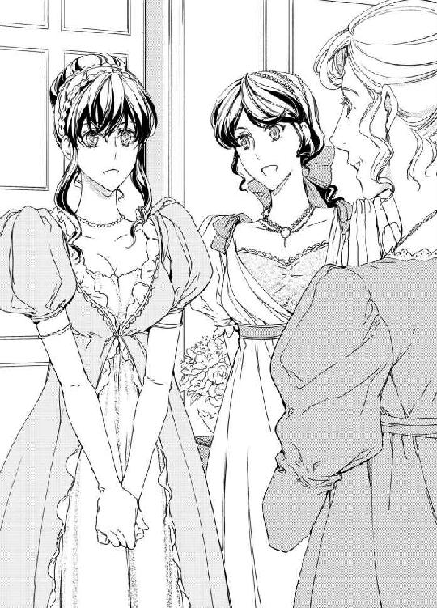
「今日はありがとうございます。私までオペラに行かせてくださるなんて」
ソフィアは、夫人に向かって優雅にお辞儀をした。
「いいのよ、今日は楽しんできてね。帰ったら感想を聞かせてちょうだい。さ、馬車の用意が出来たようよ。あぁ、ジョシュア。夜のロンドンは冷えるから、このコートを持っていくといいわ」
「ありがとうございます。では、お借りします」
ジョシュアが夫人に手渡されたのは、ミルフォード卿の濃緑色のイブニング・コートで、襟の部分に金色の糸で刺繍が施してある。
夫人に見送られ、落ち着いた様子で馬車に乗り込んだ三人だったが、走り出した馬が調子っぱずれにいなないた途端に、誰からともなくぷっと吹きだして馬車の中に笑い声が溢れた。
昨日一日ゆっくりとした時間を過ごす中で、ソフィアはアンにジョシュアとの愛が復活した事を話した。驚き、感激したアンは今ではジョシュアともすっかり打ち解けている。
「ジョシュアったらすごいわ。酒豪のお父様に付き合って酔いつぶれない人なんて初めて！」
「ミルフォード卿のお話は実際愉快だったし、いくら聞いても飽きなくてね。うっかり彼にワインを勧め過ぎてしまったみたいだ」
ロンドンへ向かう道中、話題はワインの話から今回オペラに同行するという彼の友達の話に移った。
「ところで、今夜お見えになるお友達のミスター・ジョン・マーレイってどんな方なの？」
アンが問うと、ジョシュアはにっこりと微笑んで隣にいるソフィアの手をトン、とつついた。
「アン、実は今夜いらっしゃるのはミスター・ジョン・マーレイではないのよ」
「えっ？ どういう事？ それじゃあ誰がいらっしゃるの？ 私を席までエスコートしてくださるのはどこのどなた？」
おどけたように両手を広げたアンに向かって、ソフィアもまたにっこりと微笑む。
「あなたが大好きなロバート・ショーが来てくれるわ。実は、昨日のうちにジョシュアと相談して、こっそりロバートと連絡を取って会場近くで落ち合う約束をしたのよ」
「まあ！ まあ......それって......、お父様の事も含めて、もしや何もかも計画していた事なの？」
「ええ、ごめんなさいね。上手くいくとは限らなかったし、オペラを楽しみにしていらしたお二人にはお気の毒な事をしてしまったんだけど、四人が顔を合わせる丁度いい機会かと思って」
「平気よ！ お母様はともかく、お父様は実はオペラはあまりお好きじゃないのよ。今頃喜んでいると思うわ！ あぁ、ソフィア......ジョシュアも！ それにしてもあなた達って、最高の策士ね！」
アンはすっかり感激した様子で、正面に並んで座る二人を交互に見た。
「アンには日頃何かと相談に乗って貰っているし、今日の事はあなたへのお礼でもあるのよ」
「ソフィア！ あなた達二人に幸あれ！ だわ！」
それからの道のりは、アンのロバートに関するノロケ話に終始し、残る二人は幸せそうに身を寄せ合って彼女の話に相槌を打つ役に回っていた。
馬車はテムズ川の側道を通りセントポール大聖堂が窓から見え始めた。
「もうじき待ち合わせ場所に着くわね。あぁ、ほら、アン。あそこに立っているのはロバートじゃないの？」
見ると、川の前にある石造りのパブの前に、赤い髪をした紳士が一人佇んでいるのが見える。
「ああ、本当だわ！」
窓から身を乗り出して手を振るアンの腰を、ソフィアが慌てて持って支えた。
馬車が止まり、外の寒さにそれぞれが持参していた厚手のショールやイブニング・コートを手に取る。真っ先に駆け出したアンは、ロバートの腕に手を回して、嬉々とした様子でソフィア達の元に帰ってきた。
「ジョシュア、紹介するわね。こちら、ロバート・ショー。お父様は、サリー州のノーザンド卿よ」
「やあ、ロバート！」
「ジョシュア！ 久しぶりだなぁ！」
アンがロバートを紹介するなり、二人はいかにも親しげに名前を呼び合い、握手を交わしている。それを見てキツネにつままれたような顔をしているアンに、ソフィアがそっと耳打ちをした。
「ごめんね。実はびっくりさせついでに黙っていたんだけど、ジョシュアとロバートは再従兄弟の関係なんですって。お母さま同士が従妹で、子供の頃はよく遊んだ仲らしいの」
「まあ......！」
驚きの連続で、さすがのアンも口をあんぐりと開けたまま言葉が出ない。
「僕も驚いたよ。ソフィアの想い人が僕と縁のある男だったとはね」
ロバートは、自分よりも三十センチは高いジョシュアの肩をドンと叩いた。
「僕の方こそ、君がそんなにも情熱的な恋をしてるなんて夢にも思わなかった！ さあ、アン。恋人の手を君にお返しするよ」
握っていたロバートの手をアンに手渡し、ジョシュアはそばにいたソフィアに左腕を差し出した。
辺りはだんだんと薄暗くなり始めて、街燈にはぽつぽつと灯りが点り始める。
ソフィア達四人は、カップル同士で歩いたり時に同性同士でそぞろ歩いたりもしながら、あと少しで目的地であるロイヤル・オペラ・ハウスに到着しようとしていた。と、その時──。
側道から走って来た一人の女性が、いきなりソフィアを肘で突き飛ばした。
「きゃっ！」
「君、危ないじゃないか！」
驚いたジョシュアがソフィアを助けようとして屈みこむと、黒マントを着たその女性は、抱えていた荷物を彼の腕の中に押し付けるようにして叫んだ。
「あぁ、あなた！ やっと見つけた！ ほら、これはあなたの子よ！」
言い終えると同時に手を引っ込めた女性は、そのまま元来た道の方へ走り出して一度も振り返る事無く人混みの中に消えていってしまった。
「ソフィア！ 大丈夫？」
アンが蹲ったままでいるソフィアの元に駆けつけ、ロバートは立ちすくんだままのジョシュアのそばに行った。ソフィアは、突然の事にショックを受け、口もきけずにいる。
「何が起こったんだ？ 今の女性、君に何を渡したんだ？ 〝あなたの子〟とか言っていたけど、まさか......」
ジョシュアの手の中にあるえんじ色の布にくるまれた丸いもの。突然そこから弱々しい泣き声が聞こえてきた。
「なぁに？ もしかして、本当に赤ん坊なの？」
ソフィアのそばに屈んだままでアンが声を上げる。
「うわっ、赤ん坊だ！ いったいこれはどうした事だ？ ジョシュア、今の女性を知っているのか？」
「まさか！」
ジョシュアは憤然と叫んだ。
「いったい全体どういう事だ？ ロバート！ 頼む、彼女を追ってくれ！ まだ近くにいるかもしれない！」
ジョシュアの腕に抱かれた赤ん坊は金髪の女の子で、見たところ少なくとも生後半年も経っていない様子だ。すぐさまロバートが黒マントの女性を追ったが、結局見つけられず、すごすごと戻ってきた。
当然オペラどころではなくなり、急遽そこからすぐの場所にあるジョシュアとロバートの大叔母にあたるレディ・シャーリーのタウンハウスに向かう事になった。彼女自身は未婚であるけど、慈善事業としていくつかの孤児院を運営しており、赤ん坊の世話も手馴れている人なのだという。
迎えてくれたレディ・シャーリーの指示の下、それぞれが赤ん坊の世話をしたり、巡査隊に捜索の協力を依頼したりと、慌ただしい状態が続いた。
やっと一段落ついて赤ん坊も寝付くと、急に邸宅の中がシンと静まり返る。
「ジョシュアはまだ戻らないの？」
レディ・シャーリーが困惑顔でロバートの方を振り返った。彼女の手には、赤ん坊が包まれていた布が握られている。
「ええ、まだしばらくかかるかもしれませんね。一応再度周辺を見まわって、それらしき女性があの辺りに住んでいるかどうか確認もすると言っていたので」
ジョシュアと共に走り回り、先に帰されたロバートは赤ん坊の世話が出来るわけもなく、さっきから気まずそうにソファに座っていた。
「とりあえず、君とソフィアは帰宅した方がいい。後のことは後日また知らせるから」
ロバートがアンに話しかけ、アンが頷く。
「しかし、いったいどうしてこんな事が起こったんだ？」
ロバートの比較的小さな声が、レディ・シャーリーにも聞こえていたらしい。
「それは私も是非知りたいところですよ。あなたの説明を聞いてもまるで状況が把握出来やしないわ。赤ん坊が包まれていた布はなかなか上等なものよ。という事は、それ相応の身分の者が関わっているって事ね」
レディ・シャーリーは大袈裟にため息をついて、ちらりとソフィア達の方に視線を移した。
「ジョシュアも、もっと早く軍を辞めて国に帰ってきていたらよかったのに。赤ん坊の大きさや外見からして、フランスあたりで作った子供なんじゃないかしら？」
この言葉を聞き、それまでどこか放心した中で混乱状態だったソフィアは、一瞬だけはっと我に返った。ロバートが慌てて声を上げる。
「でも大叔母様、ジョシュアは身に覚えが無いと──」
「ええ、ええ」
レディ・シャーリーは訳知り顔で相槌を打つ。
「うちの孤児院には、そう言って父親に見捨てられた子供達がたくさんいますよ。まぁ、どうであれとりあえずあの子はうちで面倒を見ましょう。さぁ、ロバート、ご婦人方を馬車までお送りして。お二人共、とんだ災難だったわね」
ねぎらうような彼女の笑顔に見送られて、ソフィアはアンと共に馬車に乗り込み帰途についた。
「ソフィア、大丈夫？ ねぇ、さっきの事だけど、きっと何かの間違いだと思うわ」
アンが話しかけてくれるも、ソフィアはただ曖昧に頷く事しか出来ない。アンもそれ以上何を言っていいのかわからない様子で、到着するまでの間ずっとソフィアの手を握って沈黙を守っていた。
ミルフォード邸に着いてベッドに入るまでの間の事は、ソフィアの記憶にほとんど残ってはいない。何を考えているわけでもなかったけど、ただやらなければいけない最低限の事を淡々とこなし、ベッドに入った。
寝る前にドアがノックされる音がしたけど、それすらソフィアの耳には届かず、ただシーツの上に横たわってじっとしている。
窓から見える夜空に、細い三日月が浮かんでいる。その色にさっきみた赤ん坊の髪の毛の色を思い出したソフィアは、込み上げてきた深い悲しみに捕らわれ、一人シーツを掴み声を殺して泣き続けた。
※ ※ ※
次の日、頭痛を理由に午前中を自室で過ごさせて貰っているソフィアは、午後になってアンからの訪問を受けた。
「ソフィア......」
彼女の顔を見るなり、その心の内を察したアンはソフィアの手を取って一緒に部屋の隅にある長椅子に座った。
「昨夜の事、お父様達には話してないわ。ジョシュアは、オペラを観た後お友達が急に具合が悪くなってそちらに付き添ってるって言ってあるの。ねぇ、ソフィア......。本当の事は今はまだわからないけど、気持ちをしっかり持ってね。何があっても私はあなたの味方だから」
アンの言葉に、ソフィアは力なく微笑んだ。
「ええ、ありがとう、アン。私なら大丈夫よ。ええ、きっと平気よ......。だって、彼の事で悩むのはこれが初めてじゃないもの」
「でも、昨夜はひどく泣いたんでしょう？ まだ目が少し赤いわ。ねぇ、話して？ 一人で辛い思いを抱えないで。彼と話す前に、いろいろと気持ちを整理しておきましょう？」
ソフィアは、アンの青紺色の瞳を見つめた。すぐそばにいてくれる親友の存在を、彼女は心底ありがたく思った。
「あなたがいてくれて嬉しいわ、アン。でもね......私もうジョシュアとは終わりにしようと思うの。これ以上、彼の事で悩むのは耐えられないし、こんな感情に振り回されているわけにはいかないのよ。私には、養わなければならない弟妹がいるんだもの」
「でも......」
アンを見るソフィアの顔には、苦悶の色がはっきりと浮かんでいる。
「仮面舞踏会に行く前の自分......、ほんの半月前の私に戻るだけの話よ。彼に再会した事は夢の中の出来事だったと思えばいい。それが一番いいの。きっとそうだと思うの......」
「ソフィア......！ 本当にそれでいいの？ いいえ、よくない！ そんなの駄目よ、ソフィア！」
ソフィアの決心に、アンは激しくかぶりを振る。
「せっかくまた会えて愛を復活させたばかりなのに！ ねぇ、考え直して？ それに、あの赤ん坊の父親がジョシュアだと決まったわけじゃないでしょ？」
「それについては、私もよく考えたわ。でも、アンも見たでしょう？ あの女性ははっきりとジョシュアを目指して走って来たのよ。それにあの赤ん坊の髪の色は彼と同じ金髪だったわ。きっと間違いない......。レディ・シャーリーがおっしゃったとおり、彼が海軍時代にお付き合いした女性がいたのよ。彼自身、海軍にいた一時期、恋人になる女性を探していたと言っていたもの」
すっかり諦めた様子のソフィアを見て、アンはなんとか彼女を元気づける方法はないかと懸命に頭を捻った。だけど、いくらか考えてもこれといったものが見つからない。
今自分が何を言っても、目の前にいる親友には響きそうもないのが悔しいし、じれったかった。
「とにかくもう一度彼とちゃんと話してみて？ ね、お願いよ、ソフィア。もし二人きりで話すのが辛いなら私も一緒にいるから」
アンの思いやりがこもった言葉に、ソフィアは薄く微笑んでこくりと首を縦に振った。
少なくとも、彼は一度はここに戻って来るだろう。彼の馬車も荷物も、ここに置いたままになっているのだから。
「わかったわ、アン。彼と話してみるわ」
そう返事をしながらも、ソフィアはその話し合いが不毛なものになってしまう事を予想していた。自分にはもうジョシュアと共に過ごす未来がやって来ない事を、諦めと共に受け入れていたのだ。
翌日、ソフィアがアンに誘われてエレナと共に庭を散歩していると、ジョシュアが鞍をつけただけの馬を駆ってミルフォード邸に帰りついた。
ちょうどミルフォード夫妻は近隣の屋敷に出かけており、不在だ。アンは、ソフィアの意志を確かめると、エレナを連れてそそくさと居間の方へと引き上げて行った。
一人残されたソフィアは、なるべく人目につかないよう庭の東側にある東屋へと続く道を歩いていく。しばらくすると、後ろから力強い足音が聞こえてきた。振り返って確かめるまでもなく、それがジョシュアである事がわかる。
低くやや疲れたような彼の声が、すぐ後ろから聞こえてきた。
「ソフィア」
蔓バラが巻き付く東屋に入って、ソフィアはゆっくりと後ろを振り返った。
「お帰りなさい、ジョシュア」
そのままへたり込むようにベンチに腰かけると、それを追うようにジョシュアが少しだけ距離を置いて彼女の隣に腰を下ろした。
「大丈夫かい？ とても顔色が悪いみたいだけど」
変わらない彼の声、端正な顔立ち、そのどちらもが急に遠いものに感じた。アンが言うように、ちゃんと話そうと思いながらここに来たのに、心が揺れて思うように話す事が出来ない。
「ええ、大丈夫よ。それより、赤ん坊は元気？ 風邪を引いてない？ ......あぁ、レディ・シャーリーがついていらっしゃるから大丈夫ね」
彼の顔を見ているのが辛くなったソフィアは、手に持っていたハンカチに視線を落とした。
「うん、赤ん坊は元気だ。ベテランの乳母もついているしね」
「そう、よかったわね。それで......」
言いよどむソフィアの後を継いで、ジョシュアが話し始める。
「あれからずっと赤ん坊の母親を探しているんだが、今のところ見つかっていない。手がかりと言っても赤ん坊が包まれていた布と着ている産着だけだ。ロバートが、もう少し範囲を広げて母親を探してくれているが、あまり期待は出来ないかもしれない」
それを聞き、僅かに頷いたソフィアは、視線を下に向けたまま用意していた言葉を口に出した。
「ジョシュア......、私ね、もうあなたとはお会いしない方がいいと思うの。せっかく再会したけど、結局私達って上手くいかないと思うわ。私、元々もう一生恋愛なんかしないって決めていたし、今の生活を守りたいの。弟を立派に成人させて、妹には幸せな結婚をして貰って......それが私の望みなのよ。もうこれ以上他の事に心を煩わされたくないの」
一気にそう言ったソフィアは、手の中のハンカチをきつく握りしめた。横にいるジョシュアが彼女ににじり寄って、さっきよりも低い声で話しかける。
「ソフィア......、まさかそれを本気で言っているわけじゃないだろうね？」
彼の声が微かに震えている。ソフィアのドレスの胸元が大きく上下する。
「いいえ、本気よ。どのみち無理だったんだわ。あなたはどこへ行っても女性を惹きつけずにはおかないのよ。昔も、今も、きっとこれからもずっと......。そんなの私には耐えられないし、これ以上お付き合いしない方がお互いの身のためだわ」
「ソフィア......！」
彼の手がソフィアの肩を掴んだ。
「この間あなたの過去について話した時、そんなの昔の話だと思ってたわ。だけど、そうじゃなかった。過去は今に繋がっていたのよ！」
「ちょっと待ってくれ、ソフィア！ 君はもしやあの赤ん坊が本当に僕の子だと思っているのか？」
ソフィアは、思い切って視線を上げ、ジョシュアの瞳を真っ直ぐに見つめた。
「ええ、そうよ。だって、そう思うのが自然でしょう？ あの子の母親は、はっきりとあなたを目指して走ってきた。そして、あなたに赤ん坊を手渡して〝あなたの子〟だと言ったわ。あなたと同じ、金色の髪をした赤ん坊を！」
そう言うなり、ソフィアは立ち上がって逃げ出そうとした。だけど、ジョシュアの手がしっかりと彼女を掴まえているから、ただもがくだけで終わってしまう。
「違う！ あの子は僕の子じゃない。なぜそんな事を言うんだ？ つい三日前に愛を誓い合ったばかりなのに」
ジョシュアの唇がソフィアの顔に近づく。咄嗟に横向いた彼女の頬に、彼の唇が押し当てられる。
「やめて......！ 私をそんな風に扱わないで！ 私をあなたに群がってくるたくさんの女性達と一緒にしないで......。キスをすれば誤魔化せると思っているのね？ 昔からそうだったように、あなたは今も変わらない〝放蕩者〟だわ......！」
ソフィアに押しのけられたジョシュアは、傷ついたような顔で彼女の横顔に見入った。
「ソフィア......、僕を信じないのか？ 大昔の根拠のない噂を信じると......誰かもわからない女性の戯言のせいで僕と別れるというのか？」
「仕方ないわ！ 私はもうこれ以上傷つきたくないの。あなたを失い、婚約者にも去られて、今度こそ幸せになれると思った途端にまた裏切られる......。もうこんな事たくさんなの！ 二度と私に構わないで......。あなたはあなたが帰るべきところに帰って、一緒にいるべき人と幸せに暮らしてちょうだい......！」
ジョシュアの手を振り払い立ち上ったソフィアは、東屋から走り出て彼を振り返った。
「お会いするのは今日が最後よ。私に平穏な時を取り戻させて......お願い、これ以上私を苦しめないで──」
立ち上がり、ソフィアを追おうとしていたジョシュアの足が止まる。
「ソフィア......、君はそれを本当に望んでいるのか？」
彼の言葉にソフィアは無言で頷き、くるりと踵を返しテラスへと続く道を駆け戻って行った。
※ ※ ※
春が過ぎ、初夏の日差しがミルフォード邸の花園を美しく照らしている。
二日前に行われたエレナの誕生日会には、ちょうど同じ月に誕生日がくるソフィアの弟のユアンも招待された。
彼は、ひと月前に無事海軍の士官候補生として艦に乗船する事が決まって、その準備のためにロンドンまで来ていたのだ。久しく見ないうちにすっかり男らしくなった弟を見て、ソフィアも心から喜び、ミルフォード家の人達と共に彼を歓待し、今朝帰っていくのを見送ったばかりだ。
ジョシュアがミルフォード邸を去ってから三か月が過ぎ、夫妻の間でも彼の話題は上らなくなってしまっている。
ソフィアが彼に別れを告げたあの日、ジョシュアは彼女が部屋に籠っている間に荷物をまとめ、ミルフォード邸を後にしていた。
その一時間の間に、アンはなんとか彼を引き留めようと必死になってくれたらしい。だが、今何を言ってもソフィアの心を変える事は出来ないと悟ったジョシュアは、それを感謝と共に振り切って去って行ったのだという。
自分達の留守中に彼がいなくなった事を嘆いていたミルフォード夫妻だったが、親戚に重病人が出たとのアンの説明を聞き、それでは致し方ないと納得した様子だ。
表面的には、ジョシュアがここに来る前と何ら変わりはない。
アンとロバートは相変わらず夫妻に隠れて交際を続けているし、ソフィアはエレナの家庭教師として静かに日々を暮している。
ソフィアは、自身が言った通りジョシュアと再会する前の日常を取り戻したわけだし、亡母の遠縁にあたる人がユアンの海軍入りの口利きをしてくれたらしく、無事弟も希望する将来に一歩踏み出す事が出来た。
だけど、彼女の気持ちは本当には晴れていない。表向きは明るく笑い、充実した毎日を送っているという風を装っていても、その実心は空っぽで瞳の奥は少しも笑っていない。
それを知っているのは、アンただ一人だったが、彼女ですらソフィアをそんな状態から助け出す事は不可能に近いと思っている。
ジョシュアが去ってからの彼女は、以前にも増して社交界を避けるようになって、お茶の席で噂話が始まりそうになると不自然ではない程度に話題を逸らし、席を外した。
そんなある日、ミルフォード邸に豪奢な四頭立て馬車が到着した。
なんの前触れもない訪問に驚いたミルフォード夫妻は、やってきた人物がかつてソフィアと婚約関係にあったアリーレ卿ことノーマン・ガッシュベルだと知ってさらに仰天する。
ちょうど彼の到着時には家族全員がお茶のテーブルを前に揃っており、そこにはソフィアも同席していた。
ノーマンの顔を見るなり逃げ出したくなったソフィアだったが、人目がある中、そんな不作法な事は出来ない。
機転を利かせたミルフォード夫人が大袈裟に歓迎の挨拶をして、その流れでノーマンをお茶の席に誘った。
「まぁ、アリーレ卿、お久しぶりですこと。去年競馬場で会って以来ですわね。お子さん達はお元気？ さぁ、こちらにお座りになって──」
伯爵であり、バークシャーに領地を持つノーマンは、その地名からアリーレ卿とも呼ばれている。
彼はその場にいた一人一人に慇懃に挨拶をし、ソフィアの方を見て「元気そうでなによりです」と微笑みを浮かべた。
彼とは二年前に婚約破棄の件で顔を合わせて以来、一度も会った事はないし噂も耳にしていない。幾分太ったように見えるが、相変わらずの優男で焦げ茶色の上着をさらりと着こなしている。
ノーマンの妻はフランス王室の血を引く貴婦人だという事だったが、結婚をしたという以外は特に噂に上らない程つつましく地味な女性みたいだ。
「そうそう、以前あなたがまだ独身だった頃、アリーレ卿のお父様と親しくしていらしたと聞いた事がありましてよ」
夫人に水を向けられたミルフォード卿は、一瞬眉をぴくりと吊り上げて黙り込んだが、すぐに顔に満面の笑みを浮かべて大きく頷いて見せた。
「ああ、そういえばそうだった！ アリーレ卿、あなたのお父様とは以前、とあるサロンで親しくお話をさせていただいた事がありましたよ」
まだどちらも結婚前の若い時分、当時一番人気だったある貴婦人のサロンへ足繁く通っていたのだという。
「ええ、僕も生前父からそのように伺っておりました。その頃のミルフォード卿の武勇伝は、父からよく聞かされたものです。今でもよく覚えていますよ」
「いやいや、武勇伝というにははなはだお恥ずかしいものばかりで──」
ミルフォード卿は慌てたように作り笑顔を浮かべた。
しばらく男二人の当たり障りのない話が続いて、お茶を飲み終えたミルフォード卿はノーマンを書斎に誘ってさっさと席を立ってしまう。
「あらあら、殿方は何かと秘密の話し合いがお好きみたいね」
ミルフォード夫人は軽やかに笑うと、エレナを伴って庭に花を摘みに行ってしまった。
「うちには定期的に珍しいお客様が来る事になっているみたいね」
ソフィアの部屋でやりかけの刺繍をする事にしたアンは、多少遠慮がちにそう言って首をすくめた。
「ほんとね。私がどこにいるか探し当てるゲームでもはやっているのかしら？」
冗談めかして言いながらも、ソフィアの心は乱れていた。
なぜここにノーマンが来たのか。ミルフォード夫妻と知らない仲ではないにしても、突然の訪問を受けるほどには親しくないようだし、だとしたら何が目的なのだろうか？
「ね、ソフィア。アリーレ卿がここへ来たのって、何か思い当たる理由がある？」
ソフィアの疑問を代弁するかのように、アンがしきりに首を傾げる。
「まさか！」
婚約している時ですらあまり会った事がなかった彼については、昔も今も少しも愛情は感じない。ただ、噂がきっかけで婚約破棄に至った事実だけがソフィアの心に暗く影を差しているし、彼に対して迷惑をかけてしまったという申し訳なさと気まずさは感じている。
夕方になり、どうやら今夜一晩ここに滞在することが決まったらしいノーマンは、ディナーの前にソフィアを散歩に誘った。
「ソフィア。君とはいろいろとあったが、今はもう何のわだかまりもない。君はどうだい？」
「ええ。あれから随分時も経ちましたし、今はもうすっかり落ち着いた日々を送っていますわ」
ぎこちないながらも、ソフィアは精一杯彼に気を配り、持ち出される話題にも控えめな笑顔と物わかりのいい相槌で応えた。
後から思えば、これがノーマンなりの品定めだったのかもしれない。散歩が終わりそれぞれが食堂に入った時、ソフィアの視界の隅にノーマンとミルフォード卿が何かひそひそと話し合いをする姿が映った。
最初のワインで改めてノーマンに歓迎の言葉を贈ったミルフォード卿は、掲げたワイングラスを微笑みと共にソフィアの方へ向けた。
「さてさて、ここで大変喜ばしいご報告をさせていただこう。あぁ、いや、その前に実に残念で悲しむべき事実を述べねばならないんだが......」
ごほん、と咳払いをしたミルフォード卿は、ノーマンに軽く一礼した後おもむろに話し始める。
「ここにいるアリーレ卿......いや、もう親しくノーマンと呼ぶことにしよう。彼は、今から一年前に細君を亡くされたそうだ」
「まぁ......！」
夫の報告に声を上げたミルフォード夫人は、ノーマンの方を見て精一杯の哀悼を込めた表情を浮かべた。それを軽く頭を下げて受け止めた彼は、またミルフォード卿の方に視線を戻して、すぐにそれをソフィアの方に向ける。
「そこで、だ。彼がここに来た理由なんだが、先ほど彼と書斎で葉巻を吸いながら大変喜ばしい話を聞かされてね。うん、実に喜ばしい。ソフィア、ノーマンは君と是非再婚したいと思っているそうだよ！」
「えっ......？」
ソフィアの目に映る、自分を見て微笑むノーマンの顔とその先に見えるミルフォード卿の笑顔。
青天の霹靂とはまさにこの事。まさか、今になってノーマンが自分との結婚をのぞんでいるとは！
「まぁまぁ！ 何て事でしょう！ 驚いたわ......。ソフィア、あなた、もう......？」
夫人に問いかけられ、ソフィアは慌てて首を横に振った。
「いえ、ミルフォード夫人。彼女はまだ何も知らないんです。この事は、さっき書斎でミルフォード卿にご相談したばかりで。僕の気持ちだけでは決められない事ですしね......。でもさっき庭を散歩しながらソフィアと話してみて、どうやら彼女も僕を憎からず思っているようだと判断して、ここで公開プロポーズさせていただこうと思った次第です」
そう言い切ったノーマンは、おもむろに席を立ってソフィアのそばに立った。
「ソフィア、聞いての通りだ。僕は一年前に妻を亡くした。二度目の出産を終えて間もなくだった。元々身体が丈夫な方ではなかったからね。今うちには双子を含む三人の子供がいて、まだ小さく母親が必要な年齢なんだよ。どうだい？ 僕と結婚して子供達の母親になってくれないかな？」
ソフィアは、自分を見るノーマンの顔を見つめた。
〝この人ったら、いきなり何を言いだすの？ 公開プロポーズ？ 子供達の母親？ いつ私が彼を憎からず思ったって？〟
「まぁ、お子さんが三人も！ 男の子？ 女の子かしら。まだお小さいんでしょうにねぇ。今はどちらにいらっしゃるの？」
ミルフォード夫人が突然話に割って入る。
「上が二歳になる女の子の双子で、下の子も女の子です。今はバークシャーのカントリーハウスにいますよ」
「まぁまぁ！ あそこはいいところですわね！ 昔一度行ったことがありますけど、とても美しいところでしたわ。ところで──」
好奇心の塊と化したミルフォード夫人のお蔭で、ソフィアはディナーのほとんどの時間を聞き役に徹する事になってしまった。
次々と繰り出される新しい話題で、会話は弾みディナーの時間はあっという間に過ぎていった。
デザートを食べ終えて食後のお茶を楽しんでいる時、ふとノーマンがソフィアに話しかける。
「よければ、明日僕と一緒にバークシャーに来てくれないだろうか。きっと娘達も喜ぶと思うし」
「えっ、でも──」
それは、あまりにも急な展開というものだ。いきなり求婚されたかと思えば、もう自邸に連れ帰る手はずを整えるなんて。
そういえば、彼と婚約していた時、同じように感じた事があった。
それが彼の性格なのか、とにかく何をするにしてもまず自分が思うとおりにやり方を決めてしまう。それに異を唱えればその都度検討して意見を取り入れてくれる時もある。だけど、基本独り善がりな考え方をする人である事を思い出した。
「ああ、そうだ、ミルフォード卿。もしご都合がよろしければここにいらっしゃる皆さんをご招待させてくださいませんか。ソフィアとの事が決まれば、また足繁く来ていただく事になるでしょうし」
あぁ、まただ。また、一人で先走って話を進めている。
「あら、素敵ですわね！ 是非お伺いしたいですわ！」
ソフィアが何か言おうとする前に、ミルフォード夫人が承諾の返事をしてしまった。
「お母様ったら！」
アンが慌てて母親をたしなめるも、夫人の気持ちはもはやバークシャーの美しい風景の中に飛んでしまっているみたいだ。
「では、決まりですね。明日我が家に向けて出発するとしましょう。慌ただしい思いをさせて申し訳ありませんが、好機は逃すなとも言いますから」
ノーマンが言うと、ミルフォード卿がそれに同調する。食堂を出る時、アンがソフィアの腕をとってこっそりと耳打ちしてくる。
「ねぇ、なんだかもうすっかりあなたとの再婚が決まったみたいな態度だけど。さっき行った散歩って、そんなに中身の濃いものだったの？」
「いいえ、ぜんぜん」
ソフィアの言葉に、アンが不安そうな表情を浮かべる。
前を行くノーマンの背中を見ながら、ソフィアはやっと静けさを取り戻しつつあった自分の心が、またしても乱されていく気配を感じていた。
※ ※ ※
バークシャーにあるノーマンの邸宅は、元々は亡き細君が父親から受け継いだものだという。
まるで絵画のように美しい邸宅の庭には、綺麗に刈り込まれた低木で出来た迷路まである。
建物の中のいたるところに一族の肖像画が飾ってあり、ソフィアが通された部屋は壁紙がシルクで出来たフランス風プライベートルームだ。
暖炉の上には色白で薔薇色の頬をした女性の絵が飾られている。
「きっと亡くなった奥様だわ......」
一度も会った事がないとはいえ、三人の子供を残して逝かなければならなかった彼女の無念を思うと、ひどく心が痛んだ。
たっぷりとした昼食をとった後、お客達がそれぞれの部屋に落ち着いたのを確認に回っていたらしいノーマンが、咳払いと共に開けたままでいたソフィアの部屋の入り口に立った。
「ようこそ、アリーレ邸へ。ここは、かつて妻が使っていた部屋なんだ。この建物の中で一番上品で、高級な家具を入れてある。結婚したら、ここを好きに使ってくれていいし、ここに飾ってある肖像画も君のものに変えてしまえばいい」
部屋中のものを一つ一つ指で指し示した彼は、最後に両手を上に向けてそれらをソフィアに捧げるという仕草をする。
「まずは居心地を試してみてくれるかな？ 何か足らないものがあれば遠慮なく言ってみてくれ」
部屋の壁際にある長椅子に座る彼女の隣に、ノーマンがごく近い距離で腰をかける。
ソフィアの右手を手に取ったノーマンは、ふいに屈みこんで彼女の手の甲に唇をつけた。
「あっ......、あの、アリーレ卿──」
「ノーマンと呼んでくれないのかい？ いろいろあったとはいえ、元々は婚約していた仲じゃないか」
決して下品ではない。どちらかといえばスマートだし、美男子の部類に入るノーマンから向けられた笑顔は、なぜかソフィアの胸をざわつかせる。昔も今も、だ。
「ええ、ノーマン......。でも、いくらなんでも急な話だと思うわ。私達もう随分長く会っていなかったし、あなたの奥様が亡くなった事すら知らなかったし......。それに、元々あまり深く知り合っていないまま婚約期間を過ごしていたでしょう？ なのにどうして？」
「どうしてって、君が子供たちの母親に相応しいと思ったからだよ。幸い君はまだ独身だし、父上のコーンフィールド卿が亡くなってから、生活のために家庭教師の真似事なんかしている。元々僕は君に関する噂なんか信じちゃいなかったんだ。だけど、あの時は周りから煩く言われてしまってね」
婚約していたとはいえ、これまであまり面と向かって彼と話した事がなかったソフィアだった。
最後にあった時ですら、ソフィアの目を見ようともしなかった彼が、どうしてだか急に親しげに彼女のドレスの生地に指先を触れたりしている。
「君は美人だし、元を正せば家柄だって申し分ない。ただ、亡くなったお父上が少しばかり浮世離れした人だったばかりに、財産の大半を失ってしまっただけだ。持参金もない、さほど若くもない君が、突然降って湧いたような良縁に恵まれるとも思えない。今の収入で今後弟妹をどれだけ援助できると思う？ もし君が僕と結婚すれば、そんな心配もなくなるんだよ」
ノーマンの目が、彼女のドレスを値踏みするように細められる。
「ギブ・アンド・テイクだよ、ソフィア。僕は君に妻の座と必要な資金を提供する。そして君は、三人の子供たちの養育をする。君は家庭教師をしているんだし、お手の物だろう。僕は、資産はあるが余分な事に金を使いたくないんだ。使うなら、もっと有意義な事に使いたい。例えば、価値ある美術品の収集、芸術家へのサポート──君の父上もその辺りは僕と同じ意見だった」
「ええ、そうね」
確かに、ソフィアの父はやや浮世離れしていて、財産管理能力もなく暇さえあれば芸術家が集うサロンに顔を出したり、彼らに無償で資金提供したりするような男だった。
彼とノーマンはそんなサロンで知り合い、ノーマンを娘婿にと思うほどに親しくなったらしい。
「君の父上とはよく芸術論を戦わせたものだったよ。彼は真の芸術を理解していた。だからこそ、ほぼ全部に等しい財産を芸術家を援助するために使ってしまったんだろう。よくわかる。実によくわかるよ！ 君の父上は本当に立派な人だったよ」
あまり堅実とは言えなかった父の事を、そんな風に褒め称える人はこれまで母以外誰一人いなかった。実家が裕福であった母は、日頃の散財についてうるさく小言を言いながらも、陰でこっそり自分の財布から夫のポケットにお金を忍ばせたりしていた。
「君の家族は父上をこよなく愛していたね。僕は、君の父上を敬愛していた。その点で、僕達は共通点を見いだせないかな？ 引いては、夫婦に、家族になれないだろうか？ いや、なるべきだと思う。こんなに考えや利害が一致しているカップルも珍しいと思わないか？」
そう言われて、ソフィアは一瞬そうなのかもしれない、と思った。
同時に、彼と話す時感じる胸のざわつきが、彼の言葉の選び方や自分との価値観の違いからくるものだと気付きもしたけど。
〝この人にとって、結婚は愛ではなく契約なんだわ。心よりお金。相手が自分にとってどれほど役に立つか考えた上で人と付き合う人なんだわ──〟
聞こえてくる言葉からは、愛情など一切感じられない。だけど、彼は父を立派な人だと言い、父の生き方に理解を示してくれた。
そして何より、ノーマンが提供してくれるものがあれば弟妹にもっといい暮らしをさせてあげる事が出来る。
〝彼の申し出を受けるべきなのかもしれない......。もしそうしたら──〟
「ソフィア。君には正しい選択をして欲しいと思うよ。僕と夫婦になろう。そして、今ある財産を着実に直系の子孫へと遺していくんだ」
ドレスを摘まんでいた指がソフィアの腰に回った。
「ふむ......細いが、とてもしっかりした腰をしている。僕が思った通りだ。僕達は、最初こそ上手くいかなかったが、今度こそ大丈夫だ」
「ノーマン......」
問いかけるようなソフィアの目を見て、ノーマンはふと考えるようにしばらく黙り込んだ後、微笑んだ顔でおもむろに口を開いた。
「ソフィア、君は賢い。だから、率直に言おう。僕は、君に僕の子供を産んで欲しい。それも、後継ぎになる男の子を、だ。それさえクリアしてくれたら、君が望む大抵のものが手に入る事を保障するよ。どうだい？ 悪い話ではないと思うが？」
腰にあるノーマンの手が徐々に上へと滑っていく。
「実のところ、噂の件さえなければ、僕は君と是非結婚したかったんだよ。君は母親としてだけじゃなく、女性としてもとても魅力的だからね」
ノーマンの唇がソフィアのこめかみに触れそうになっている。掌は、もう少しで乳房の下に到達しそうだ。
〝ああ、やはりそうなんだわ。この人は、私自身が欲しいんじゃない。今いる子供達を育て、跡継ぎを産む「妻」というものが欲しいだけなんだわ〟
そう思ったソフィアは、ノーマンの掌をやんわりと、しかしきっぱりと押し留めた。
「ノーマン、あなたの言う事は正論かもしれない。でも、私には到底理解できない事だわ。だってあなたのプロポーズには──」
「ソフィア！」
「アン？ いったいどうしたの？ そんなに慌てて？」
いきなり部屋にかけ込んできたアンは、椅子に座る二人に視線を合わせた後、眉間に皺を寄せノーマンを睨みつけた。
「ソフィア、アリーレ卿との事はもう一度よく考えてみた方がいいと思うわ。お昼前、私の部屋に来てくれたメイドと少し話したのよ。彼女はアルマといって、以前うちで下働きをしてくれていた人で、とても信用のおける人なの」
立ち上ったソフィアは、怖い顔をしているアンのそばに近寄り、彼女の視線の先にいるノーマンの顔を眺めた。
「彼女、ずっと悩んでいたそうよ。なんでも、アリーレ卿からとても嫌な事を命じられたんですって。それは、ある根も葉もない噂話を広める事......ある貴婦人が、婚約者がいる身でありながら他の男と密通しているっていう噂を、あちこちに触れ回る事だったの」
ノーマンを見るソフィアの目が大きく見開かれる。
「......それってまさか......」
ソフィアとアンを見るノーマンの顔があからさまに不機嫌なものに変わった。
「そうよ。三年前、コーンフィールド卿が亡くなってから流れ出したあなたに関するくだらない噂。それを流したのはアリーレ卿だったの。いったいどういう事ですの、アリーレ卿？ きちんと説明して下さいませんか」
声は比較的落ち着いているけど、アンの拳は固く握られ、明らかに激怒している。
「アルマにはちょっと厄介な弟さんがいて、ある時アルマを巻き込むひどい厄介事を起こしたらしいの。その事を知ったアリーレ卿に、ここで働き続けたければ自分の言う事を聞くように言われて、仕方なく彼の言いつけに従ったんですって。それで間違いありませんよね、アリーレ卿？」
「いやはや！」
ノーマンは突然音を立てて椅子から立ち上って、くだらない冗談でも聞かされたかのように薄笑いを浮かべた。
「馬鹿なメイドというものはどうしてそこまでおしゃべりなんだろう！ 自分の立場もわきまえず、言っていい事と悪い事の区別もつかないとは！」
「ノーマン！」
ソフィアの声が部屋の中に凛と響くと、彼は眉間に皺を寄せて両手を広げ天を仰いだ。
「ああ、潔く認めよう。確かに、私は君に関する醜聞を流した。それは、君が持参金も何も持たない呆れた婚約者だという事がわかったからだ。要は、婚約を破棄するそれなりの理由が必要だったって事だよ」
「何ですって？」
彼の言葉を聞いたソフィアは、一瞬自分が聞き間違いをしたのかと思った。そばに立つアンが何か叫んでいるのが聞こえる。ノーマンはお構いなしに芝居がかったジェスチャー交じりの演説を続ける。
「僕は、元々君の父上が僕と同等の財産を持っていると思って付き合いを始めたんだ。君の母上が資産家の娘だと聞いていたしね。だから、父上から君との婚約の件を持ち出された時も二つ返事で承諾した」
何て事だ。彼がソフィアと婚約したのは、やはり愛情なんかまるで関係なかったのだ。予想していた事とはいえ、はっきりと口にされるとやはり傷つく。
「だけど、知ってのとおり君の父上は芸術にひどく入れ込んでいた。言われるまま彼らを支援しているのを傍で見ていたけど、ちょっとやり過ぎている感じもしていた。案の定、彼が亡くなって財産を調べ上げたらほぼ空っぽ状態だったね。これじゃあ君と結婚して僕になんのメリットがある？ そうだろう？ だから僕は穏便に婚約破棄が出来る方法を考えざるを得なかったというわけだよ」
彼の嘲るような口調に、ソフィアの冷えた心に怒りの炎が宿った。
「だったら、そう言って下さればよかったじゃない！ 貧乏貴族とは結婚できないって！ なぜそんな回りくどいやり方をしなきゃならなかったの？」
ソフィアの問いに、ノーマンはしたり顔で答える。
「まさに、それだよ。もし仮に君が貧乏になったからって婚約を止めたと分かれば、僕の英国紳士としての評判やメンツにかかわるだろ？ それはちょっと御免こうむりたかった」
「なんて人なの！」
ソフィアを腕に抱き寄せたアンが、腹立たしそうに声を上げる。それを制止するようにノーマンがアンに対して掌を向けた。
「今となってはすべて過去の話だ。僕は無事資産家の妻を娶り、莫大な持参金を手にした。不幸にも彼女は亡くなってしまったが、これについてはどうしようもない。もう死んでしまったんだからね。本当は後継ぎを産んでから旅立つべきだったのに、それをしてくれなかった事だけは心残りだ」
彼の言葉に、ソフィアはアンの腕の中から飛び出し、彼の方に一歩近づいて叫んだ。
「あなたには、心というものが無いの？ どうしてそんな冷たい事が言えるの！ 奥様を愛していたんじゃないの？ 子供達は？ あぁ、それじゃあ、あまりにも奥様がお気の毒だわ......」
ソフィアの言葉に、ノーマンはぴくりと片眉を上げただけの反応を示した。
「愛......？ ふん、それがそんなに重要な事かな？ まぁ、もうお金優先に結婚する必要もないし、だからこそ君を僕の後妻にと思ったんだがね」
「冗談じゃないわ！ 愛情もないのに結婚なんか出来ません。それに、あなたが流した噂のせいでどれだけ私が傷ついたと思ってるの？ それだけじゃない──」
頭の中に、噂が出回った当初の事が思い出される。親しいと思っていた人達に陰口を叩かれたり、見ず知らずの人から後ろ指を指されたりした日々の事を。そのせいで親戚からも疎んじられ、弟妹にも肩身の狭い思いをさせてしまった辛さを。
これ以上口にすれば、涙が込み上げて来そうだった。弟妹のためにも良かれと思ったからにせよ、どうして一瞬でもこんな男と結婚しようなどと思ったんだろう──。
「とにかく、あなたとの再婚なんてありえないわ！ あなたみたいな人でなしの冷血漢、そばにいるだけで虫唾が走るわ！」
ソフィアにそこまで言われ、それまで冷めた表情をしていた彼の顔がみるみる赤くなり表情をこわばらせる。
「それのどこが悪いっていうんだ？ 事実、君はお金で苦労しているじゃないか。君の父上だって僕と同じような考えだったから僕に目をつけたんだろう？ 醜聞で行き遅れた君を貰ってやるといってるんだ。これ以上の待遇がどこにあるというんだ？」
にじり寄って来たノーマンがソフィアの右の手首を掴んだ。その顔には、下卑た微笑みが浮かんでいる。
「それとも、他に理由でもあるのか？ 家庭教師とかいいながら実際は頭ではなく雇主に身体を提供して金を得ているんじゃないのか？」
「ノーマン！」
「それがレディに対して言う言葉ですか！」
ソフィアの声と重なるように、激しく怒気を含んだ声が部屋の中に響いた。
「誰だ？」
声がした方を振り返ると、そこにはエレナを腕に抱き、憤然とした面持ちのジョシュアがいた。
その後ろには、青い顔をしたメイドが控えている。
「ジョシュア......！ エレナも。どうしてここへ？」
ソフィアの言葉に、エレナはジョシュアの胸に寄りかかって嬉しそうに笑った。
「だってお母様ったら私だけお留守番をさせるんですもの。でも、ほら。王子様が来て私をここまで連れて来てくれたの。言ったでしょう？ 彼は私の白馬の王子様なの」
「まぁ、声がしたと思ったら、エレナ！ やはりあなただったの？ あらあらジョシュアも？」
ジョシュアの背後からミルフォード夫妻が顔を出した。夫人は部屋の中を見回し、驚いた表情を浮かべエレナの方に手を伸ばした。エレナを夫人に託すと、ジョシュアはソフィアの元に駆け寄った。
「ソフィア、すまない。もっと早く来たかったんだが、思いがけず手間取ってしまって」
彼の琥珀色の瞳が、紫がかった青紺色の瞳を捕らえる。
「危険な目にあったんじゃないだろうね？ こんな卑劣な男の元に二度までも君を追いやってしまうなんて、本当に申し訳ない」
「ジョシュア......」
彼の掌が、しっかりとソフィアの両手を包み込んだ。その温もりと力強さに、ソフィアの身体中の力が一気に抜けてしまった。
「おっと、ソフィア──」
くずおれる彼女を抱えるようにして長椅子に座らせたジョシュアは、ついと歩を進めノーマンの前に立ちはだかる。
「いきなり訪問した無礼を許していただきたい。か弱きレディが助けを必要としているのを察知したものですから」
ジョシュアの口元には薄っすらとした微笑みが浮かんでいるけど、視線は氷のように冷たくノーマンを見据えている。
慇懃無礼な彼の態度と言葉に、ノーマンの顔は赤黒く色を変えた。
「君は？ 人の屋敷にいきなり入り込んでくるとは、どういう料簡だ？」
自分よりも高い位置にある瞳を睨みながら、ノーマンは居丈高に応戦する。
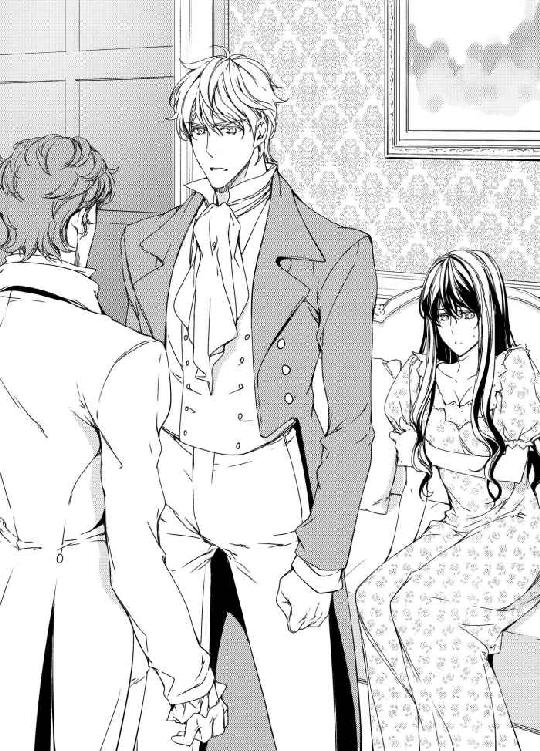
「名乗るほどのものでもありませんが──」
ジョシュアが一通りの自己紹介を済ますと、不躾だったノーマンの態度が豹変した。それでもどこか人を下に見るような態度だけは改めようとしない。
「あぁ、今は亡きユヴェール侯爵のご子息でしたか。それで、今日はどういったご用件でいらしたかお聞きしてもよろしいですか？」
ジョシュアは、エレナを振り返り、彼女と微笑みをかわした。
「先ほどエレナ嬢がおっしゃったとおり、彼女をここに送り届ける役を担ったもので。それと、卑劣で欲深な男から大切なレディを守るためにここに来たんですよ」
ジョシュアの視線が、長椅子に座るソフィアを捕らえた。その途端、瞳が柔らかに笑った。まるで、彼女の強ばった身体を包み込むように優しく。そしてまた視線はノーマンの方へと流れた。
「ここに来る途中、そこにいるメイドのアルマからだいたいの事は聞きましたよ。自分のちっぽけな体裁のために広めた嘘の噂が、彼女をどんな立場に追い込むか考えなかったんですか、あなたは！」
部屋の壁を揺るがすほどの怒声に、ノーマンはびくりと身体をふるわせて後退さった。
「ロンドンの美術家が集まるサロンに顔を出して、あなたについていろいろと聞いてきました。あなたは、コーンフィールド卿にずいぶんと寄生してらしたみたいですね？ しかも、ある美術商と結託して、不法な手段で彼の財産を引き出したとか」
「えっ？ どういう事？」
父親の名を出され動揺したソフィアを、ジョシュアが優しく制する。
「君の父上の財産について、一度知り合いの弁護士に再調査を依頼すると言っていただろう？ その調査がつい先日完了して、さっき言ったような事が発覚したんだ。その当事者が君の元婚約者と知った時はさすがに驚いたよ。だけど、お蔭で彼の一連の卑劣な行為が一気に繋がったよ」
ジョシュアは一枚の紙をノーマンの胸ポケットに押し込み、そのまま彼の胸ぐらを掴んで彼の頬を殴りつけた。
「その紙にうちの弁護士の連絡先が書いてある。何かあればそこへどうぞ」
盛大な音を立てて倒れたノーマンは、床に尻もちをついたまま声を荒げた。
「こんな事をしてただで済むと思っているのか！ 手繰れる限りの人脈を使ってそんなくだらない調査結果は闇に葬ってやる！ それに、彼女は噂を一度も否定しなかったぞ！ 後ろめたい事が実際にあったに違いないんだ！」
怒りの矛先をソフィアに向けたノーマンは、ずるずると壁を伝いながら体制を立て直した。
「どうだ、反論できないだろう？ 婚約の破棄を申し出た時、君は問い詰める僕に一言も言い返さなかった。もう処女ではないのかと聞いた時も、黙ってうなだれるばかりだった。なぜだ？ 実際、どこの馬の骨とも知れない男と密通していたから仕方ないと思ったんだろう！」
あまりの言い様にミルフォード夫人はエレナを連れてどこかへいってしまい、まだ入り口の近くに立っていたアンは長椅子まで駆け寄ってきてソフィアを腕に抱いた。
唇を震わせて俯いているソフィアを見て、ノーマンがそれ見た事かとせせら笑う。
「ユヴェール卿、あなた程の人がなぜ一介の家庭教師をそんなにもかばうんです？ 何か弱みでも握られているとか？ もしそうなら、さっきの暴力行為は一旦水に流してうちの弁護士共々一度話し合いを設けてもいいが」
ソフィアは、自分を抱き締めるアンの腕の中で屈辱にまみれていた。さっきジョシュアが彼を殴りつけた事で少しは溜飲を下げたが、過去にされた恥ずかしい質問まで持ち出されるなんて──。
「黙れ、このゲス野郎！」
天井にあるシャンデリアを落とす勢いでジョシュアが叫んだ。
「紳士的に話そうと努力していたがもう限界だ！ 貴様のように人を貶める事しか能のないクズは、一度彼女と同じ目に合わないと自分がどれほどの阿呆かわからないようだな。明日にでも貴様の卑劣行為を社交界の重鎮に触れ回ってやる。せいぜい自分の手が届く限りの人脈に頼るがいい！」
激昂するジョシュアに及び腰になるノーマンだったが、それでも精一杯の虚勢を張り、大声を出した。
「そんな事をしてみろ！ またソフィアに関する噂を蒸し返してやる！ レディ・ソフィア・コーンフィールドはどこの馬の骨とも知れない男と密通して婚約を破棄された挙句、見事行き遅れてよその家の家庭教師をしているとね！ 今度はメイドなんか使わず、僕が直接社交界に触れ回ってやる！」
男同士の罵声の浴びせ合いに、ソフィアとアンは長椅子に座ったまま抱き合い、震えている。
「ふん、どうぞお好きに。それと、言いふらすなら〝どこの馬の骨とも知れない〟というフレーズは止めて貰いたいね。それは俺だ！ ソフィアの処女を奪ったのはこのジョシュア・スペンサーであり、君の言う密通にあたる愛の行為を重ねていたのもこの俺なんでね！」
ジョシュアはそう言い終えると、ソフィアとアンの前に跪いてすまなさそうに眉尻を下げた。
「下品な言葉を聞かせてしまって申し訳ない。さぁ、レディ達。お手をどうぞ」
優雅なしぐさで二人に手を貸したジョシュアは、呆気にとられている彼女達に、にっこりと微笑んでみせた。
そして、口をぱくぱくさせているノーマンを残して、ミルフォード家の人々と共に早々にバークシャーを後にしたのだった。
※ ※ ※
バークシャーから揃ってケント州のドーバーに向かった一行は、ジョシュア所有のユヴェール邸にしばらくの間滞在する事を決めた。
小高い丘の上に建ち遥か先に海を臨める邸宅は、古城の趣と壮大さを併せ持ち、建物を囲む丘には、ヒツジやヤギが放し飼いにされている。
豪奢な天井画に数々の美術品、そこにいる使用人に至るまで歴史と品格を感じさせる。
両親も兄も亡き今、ここに住んでいるのはジョシュアただ一人だ。
〝こんな広い邸宅にたった一人で住んでいたのね〟
父母を亡くし弟妹と離れて暮らしているソフィアだったが、彼に比べれば自分が感じていた寂しさなど取るに足らないものだったように思う。
その夜、ディナーの後に応接室に集まったのは、ミルフォード夫人とエレナを除いた四人。既にミルフォード卿はワインをたっぷりと飲んでご機嫌な様子だ。
「いや、見事だった」
昼間の出来事を語りながら、ミルフォード卿はジョシュアを称え何度も祝杯を挙げる。
「お見苦しいところを見せてしまいました。言葉遣いの悪さもご容赦ください。船に乗っている時分に覚えたんですが、あんな場面ではつい口をついて出てしまいますね」
「それにしてもひどい話ね。彼の事は徹底的に懲らしめてやらなけりゃ駄目ね」
アンの言葉に、ジョシュアはゆっくりと頷く。
「ノーマンに関しては今も調査を進めています。おそらく今後社交界で今まで通り幅を利かせる事は難しくなるでしょうね」
調査によると、ノーマンは事前にわかっていたとおりソフィアの父であるコーンフィールド卿と同じ芸術家が集まるサロンに足繁く通っていた。
サロンを主催する貴婦人はともかく、そこに集まる者の中には、怪しげな美術商や商人も数多くいたのだという。その中にとんでもなく腹黒な女性美術商がおり、その女とノーマンが結託してコーンフィールド卿から財産を搾り取っていたところまで調査は進んでいる。
「女性というのは、美しくもあり恐ろしくもあるからね。うん、まったく......」
そう言って深い溜息をついたミルフォード卿は、そのままがくりと頭を垂れて居眠りを始めてしまった。
「お父様ったら！」
アンが肩を叩くと一瞬目を覚ますものの、すぐにまたうとうとと目を閉じてしまう。
「そろそろ休ませて貰った方がいいみたいね。ほら、お父様ってば！」
ミルフォード卿がやっと目を開けたのを機に、一同は各自部屋に戻りそれぞれの夜を過ごす事になった。
別れ際、アンがソフィアに耳打ちする。
「彼とよく話してね。もう私が言うまでもないでしょうけど」
「ええ、話すわ。明日またね、おやすみなさい、アン。今日はいろいろとありがとう」
軽く抱き合い、お互いの肩に頭を預けた。
「いいのよ、おやすみなさい、ソフィア。きっといい夜になるわ」
ミルフォード親子と別れた二人は、同じ時間を過ごすために並んで歩き始める。
アンがふと振り返ってみると、反対方向に歩いていくソフィアの手は、しっかりとジョシュアの腕に絡んでいた。
ジョシュアのプライベートルームは、落ち着いた焦げ茶色の家具に囲まれた南向きの部屋だ。
壁にある窓は大きく、外からの月明りを余すところなく取り込んでいる。
「まるで執務室ね。こんなにも本がたくさん」
ソフィアは、本棚にある革張りの表紙の上に指を滑らせながら部屋の中を歩いた。ジョシュアは、そんな彼女を微笑んだ顔で見つめている。
「昔から本を読みながら寝るのが癖でね。元々ここは書斎だったんだが、どうせならとベッドを運び込んで自分の部屋にしたんだ」
一連の騒動の後、二台の馬車に分乗してここに辿り着いた。
四頭立ての馬車に乗り込んだソフィアは、主にミルフォード母娘のおしゃべりの聞き役に回りながらこれまでの事を考えていた。
ジョシュアに別れを告げてからというもの、後悔ばかりしていた。
彼が信じてくれと言ったのに、自分はそう出来なかった。これ以上傷つきたくない、苦しみたくないと言って彼を遠ざけたくせに、実際はそうする事でもっと傷ついて苦しむ事になった。
〝話そう。アンに一度言われていたのに、私ったらどうしてそれを忘れていたのかしら......〟
ソフィアは、まず赤ん坊騒動の中でジョシュアを信じられず、一方的に別れを告げてしまった事を心から詫びた。彼はソフィアの謝罪を受け入れ、そうならざるを得なかった彼女の心情に理解を示した。
部屋の中はたくさんの蝋燭の灯りに照らされ、静かな時間が流れている。
「ねぇ、ジョシュア。これまでの事に関して、まだ何かお話があるんでしょう？」
彼女の問いかけに、ベッドに腰かけたジョシュアはゆっくりと首を縦に振ってみせる。
ディナーの席で一連の騒動の発端と解説を済ませたジョシュアだったが、まだ公に出来ないいくつかの事実があるのだ。
「おいで」
ヘッドボードに背中を預けたジョシュアは、ソフィアに向けて手を伸ばした。
少し恥ずかしげに彼のそばに寄り添った途端に、ジョシュアは彼女の腰を抱き寄せて腕の中に抱え込んでしまった。
軽いキスをかわし微笑み合う。三か月も離れていたのに、一度触れ合えばその事が嘘みたいだと感じる。満月の光が差す広々としたベッドの上で、ソフィアは彼の胸にゆったりと身体を預けた。
「さて、これから話す事は、良くも悪くもきっと君を死ぬほど驚かせる。聞いてくれるかい？」
「ええ」
「ソフィア。君にはあまり喜ばしくない話もする事になるが......」
ジョシュアの言葉に、ソフィアは微笑んで首を振った。
「平気よ。もう大抵の事では驚いたり傷ついたりしないわ。だから、遠慮なく話して」
「よし。これから言う事はここに来る途中、馬車の中でミルフォード卿にも話した。無論、君の父上に関する事は、必要最小限にとどめてある」
そう前置きをして、ジョシュアが語った事はさすがにソフィアの声をしばらくの間失わせる事実だった。
曰く、ロンドンでジョシュアに赤ん坊を手渡した黒マントの女性は、以前ミルフォード邸で働いていたメイドであり、彼女とミルフォード卿はついこの間まで愛人関係にあったのだ、と。
「まさか......それじゃあ、あの赤ん坊は、ミルフォード卿の子供だと言うの？」
「そうだ。あの夜、僕はミルフォード卿のイブニング・コートを借りていただろう？ あの濃緑色のコートは、彼が愛人と外で会う時にいつも着ていた愛用の品だったらしい。だから、あれを着ていた僕を薄闇の中で、ミルフォード卿と勘違いしたんだ」
ソフィアから別れを告げられたたジョシュアは、彼女の事をどうしても諦めきれず、どうにか自分の潔白を証明しようと引き続き黒マントの女性を探し続けた。
そして、警察やロバートの協力もあってようやく彼女の居場所を突き止め、レディ・シャーリーの元に連れて行っていろいろと話を聞き、事実を明らかにしてきたのだ。
「彼女とミルフォード卿は、元々はロンドンのある男爵夫人が主催するサロンで出会った。今はもうなくなってしまったが、当時そこは表向きは文学を語り合う場所、裏ではいわゆるお金で一夜の関係を結ぼうとする男女が集ういかがわしい場でもあったそうだ。そしてそこにはノーマンと、君の父上から財産を吸い上げた美術商も顔を出していたんだ」
「まぁ......！」
ソフィアは、ジョシュアの胸の上で身体を固くした。話の内容が、あまりにもショッキングなものだったからだ。
「彼らは結託し、言葉巧みに君の父上をそこに誘いこんだ。そして、酒を飲ませ、複数の女性と関係を結ばせたらしい。美術商は、その事で後日父上に脅しをかけた。財産をよこせ、さもなくばここであった事を社交界や子供達にばらすと──」
かすかに震えだしたソフィアの身体を、ジョシュアの腕がしっかりと抱き締めてくる。
「父は、お酒に弱い人だったわ。ワインを少し飲んだだけでふらふらになって、自分が何をしているかわからなくなるような......」
ジョシュアの掌が、ソフィアの背中をゆっくりと撫でさすった。
「父上は相当悩んでいたようだ。ノーマンは、表向きは父上に同情するふりをして、裏では美術商と通じ、いかにして父上からお金を巻き上げるか相談していたんだ。なぜここまでわかったかというと、美術商は、ミルフォード卿の元愛人と姻戚関係にあるからだ。つまり、彼ら三人は秘密を共有する仲だったんだよ」
ソフィアは、しばらくの間亡き父を思い、静かに涙を流した。そんな彼女を、ジョシュアは優しく抱き締めて慰めてやる。
「元愛人とミルフォード卿の関係は、彼女に他に好きな人ができた事で終わりを迎えた。二人は、お互い合意の上で別れる事を決めたらしい。だけど、その後彼女の妊娠が発覚して、彼女は美術商にその事を相談した」
「ミルフォード卿はそこでノーマンとも顔を合わせていたのかしら」
「たぶんね」
なるほど。ノーマンが訪ねて来た時、ミルフォード卿がなんとなく落ち着かない様子だったのは、そのせいだったのかもしれない。
「美術商は、その事をノーマンに話した。すると彼は、赤ん坊をだしにしてミルフォード卿からお金をゆすり取る事を思いついた。そして、元愛人を呼び出し、相当額の分け前を渡すと言って彼女を悪事の仲間に引きずり込もうとした」
「なんですって......！ なんてひどい......あんな小さな赤ん坊をお金を得るための道具にするだなんて......」
怒りに肩を震わせるソフィアを見て、ジョシュアはその身体を一層胸に強く抱いた。
「だが、一度は愛し合い、子供まで生してしまった仲の事だ。元愛人は、協力を拒絶したが、他の二人は容易に諦めない。思い余った元愛人は、ミルフォード卿に赤ん坊を託して身を隠す事にしたそうだよ。そして、どこからかミルフォード卿があの日ロンドンに来る事を聞きつけ、あそこで待ち伏せていたんだ」
話し終えたジョシュアは、深いため息をついてソフィアの髪の毛を撫でた。
「元愛人の話では、時期から考えて、赤ん坊がミルフォード卿の子である事はほぼ間違いないそうだ。これからどうしていくか......それはまた考えていかなきゃならない問題だね」
ソフィアは、こっくりと頷く。罪のない赤ん坊が、これから先辛い人生を送る事のないよう、皆で話し合っていかなければ。
「それにしても、ノーマンという男は、とんでもなく恥知らずの極悪人だ。彼は、今回の事とは別に、他でもよからぬ計画を練っていたみたいだ。彼ほどお金に執着する男は見た事がない。おぞましくて反吐が出そうに──あ、失礼。また下品な言葉を使ってしまった」
はっと口をつぐむと、ジョシュアはソフィアの髪の毛に、そっとキスをした。
ソフィアは、顔を上げてそのキスを唇で受け取り、二人はしばらくの間穏やかなキスと抱擁を重ねた。
「君が愛する父上の事を正直に伝えるのは辛かったんだが......。君の誤解を解くにはどうしても真実を伝えるしか方法がなかった。嘘をつくことはもちろんだが、真実を隠すというのも何かと誤解を生み、本来あるべき大切な時間すら奪ってしまう──」
それについては、この辛い三カ月を過ごしてきたソフィアも同意見だ。
思えば、お互いに思った事を口にするのをためらったばかりに、誤解と後悔を繰り返す事になってしまったのだから。
「これからはもう君には隠し事はしない。辛さや痛みを伴う話であっても、真実をありのままに話して一緒にそれを乗り越えていこうと思う」
おもむろに起き上がったジョシュアは、ソフィアをベッドサイドに立たせ、その前に片肘をついて恭しく跪いた。
「ソフィア、僕は君を心から愛している。出来る事なら、これからずっと君を守り愛しみながら共に長い人生を歩んでいきたいと思う。僕の一生をかけて君への愛を誓う──ソフィア、僕と結婚してくれないか」
彼の琥珀色の瞳が、ソフィアだけを見つめる。彼女は、差し出された右手に、そっと掌を重ね合わせた。
「あ......あぁ、ジョシュア！ 私......なんて言っていいか......もちろんだわ、ジョシュア！ 私だってあなたと共にこれからの人生を歩んでいきたいと思うわ。本当は、ずっとずっと、そう思っていたわ──」
ソフィアの瞳から大粒の涙が零れ落ちる。立ち上り、その涙をキスで受け止めたジョシュアは、感謝の言葉と共に彼女の顔にキスの雨を降らせた。
「もう随分前に一度プロポーズは済ませてたね。君は二度とも僕の求婚を受けてくれた。そして、今度こそ本当に僕の妻になるんだ。もう誰も僕達を阻むものはない」
ジョシュアのキスに応えたソフィアは、ふと五年前の記憶を頭の中に蘇らせた。
「私、お父様が大好きだったわ。それは今も変わらないけど、お父様だって間違いもすれば弱いところもある人間だったのよね......。ジョシュア、ごめんなさい......五年前、私は父の言う事をすべて鵜呑みにして疑う事をしなかったわ」
唇を噛んでいるソフィアの身体を、ジョシュアが腕の中に抱え上げた。そして、そのまままたベッドに横たわって、しっかりと彼女を胸に抱き締めてくる。
「お父様に関して、まだ何かあるんでしょう？ 話して。何もかも全部よ。もう隠し事はしないって約束してくれたばかりだもの。ね？ 私だってそうするから」
ソフィアのキスがジョシュアの唇に触れた。そのキスは、彼が隠していた事実を明らかにする解錠の役目をした。
「僕達が初めて舞踏会で会って、愛し合って、それぞれの家に帰ってからの事だ。僕が君の家に行った事は以前話した通りだ。あの時、君の父上に言われたんだ。君は侯爵の息子かもしれないが、嫡男じゃない。うちの娘を君のように放蕩者で親の財産を受け継ぐ事も出来ない貧乏貴族とは結婚させるわけにはいかない、と」
「父が......、父がそんな事を？」
あまりにひどい言い方に、ソフィアはその時のジョシュアの気持ちを思い、傷ついた表情を浮かべる。
「あぁ、ソフィア。そんな悲しそうな顔をしないでくれ。父上だって、本当はそんな風に思ってなかったに違いないんだ。ただ、君のお母さんとの約束を守りたかっただけなんだよ。彼はこう言ってた──娘の嫁ぎ先は、自分達より裕福な嫡男でなければならない。そう妻と約束したから、と」
「お母様との約束......」
ソフィアの髪をそっと撫でながら、ジョシュアは話を進める。
「そうだ。父上は、こうも言った。自分も妻も、娘に無駄な苦労をさせたくないんだって。ただ愛だけを優先して結婚を決めて、結局は不幸になった人を知っているから、と」
ソフィアは、亡くなった母の事を思った。母にとって、父との結婚は二度目のものだと聞いた事がある。きっと、なにかそう思わざるを得なくなった事情があるのかもしれない。そして、父はそんな母の想いを知った上で彼女を愛したのかも──。
「何にせよ、父上は君のためを思って君から僕を遠ざけたんだと思う。当時はそれがわからず、ずいぶんと憤りもしたけど、今ならわかるよ。君の父上は君と君のお母さんを心から愛していたからこそ、そうしたんだってね」
五年前、二人が離ればなれになった時の出来事をすり合わせると、どうやらお互いが出し合った手紙が届かなかったのも悉くすれ違ってしまったのも、すべてはコーンフィールド卿が間に入って繋がろうとする線を断ち切ってしまったからのようだ。
「あぁ、ジョシュア！ いろいろとごめんなさい。父に代わってお詫びするわ。父は──」
ソフィアの唇に、ジョシュアの舌がとろりと溶け込んできた。彼の掌が彼女の腰をぐっと掴む。
「ソフィア、もうお詫びなんて必要ないよ。今こうして君といる事が大事なんだ。そして、これからの事......。ソフィア、僕はずっと君だけを求めていた。今度こそ君を離さない。神に誓うよ──」
どちらともなくお互いの着ているものを脱ぎ去り、気が付けば何一つ身につけない姿で向かい合って座っている。キスを重ね、お互いの熱を確かめ合う。
「ソフィア、愛してるよ、ソフィア......！」
彼の手がソフィアの腰を強く引くと同時に、ソフィアは自身の腰を落とし彼の高ぶりを蜜孔の中に飲み込んでいく。ゆっくりと仰向けに寝そべったジョシュアは、ソフィアを腰の上に座らせ、双臀に掌を添えて軽く揺らし始める。
「あ、ぁ......ジョシュア......！ 愛してる......、あ、あぁッ......！」
「ソフィア、好きに動いてごらん。君の好きな角度を見つけて、僕のものを気持ちよくしてくれ」
彼の胸に両手を付き、身体を跳ねるように動かしながら、ソフィアはうっとりとジョシュアの身体が自分の中で固さを増すのを感じている。
「ひ......っ......」
跳ねて揺れるソフィアの乳房に吸い付いたジョシュアは、指と舌で胸の頂をくるくると捏ね回した。
「あ、んッ！ あ、ん、っ、んッ......！」
呼気を乱れさせて感じているソフィアを見て、ジョシュアは寝そべっていた身体を起こし、彼女の身体をぐるりと後ろ向かせた。
「ひゃ、んっ......！ ジョシュア......何......っ？ あ、あ！ あ！ ぁあ......！」
四つん這いになったソフィアを、彼が後ろから強く突き上げてくる。まるで、獣みたいな行為に、ソフィアは脳天を突き抜けるほどの快感を覚えた。
「い......、ジョシュ......、ア......、あンッ！ あぁんッ！」
「仮面舞踏会の夜も、こうして君を攻め立ててあげたね。さぁ、もっと啼いて......、ソフィア、君のいやらしい声をもっと聞かせてくれ」
激しい愉悦に耐え切れずに、ソフィアはシーツの上に上半身をくずおれさせてしまう。その事が、一層彼女の腰を高く掲げさせて、彼のペニスをより深く誘うような格好になる。
「あぁ、ソフィア......、なんて恰好を......。君のこんな姿は、僕だけにしか見せちゃいけない。ほら、もっと恥ずかしくしてあげるよ。愛しいソフィア......」
蝋燭の炎が、二人が発する熱でゆらゆらと揺れる。
「君の中に入っているのが良く見えるよ。君のヴァギナが、僕のペニスをすっかり飲み込んでしまっている。いやらしくひくついて、もっと深く突いて欲しいとねだってるよ」
ゆっくりと腰を揺らめかせながら、ジョシュアが低い声で呟く。
「ゃあ......んっ......、言わないで......、恥ずかし......いから......っ、そんな事......、あ、ァン！」
ずぷずぷと音を立てて彼女を攻めていた彼の猛りが、いきなり引き抜かれぶつかっていた腰がすっと引かれる。次の瞬間、高く掲げられたままのソフィアの蜜孔に、ジョシュアの舌が沈んだ。
「あ、ゃっ......、だ、めッ......、あん、あぁッ......」
恥辱と快楽がソフィアの全身を燃えるように火照らせ、ジョシュアの掌に掴まれた彼女の細い足首の腱がピンと固く張った。
「ぁ、は......ぁ、......ぁん......」
ちゅぷちゅぷと蜜に沈む彼の固く尖らせた舌が、ソフィアの蜜窟に差し込まれては抜かれる。
巧みに中を掻き回す舌に翻弄され、ソフィアは上半身を伏したまま首をもたげ恍惚とした表情を浮かべた。
「ジョシュ......ぁ、あっ......！ ......ッ！」
彼の指先がぷくりと膨らんだ秘芽を挟んで、薄い皮を剥いて中にある角ぐんだ秘芯を露出させた。敏感なそこを指の腹で捏ねられ、ソフィアは声にならない叫びを上げて身を捩った。
「......ぃ、......ぁ、あ......ッ......！」
泣きたいほどの快感とじれったさが、彼女の腰を揺らした。
「ソフィア、言ってごらん。どうして欲しい？ 正直に言えば、ちゃんとしてあげるよ。言わなければ、もっともっと焦らしてあげる。どっちがいい、レディ？ お気に召す方を選ぶといい」
「ひぁっ......！」
くりくり、と秘芯を舌で舐められ、ソフィアは両膝を震わせて痛いほどの愉悦に痺れた。
「お......ねがい......、ジョシュア......っ......、入れて......。中に......うんと奥に入って来て──」
「いい選択だね、レディ」
ふっと柔らかに微笑んだジョシュアは、ソフィアの肩を抱いて彼女をぐるりと反転させ、シーツの上に仰向けに寝かせた。
「愛してるよ、ソフィア。何度抱いても物足りないくらいだ。君をもっと一人占めにしたい。頭の先からつま先まで......。君のすべてが欲しくてたまらないよ」
「ひ、ぁっ......」
唇が融け合うようなキスと共に、ジョシュアの茎幹が深々とソフィアの中に差し込まれる。
「......く......ぅ......」
熱い蜜がにじみ出る蜜窟の中、彼の固くしなやかなくびれが淫襞をクニクニとめくっては捏ね回していく。
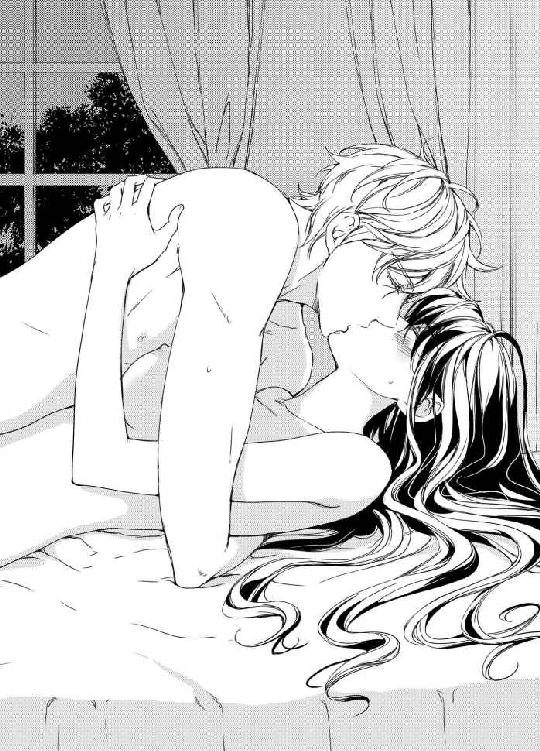
「ジョ......シュア......、ぁ......私のすべてはあなたのものよ......。もうずっと前から、そしてこれからもずっとよ......ぁンッ」
「ソフィア、本当か......？」
こくりと頷いたソフィアの顔に、ジョシュアのキスが止めどなく降り注いだ。
「嬉しいよ、ソフィア......。やっと君を手に入れる事が出来たんだな。君は僕にとっての最高のレディだ。君とこうしていられる事を神に感謝するよ──」
「ぁあ、あ......ジョシュ......ァ」
「もうここは君の居場所だ。愛しい僕の花嫁......、好きなだけ啼いて叫ぶといい」
「っん......、ぁあんッ......！」
彼女の啼き声を誘うように、ジョシュアの腰が一層激しく抽送を繰り返してくる。
「ひ......、ぁ......あぁッ！」
これまでにないほど強く執拗に攻められたソフィアは、彼の肩にきつく吸いつきそこに薔薇色のキスの痕を残した。
※ ※ ※
クリスマスがもうじきやって来る十二月のある日。
イギリスの冬には珍しいほど空は青く晴れ渡り、ここロンドンの歴史ある教会の中には、今日という人生で最大級に幸せな日を迎えた二人の幸せを願う人々が集っている。
「ソフィアがいなくなるなんて、嫌だわ。しかも、私の白馬の王子様にさらわれちゃうだなんて！」
不平を言うエレナだったが、ソフィアの弟であるユアンが姿を見せた途端に、王子様の役目をあっさり彼に移してしまったみたいだ。紺色の軍服を着たユアンは、以前よりずっと大人びて逞しくなったように見える。彼がいる船の艦長は以前ジョシュアが軍にいた時の上司であり、彼が無事海軍に入ることが出来たのは、実のところジョシュアの口利きのお蔭だった。
二人が結婚に至ったのは喜ばしい事だったが、いきなりその報告を受けた時のミルフォード夫妻の顔は、まさに寝耳に水といった表情を浮かべていた。
夫妻は、いろいろとアンに質問を浴びせかけてみたものの、結局はアンのたった一つの答えですべてを納得せざるを得なかった。曰く──
「あら、ジョシュアはもちろん、ソフィアも私も、あの薔薇色のドレスのレディが私だったなんて、一言も言ってないわよ」
式が始まり、オルガンの音が厳かに響き渡る。
教会の天井を飾る見事なステンドグラスは、外の陽光を浴びて美しく色を発し、聖堂内を神秘的に彩る。
祭壇の前に立つ花嫁のソフィアは、全体に薔薇の花をちりばめた純白のウエディングドレスに身を包んで、一方花婿のジョシュアは、濃紺のフロックコートに白のベスト、胸元には花嫁と同じ白い薔薇を飾っている。
介添人として横に立っているのは、アンとロバート。二人は、来月ここで結婚式を挙げる事が決まっており、今日の花嫁花婿らを自分達と重ねて幸せそうに微笑んでいる。
新婦側の席には海軍の制服を着たユアンと妹のコリーンが嬉しそうな顔で座っている。
婚約から僅か半月で結婚式を挙げる事が決まったのは、二人が一日も早く正式な夫婦になりたいと思ったから。
急遽決まった式に集まった人々の中には、噂の一件以来疎遠になっていたソフィアの親戚も多数交じっていて、誤解を解いて再会を喜んだり、無沙汰を詫びられたりと、式が始まるまでの間賑やかな時間を過ごしたりしていた。
式の間、ソフィアはずっと天にも昇る気持ちだったし、入堂から誓いの言葉まで恥ずかしくてジョシュアの顔をまともに見る事が出来ずにいた。
「ソフィア」
向かい合い、誓いのキスをする時に彼女のヴェールに手をかけたジョシュアは、その時彼女が喜びのあまり静かに涙を流している事に気付いた。
その姿は、人々に心からの感動を与えて、花嫁が真に清らかであり、決して後ろ指を指されるような女性ではない事をその場にいる全員の胸に強く刻んだ。
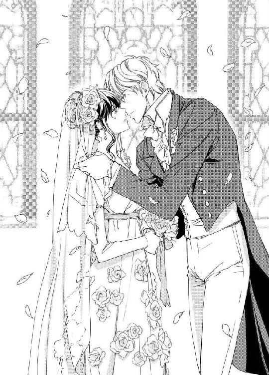
司祭からの結婚宣言を受け、何度も瞬きをして涙を散らし、結婚の証明書に名前を書く。
その後に待っているのは、半月に渡るフランスへの新婚旅行だ──。
二人がフランスに発つ日、見送りをしようと最後まで残ってくれていたアンとロバートは、最近のミルフォード夫妻についてソフィア達と話している。
「お母様ったら、私達の結婚が決まってから大忙しなの。あれだけ反対しておいて、もうそんな事けろっと忘れちゃってるみたい」
隠し子の事が発覚してからというもの、ミルフォード卿は掌を返したようにアンとロバートの結婚に異を唱えなくなった。きっかけは、レディ・シャーリーのところに赤ん坊を残したまま、母親が失踪した事。
母親に捨てられてしまった赤ん坊を哀れに思ったアンとロバートは、結婚した暁にはその子供を引き取り、二人で育てていく事を決心したのだ。
周りの希望で、一連の騒動のことを一切知らされていないミルフォード夫人は、夫の豹変ぶりを訝りながらも、結局は娘の幸せが優先だと考えを改め、式に向けて毎日いろいろと準備を進めている。その手伝いを主にしているのは、ノーマンのところから引き取ったメイドのアルマだ。
新婚旅行に出て十日目の夜。
二人は、ジョシュアの友人であるマロー伯爵からの招待を受けて、ヴェルサイユで開かれる仮面舞踏会に出席している。
招待客はヨーロッパ各地から集まって来ており、様々な言語が会場のあちこちから聞こえてくる。大広間ではポルカが踊られ、庭園では松明に照らされた噴水が美しく輝く。
時折り打ち上げられる花火に照らされ、物陰でキスをするカップル達が浮かんではまた薄闇の中に溶け込んでいく。
その夜ソフィアが身に着けていたのは、瞳の色と同じ紫がかった青紺色のドレスだ。目元を隠すのは銀色の縁取りがある白羽の仮面。
伯爵の奥方であるマロー夫人は、ソフィア達の来訪を喜んで二人をたくさんの友人達に紹介して回りたがった。しかし、仮面をつけている上に初めて訪れる邸宅であるため、ソフィアは人混みに紛れて広い庭園の中でうっかり迷子になってしまった。
その夜ブルーの上着を着ていたはずのジョシュアが、どこを見回しても見当たらない。たった今隣にいたダークグリーンのドレスを着たマロー夫人も、色とりどりのドレスを着た貴婦人たちの中に紛れ見失ってしまった。
「困ったわ......」
フランス語が喋れないと言うわけではないけど、やはり一人取り残されてしまうと心細い。
仕方なく植木伝いに大広間を目指す途中、何人かの紳士にダンスに誘われたり、手に小さなメモを渡されたりした。
失礼がないようそれを丁寧に断りつつ、やっとテラスまで行きついた時いきなり背後から聞き覚えのある声が聞こえた。
「失礼、マダム。踊っていただけませんか？」
振り返り、返事をする前にぐっと腰を抱かれた。
「ソフィア。やっと見つけた。いったいどこに隠れていたんだ？」
「ごめんなさい。すっかり人混みに紛れてしまって」
彼女の手を取ったジョシュアは、その中に小さな紙切れが幾つも握られているのを見つけた。
「どうやら、うちの奥さんはここでも大人気らしいな」
「あら、私、一人一人ちゃんとお断りしたのよ。でも、中には通りすがりにメモを渡して去っていく方がいらして。その場に捨てるわけにもいかなくて、こうして持っていただけだわ」
ジョシュアは、つけていた孔雀の羽の仮面をずらして、ソフィアにキスをしようと腰を屈めた。
「一曲踊ったら、もう部屋に帰ろう。昨夜も遅くまで出歩いていたし、明日はここを出てロワールに向かうし......」
ジョシュアの官能的なキスがソフィアの唇を襲った。
「ジョシュアったら、人が見てるわ」
「見せてやればいいさ。僕は、君が自分の奥さんである事を自慢して回りたいくらいなのに」
ワルツが始まり、二人は大広間を踊りながら移動していく。煌びやかな装飾が施された壁や天井には、いくつものシャンデリアが蝋燭の光を放っている。
色とりどりのドレスがくるくると舞う中、ジョシュアは上手くソフィアをリードして自分達の部屋に続く廊下へと彼女を連れ出した。
邸宅の二階に用意された部屋に辿り着くまで、いったい何度立ち止まってキスをしただろうか。
おかげで、部屋に辿り着いた時にはもうすっかりお互いが欲しくて堪らなくなってしまっていた。
倒れ込むようにしてベッドに横たわって、着ているものを乱暴に脱ぎ散らしていく。なんと言っても、今はハネムーン中だ。少しくらい羽目を外してもきっと罰は当たらないに違いないから。
飴色に染まるシーツの上、二人して裸の身体を重ね合わせる。
「ソフィア、抱いていいかい？ ここのところ忙しく動き回っているから、ゆっくり君を味わえていないんだよ。だから、本当のことを言えば、今日は舞踏会なんかそっちのけで君と睦みあっていたかったくらいだ」
ジョシュアは、矢継ぎ早にソフィアの顔や身体のあちこちにキスして、彼女がくすぐったがるのを見て楽しんでいる。
「私、以前アンに言われた事があるの。あなた達って、会うたびに......その......セックスしているのねって。たしか、仮面舞踏会が終って、あなたが私を追ってミルフォード家に来た次の日に言われたんだと思うわ」
それを聞いたジョシュアは、可笑しそうに微笑んで彼女の胸の先をきゅっと摘まみ上げた。
「きゃっ！ ジョシュアッたらっ......あンッ！」
彼の手が、ソフィアの脚の間に沈んだ。そして、そこがもうたっぷりと濡れている事を確認すると、堪らないといった風にソフィアの瞳を覗き込んでくる。
「そりゃそうさ。お互いに好きな気持ちがあれば、そうなっても当然だろう？ 昔も今も僕は君に夢中だ。五年も離れてたなんて信じられない......。もう隠し事はしないと約束したから正直に言う。僕がそばにいない間に、君が僕以外の男とどう過ごしていたのかと思うと、嫉妬で気が狂いそうになるんだ」
「まぁ！」
ジョシュアの思いがけない弱音を聞き、ソフィアは心をきゅっと掴まれるような喜びを覚えた。
「大丈夫よ、あなたは狂ったりしないわ。だって、あなたとの恋に破れてからというもの、私は誰とも恋愛なんかしてないもの。あなた以上の人なんか見つかりっこないし、一生一人で生きていこうと決めてたって言ったでしょう？ だから、あなただけなの。他の人とこんな事した事なんかありはしないの」
「本当か、ソフィア！」
子供のように大喜びのジョシュアを見て、ソフィアは呆れたように裸の肩をすくめた。
「もちろん本当よ。約束だから正直に言ったの」
「ブラヴォ！」
そう叫んだジョシュアは、ソフィアの身体中にキスを落として、右太腿にある薔薇の痣に頬ずりをした。
「君の薔薇を知るのは僕だけなんだね。さぁ、愛し合おう。もう待ちきれないよ」
さっそく唇にキスをし、本格的に襲いかかろうとするジョシュアを、ソフィアの指が制した。
「待って。そんなに激しくしたらお腹の赤ちゃんがびっくりしてしまうわ」
それを聞いたジョシュアの動きが、ぴたりと止まる。
「何だって？ 今なんて......赤ちゃん......？ 僕らの赤ちゃんが出来たっていうのか？」
次々に飛び出す嬉しい告白にジョシュアは我もなく取り乱し、ソフィアのつま先を掌に掲げ恭しくそこに唇を押し当てた。
それは、彼がソフィアと初めて会った日の夜と同じ仕草だ。
「僕の奥さんは、僕を何時だっていろいろと驚かせてくれる！」
ジョシュアはそう叫んで、嬉しそうにソフィアの頬に唇を寄せた。
「あら、私はただあなたを愛しているだけ。そうしていると、不思議な事にあなたが喜んだり驚いたりしてくれるの。それに、あなただっていろいろと私を驚かせてくれているわよ」
余裕の笑みを浮かべるソフィアに、ジョシュアは降参したように両手を広げた。
「愛してるよ、ソフィア。君は僕だけの美しい薔薇の花だ。君といれば僕は一生飽きることはないね」
「愛してるわ、ジョシュア。一生をあなたと共にいられたら、もうそれだけで幸せでいられる」
ソフィアのお腹に手を置いたジョシュアは、彼女の唇に感謝のキスを落とした。
彼の胸に身を寄せたソフィアは、彼の腕の中こそが自分の居場所である事を改めて感じていた。
おわり
あとがき
はじめまして。トパーズノベルスで初めて書かせていただきます、有允ひろみと申します。
『仮面舞踏会の夜に～家庭教師は侯爵のキスに揺れる～』を読んでくださり、まずは心からのお礼を申し上げます。楽しんでいただけましたでしょうか？
物語の舞台は、十八世紀初頭イギリスの貴族社会。ヒロインのソフィアは、真面目で頑張り屋のお姉さん気質。一方ヒーローのジョシュアは、比較的自由な感性を持った美形次男坊です。
この時代、貴族の子女は自由恋愛が許されず、家柄や財産で結婚が決められていました。夫を選ぶ際、親の意思優先、本人の意思など関係ないに等しかった時代に生きるヒロイン達を、皆さんはどう思われるでしょうか。
もちろん、好きでもない男性の元に嫁がされたり、愛する人と無理矢理引き裂かれてしまったりなど、とてもじゃないけど受け入れられないし、この上なく悲劇的な状況ですよね。
しかしながら、物語を書かせていただく立場からすると、こんな理想的でワクワクしてしまう時代背景はなかなかありません。少なくとも、私はものすごく胸が躍ってしまいます。
愛し合う恋人達に、どんな困難が降りかかり、試練が待ち受けているか。素敵な男性と運命的な出会いを果たして、さあこれから深く愛し合おうとした矢先にとんでもない横槍が入り引き裂かれる。なんだかんだと心が折れ、もう駄目だわ！ とヒロインがすべてを諦めようとした矢先に颯爽と現れてすべてを丸く治めてしまう美しきヒーロー。これこそが、今回私が書きたかった『白馬の王子様』像でした。
完全無欠で、しかしながらどこか弟的な可愛らしさも併せ持つジョシュアは、一生涯家族を愛し、守り続ける完璧なダーリンでい続けてくれる事でしょう。だけど、ソフィアと二人きりの時は、ちょっとわがままを言ったり拗ねてみたりと、子供っぽい面も見せてくれる。紳士的だけど、必要とあらば敵に向かって激昂もするしエロティックな誘惑者にもなる。
〝ああ、ソフィアが羨ましい！ 私もこんなヒーローに愛されてみたい！〟
これを読んだ方が、そう思ってくださるなら、これ以上嬉しい事はありません。
書き終えてみると、ああ、次はこんなヒーローを書きたい、こんな風にヒロインを零落し、翻弄してみたいなどと、いろいろなシーンが頭の中に思い浮かんだりしております。
出来る事なら、今これを読んでくださっている皆さんと、また違う作品でお目にかかれますように。
最後になりましたが、この物語を書くにあたってお世話になりました関係者様、うっとりするほど素晴らしいヒロイン＆ヒーローを描いて下さったＯＤＥＫＯ先生（ジョシュア......素敵過ぎて悶絶しました）、いつも励ましてくれる心の友、その他見守ってくださっている方々に心からの感謝を捧げたいと思います。
二〇一六年二月吉日
有允ひろみ
トパーズノベルス
同時配信二〇一六年二月二十六日配信予定
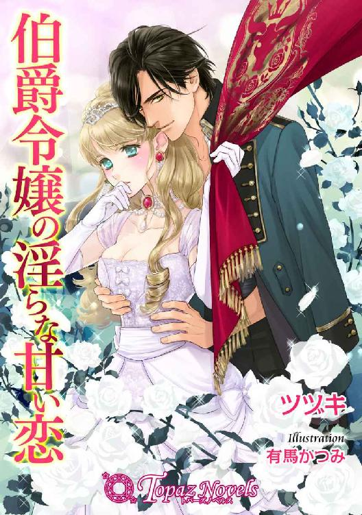
伯爵令嬢の淫らな甘い恋
【書下ろし・イラスト十枚入り】
著者：ツヅキ
イラスト：有馬かつみ
「ん...、相変わらず狭い、が......悪くない」
コルネリウス辺境伯の末娘リーゼルは、人質同然にウルバッハ帝国の皇子アレックスの愛妾にされる。人質らしく振舞うつもりだったのに、アレックスの策略と手ほどきによって、皇子の正妃候補へと名乗りをあげることになって......。
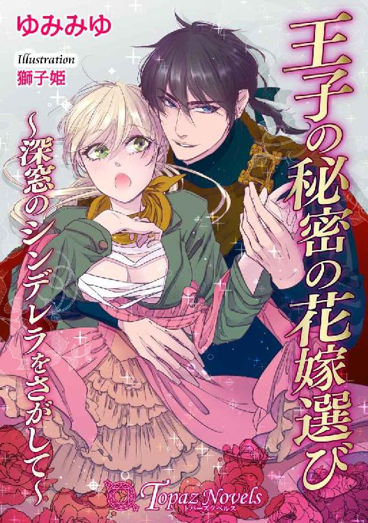
王子の秘密の花嫁選び～深窓のシンデレラをさがして～
【書下ろし・イラスト十枚入り】
著者：ゆみみゆ
イラスト：獅子姫
初めてにしては、ずい分濡れているぞ......ここに、月を映した湖があるかのようだ。
宮廷貴族の長女・アンジェは、父の後妻に命を狙われ、預けられた宮廷画家の元で育てられた。自分が女性だという認識がなく、ある夜、湖で裸になり泳いでいるとき、ベルトラン王子に裸身をさらしてしまう。王子に濃厚な愛撫をされ、その快楽に溺れてしまうが......！
トパーズノベルス
近日配信二〇一六年三月二十五日配信予定
黒侯爵と麗しの歌姫
【書下ろし・イラスト十枚入り】
著者：深雪まゆ イラスト：深山キリ
いい声だ。それが聞きたかったんだ。すごく濡れてきている。気持ちいい？
美声の子爵令嬢のアリアは川の畔の秘密の場所で、一人歌を奏でていた。そこでアドニスという青年と出逢い、甘い言葉で口説かれる。しかしアリアは姪のリリーシャからアドニスが、残忍で冷酷と噂の『黒侯爵』ではないかという話を聞かされるが......。
蜜惑の淫らなレッスン
【書下ろし・イラスト十枚入り】
著者：麻倉とわ イラスト：ＯＤＥＫＯ
ほら、見てごらん。ララのかわいい花びらがうれしそうに震えている。
ヴォルガンド王国の第二王女ブランシェは、政略結婚ため隣国に嫁ぎに来たのだが、つかの間の自由を欲し、逃亡を図る。しかし中途で泊まった宿にて悪漢に絡まれてしまう。そこへ彼女を救いにアルという青年が現れたが！
水晶の処女姫と褐色の騎士
【書下ろし・イラスト十枚入り】
著者：春原いずみ イラスト：セイン流
あなただけを......愛しています。もう......ほかの誰も愛さない......。
ウェブスター伯爵家次女で未来を視る力を持つクリスタルは、護衛の騎士を与えられる。その騎士アレクシスの優しさに触れ、敬遠していた舞踏会に顔を出すと注目を浴びる。今まで主役であった姉・キャロラインは妹へと嫉妬し......！
トパーズノベルス
仮面舞踏会の夜に～家庭教師は侯爵のキスに揺れる～
電子第一版発行 二〇一六年二月二十六日
著 者 有允ひろみ
イラスト ＯＤＥＫＯ
編 集 オフィスふたつぎ 二木由利子
デザイン 荒木香樹
発行所 会社名 アイデジタルパブリッシング
所在地 東京都渋谷区渋谷一‐八‐七
© Hiromi Yuuin / ODEKO / Ai digital publishing 2016
※本書の一部、あるいは全部を無断で複製複写（コピー、スキャン、デジタル化等）、転載、上演、放送することは法律で特に規定されている場合を除き、著作権者、出版社の権利の侵害となるため禁止します。
本書を代行業者等の第三者に依頼してスキャンやデジタル化することは、たとえ個人や家庭内で利用する場合であっても一切認められておりません。